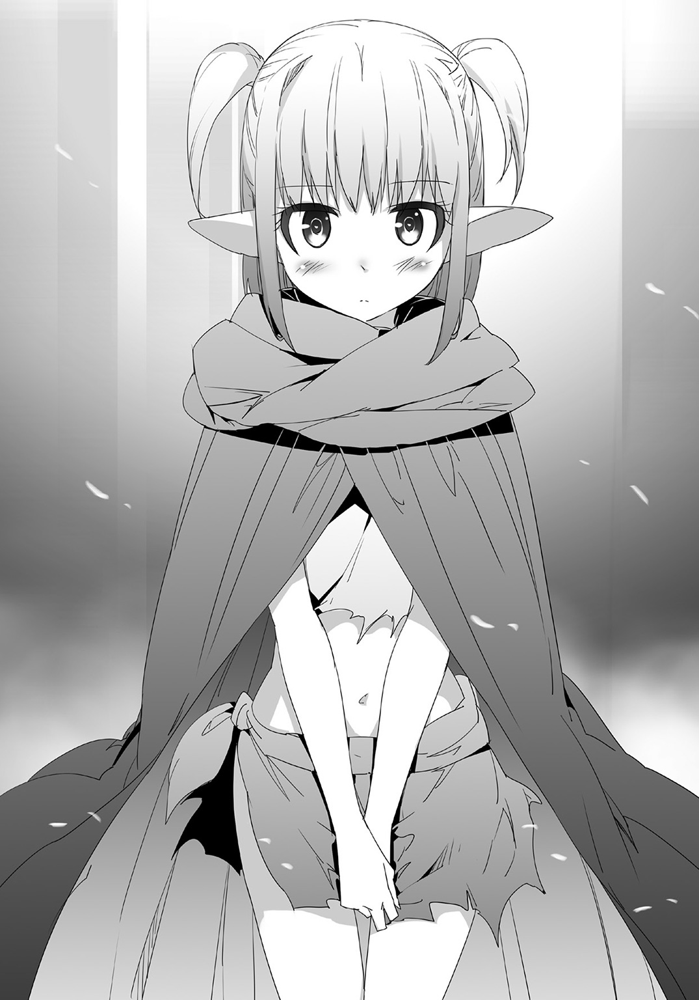
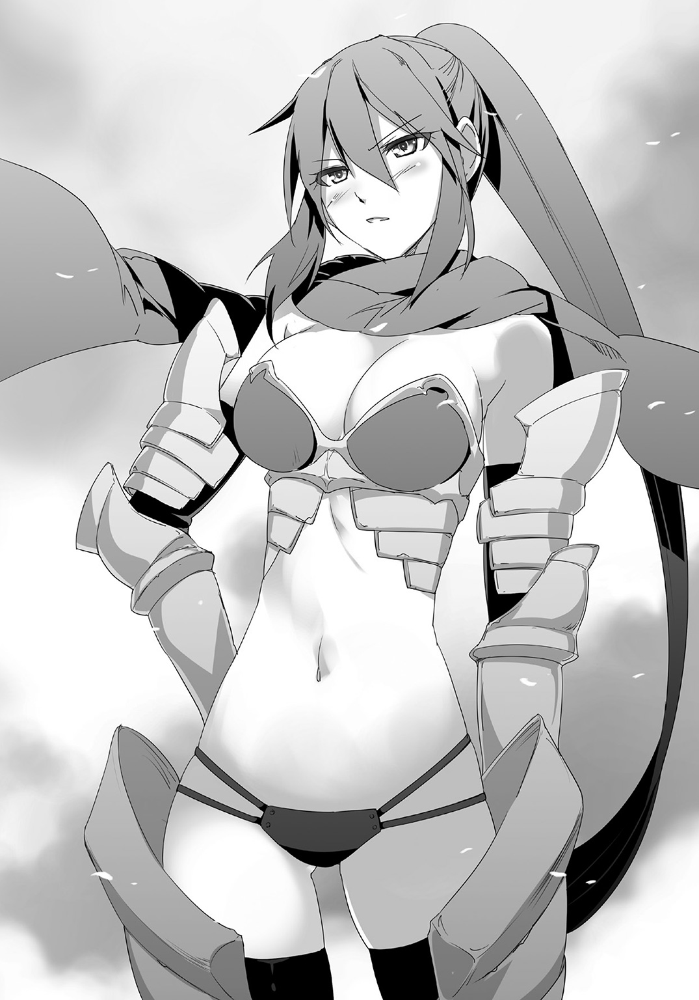

| 笑顔で魔力チャージ 2 ～無限の魔力で異世界再生 | |
| 三木なずな | |
この本は縦書きでレイアウトされています。
また、ご覧になる機種により、表示の差が認められることがあります。

 ダッシュエックス文庫DIGITAL
ダッシュエックス文庫DIGITAL
笑顔で魔力チャージ２
～無限の魔力で異世界再生
三木なずな
CONTENTS
第27話 三人目
リベックの町、黄金屋敷の跡地。
そこで、おれは奴隷の二人と家を作っていた。
「メニューオープン。まずは木の家だ」
「アブノイ草とブッシノ石はわたしが」
「じゃあわたしは木片を！」
早速駆け出す二人。意気込んでるのは、早く首輪を取り戻したいからなのかもしれない。
「待て待て」
二人を呼び止めつつ、更に地面に魔法陣を二つ作る。
一つは『二階建ての家』、もう一つはゴールドカードになって解禁された『小さな館』だ。
『二階建ての家』は木の家を素材に、『小さな館』は二階建ての家を素材に作る。
「わかりました、一緒に集めます」
「お待ちください！」
二人はそう言って駆け出していった。
それを見送って、メニューを確認する。
アキト
種別：ゴールドカード
魔力値：４９８８７９
アイテム作成数：４８１２
奴隷数：２
魔力は黄金屋敷を破壊しても、まだだいぶ残ってる。
これでいろいろ作れる。ゴールドカードになって解禁されたことも含めていろいろできる。
まずは乗り物をいろいろ作れるようになったから、四つの町をつなぐ交通網を整備しよう。
住民が一気に増えたから、食料《プシニー》も増産しよう。ちなみに一○○個まとめての生産ができるようになったけど、消費魔力は１５０と、一個ずつ作ったときの一・五倍だ。
さすがに誤差じゃすまない差になった、次のランクで千個まとめてが解禁されて、魔力消費が倍の２０００になってもちっとも驚かない。
それから町の拡張とか、住民を増やすこととか。
「領主様ー」
声が思考に割り込んできた。
二十代後半くらいの女、リベックの住人の一人がやってきた。
「領主様、男衆が狩りに行くのに武器が足りないって言ってるんだけど、なんとかしてもらえないかね。二○人分くらい足りないんだ」
「わかった、これが終わったら作りに行く」
女はお礼を言って去っていった。
またやることが増えた。
えっと、やらなきゃいけないことは全部でどれくらいだ？
ちょっとばかり混乱してきた。
混乱してるところに、リーシャとミラが戻ってきた。
二人は集めてきた素材をそれぞれの魔法陣に入れて、また飛び出していく。
「......非効率的だな」
『小さな館』の素材が全部揃った（二階建ての家以外）のに、木の家すらできていないのを見て、おれはそうつぶやいたのだった。
おれもバタバタ、二人もバタバタしてた。
☆
「初めまして、カザンの長たるマルタの名代、ヴァレリヤと申します」
できたての館の中、客を接待する応接間。
そこで一人の女と向き合っていた。
女は落ち着いた感じのする、才媛ふうの美女だ。それがおれに頭を下げている。
「ああ、おれはアキト」
「存じ上げております。四つの町を統べる今もっとも勢いのある領主様。噂はカザンにも届いております」
「そうか」
カザンってのは地名、もしくは町の名前か？
となるとマルタってのはそこの長で、目の前のヴァレリヤって女はその部下ってことか。
最初はただの客かと思いきや......これはもしかして外交使節か？
別のところの領主の使者が領主であるおれに会いに来た。
......なんてことだ、どう考えても外交じゃないか。
いろいろバタバタしすぎてて、それすらわかってなかった。
頭の中で心の整理をしてから、改めて彼女に聞いた。
「で、そのヴァレリヤがおれになんの用だ」
「まずは、いきなりの訪問にも快く応じてくださって、ありがとうございます」
また頭を下げてきた。別に断る理由がなかっただけなんだが。
「ここに来るまで町の様子を見させてもらいました。以前とはまるで違う、活気に満ちた町でございます。まるで生まれ変わったかのよう」
「前はそんなにひどかったのか？」
「ええ、皆が......そう、息を潜めて生きているかのような、辛気くさい町でした」
マラートの圧政のせいだな。
「建物も新しくなっていて、人々は豊かになったように思えます。この荒廃した世界で屈指の豊かさかと」
言いすぎじゃないのか？ さすがにこれで屈指の豊かさはないと思うが。
そのあともヴァレリヤは褒め続けた。
町がいかに豊かだと、力説し続けた。
「これもひとえに、アキト様のお力あってのことかと」
きたか。とおれは思った。
「そんなアキト様に、お願いしたいことがあり、参上いたしました」
「......なんだ、願いって」
「図々しい要望かとは思いますか......」
もったいぶられる、思わずごくっと生唾を飲む。
「食料を......融通していただけないかと」
「......うん？」
肩すかしを喰らったような気分だ。
どんな無理難題を突きつけられるのかと思えば、食糧か。
まっ、食糧くらいなら。
クソまずいけど腹だけはふくれてカロリーになるプシニーを山ほど分ければ。
「この荒廃した世の中で、もっとも価値のある食料の無心など厚かましいかとは思いますが。なにとぞ......なにとぞっ」
うん？
ヴァレリヤは結構切羽詰まった表情をしてる。
そんなになのか？
いやでも、そうなのか。
異世界に転移してきてからのことを思い出す。
最初の町、ビースク、マガタン、そしてここリベック。
おれが関わった町はいつも食糧不足にあえいでた気がする。
というか滅びかけた世界だし、世界の大半が荒野だ。
普通に......食糧不足が蔓延してるんだ。
そうか。
「わかった」
「――では！」
「そっちは住民数どれくらいだ？」
「約五○○です」
「わかった。当面必要な分を渡す」
五○○人掛ける三食掛ける一カ月くらいでちょうどいい量かな。
となると４５０００か。
効率のよさを考えて一○○個単位で生産するので、消費魔力は６７５００。
まあ、たいした量じゃない。
「本当にありがとうございます！ アキト様は我らの救世主です！」
ヴァレリヤに頭を下げられた。
まあでも、食はな。
衣食住の中で、多分一番優先順位が高いところだろうな。
「ところで......小耳に挟んだのですが、アキト様はエターナルスレイブを二人も侍らしているとか」
「うん？ ああそうだ。それがどうした」
「もしよろしければ、一人連れてきたのですが......お受け取りください」
「一人って、エターナルスレイブをか？」
「はい。入って」
部屋の外に向かって呼びかけた。
ドアが開く、全身をマントですっぽり覆った子供が入ってくる。
子供は金髪に尖った耳という、エルフっぽい見た目の、エターナルスレイブだった。
「どうぞお役立てください」
ヴァレリヤがまた頭を下げた。
受け取ってほしい、というのがひしひし伝わってきた。
可愛いエルフ、更に援助の対価。
断る理由はどこにもない。
「わかった、もらう」
「ありがとうございます！」
瞬間、ＤＯＲＥＣＡが光る。
メニュー欄の中の奴隷が３になった。

第28話 超パワーファイター
ヴァレリヤが帰ったあと、部屋の中はおれと小さな奴隷の二人になった。
奴隷は立ったまま、おれをじっと見つめている。
リーシャやミラに比べてかなり小柄で、表情も乏しい感じがする。
「とりあえず、お前の名前は？」
「ユーリア」
無愛想な声で答えた。
「ユーリアか、その見た目、お前もエターナルスレイブなんだな」
「そう」
「そうか、じゃあこれからよろしくな」
「はい」
フラットな口調で言われた。
沈黙が流れた。ユーリアと見つめあった。
なんとなく沈黙がつらかった。おれは立ち上がって、部屋を出た。
館の中を歩いて、別の部屋に入った。
そこに大量の紙があった。
このリベックの町で、おれに何かしてほしい、ものを作ったり直してほしいという要望書だ。
つまりは領主としての仕事だ。
それを何枚か取って、見つめる。
「どれからやろうかな」
つぶやく。
一枚目は町の北側に住んでる住人からのもので、壁が前の戦闘で壊れたから直してくれというものだ。
もう一枚は慢性的な飲み水不足を何とかしてくれっていうやつ。
更にもう一枚取ってみると、今度は子供が病気だから助けてくれっていうやつ。
壊れたものも、飲料水も、子供の病気も。
全部さくっと行ってさくっと片づけられるものだけど、あまりにもごちゃごちゃしすぎてどこから手をつけたらいいのかわからない。
「うーん」
唸ってると、横からユーリアが覗きこんできた。
「見せて」
「うん？ ああ」
おれは紙をユーリアに渡した。
受け取ったユーリアはそれを見つめて、残った紙も手に取って見つめた。
「ご主人様は」
「うん？」
「なんでもできるって聞いた」
「ああ」
「本当に？」
「ああ、なんでもだ。厳密に言えば魔力が続く限りなんでもできるが正しいけどな」
「そう」
ユーリアは頷いたあと、紙の仕分けをはじめた。
一枚ずつ読んで、それを何かの基準に沿って分けていく。
それが終わって、おれを見上げてくる。
「はい」
「うん？」
「やりやすいように分類した」
と言って、分類した紙の束を一つ渡してくる。
それを受け取って、ペラペラめくる。別の束もペラペラめくってみる。
「おお、よく分類されてるじゃないか」
「これでやれば、効率よくできる」
「そうか......そういえば五〇〇人分の食料も用意しないといけなかったな。それを魔法で作るんだが、どこに入れるべきだ？」
「それならここ」
ユーリアは別の紙の束をさした。
おれは持ってるヤツを置いて、そっちを手に取った。
「じゃあこっちからやろう」
「そう」
ユーリアは無愛想のまま頷いた。
うーん、さすがに魔力はチャージされないか。
☆
ユーリアを連れて、町の中を飛び回って、領主の仕事をこなしていく。
彼女があらかじめ分類してくれたおかげで、効率よくこなすことができた。
「領主様ー。ちょいとお願いがあるんだけど」
新しいお願いも、ユーリアが話を聞いて、分類してくれた。
リーシャとミラとでバタバタやってたのとは大違いだった。
☆
夕方、館に戻ってきた。
「メニューオープン」
アキト
種別：ゴールドカード
魔力値：３９２５６７
アイテム作成数：５１９２２
奴隷数：３
ＤＯＲＥＣＡを出して確認する。
アイテム作成数が一気に増えた、これはヴァレリヤの援助のためにプシニーをまとめて生産したからだろう。
そして、魔力値もだいぶ減った。
一時はカードの上限に引っかかってカンストしてたのがだいぶ減った。
減った魔力は回復させないとな。と、おれはユーリアを見た。
「お疲れ」
「別に疲れてない」
やっぱり無愛想な返事だ。
「いや結構助かった。ユーリアのおかげだ」
「そう」
「何か礼をしたい。なんかほしいものはないか？」
「別に」
素っ気なく答えるユーリア。
頭を撫でてみた。
光のドレスを作ってやった。
魔力をかなり払ってスイーツもいろいろ作ってやった。
......逆張りでおでこにチョップしてみた。
いろいろやってみたけど、魔力は全然チャージされない。
うーむ、手ごわい。
「ご主人様、ただいま戻りました」
リーシャが戻ってきた。別件で働かせていた彼女は、大量に作ってあまったスイーツを物欲しそうに見つめた。
「......食っていいぞ」
「ありがとうございます！」
――魔力が３０００チャージされました。
うーむ、リーシャは素直だな。
赤字ではあるけど、スイーツを与えればこれくらい魔力が上がるってのがわかる。
それにひきかえ、ユーリアは相変わらず素っ気ないままだ。
何をすれば魔力が上がるんだろうな。
「あの......ご主人様」
「なんだ」
「その......こんなことを聞くなんて、はしたない奴隷だと思わないでくださいね」
「うん？」
「その、首輪のことなんですけど」
「首輪？ ああこれか」
ポケットから首輪を取り出す、罰としていったん没収した首輪だ。そうかこれが気になるのか。
罰は主にミラに与えたものだったし......どっちかっていうとそれすらも「奴隷を愛でる行為」の一環だから、返すのは別にいいんだがな。
さてそろそろ返してやろうかな、と思ったその時。
――ガタっ。って音がした。
音の方を見た、ユーリアが目を見開いてこっちを見つめている。
出会ってからはじめて、はっきりとした表情を見せた。
その視線は......首輪に注がれている。
ほしいのか首輪......いやほしいんだろうな。
なんたって奴隷、なんたってエターナルスレイブだ。
首輪をほしがって当然。
「バカだなおれは、もっと早く気づけ」
「え？」
自嘲気味につぶやくおれ、不思議がるリーシャ。
「メニューオープン。ユーリア、お前は何色がいい？」
「え？」
「首輪、石の色は選ばせてやるぞ」
「――っ！ ほ、本当？」
「ああ」
「じゃ、じゃあ白を」
「よし」
魔力を払って、首輪の魔法陣を作る。
「手伝います！」
「待て」
いつもの癖で動き出すリーシャを呼び止める。
「どうしたんですかご主人様」
「おれが素材を集める」
「ご主人様が？」
「ああ、自分の奴隷の首輪だ、自分で作る」
「――はい！」
リーシャが大きく頷いた。
――魔力が１０００チャージされました。
「そのまま待ってろ」
「はい」
子供みたいなワクワク顔で、ものすごく期待するユーリア。
他はほとんど無反応なユーリアだったけど、一発が大きいタイプらしい。
――魔力が２００００００チャージされました。
首輪を渡した瞬間、彼女はものすごく可愛い笑顔をしたのだった。
第29話 みんなのお願い
「ふあ......」
館の中のおれの部屋。
一日働いて、くたくたになって戻ってきたおれはベッドの上に倒れた。
魔力も使った、体力も使った。
いまでも未完成の魔法陣があっちこっちにあって、誰かが素材集めをしている。
とりあえずおれのやることは終わったから、戻ってきて休むことにした。
コンコン。部屋がノックされた。
「おぅ......だれだ」
「リーシャです」
「ミラです」
奴隷の二人だった。
「入れー」
ベッドの上で寝たまま言った。二人が部屋に入ってきた。
「どうした」
「あの、ご主人様」
「マッサージはいかがですか？」
「マッサージ？」
「はい、ご主人様が疲れてるだろうと思って」
「その疲れを少しでもほぐせたら、って」
「そうか。よし、じゃあやってもらおう」
「はい！」
「ユーリア、あとはお願い」
ユーリアが入ってきて、リーシャとミラが出ていった。
うつぶせのおれの横に来たユーリアは小さい手でマッサージをはじめた。
「どう？ ご主人様」
「ああ、気持ちいい。肩のところを念入りにやってくれ。もっと強め、というか強くしていい」
「わかった」
相変わらず無愛想なユーリア。
だがその首には白い宝石の首輪があって、ＤＯＲＥＣＡには２００万の魔力が入金されてる。
ユーリアは小さい体で一生懸命マッサージしていた。
「ユーリア」
「なに」
「おれの上に乗って、体重をかけて踏んでくれ」
「......わかった」
ぼそっと「ごめんなさい」が聞こえた。
小柄なユーリアじゃそもそも力が足りない。
上に乗って、踏んでもらってちょうどいいくらいだ。
「なんであの二人がやらなかったんだ？ なんか聞いてる？」
「聞いてはいない」
「そうか......うん？」
流しかけて、その言い方に気づく。
「聞いてはいない？」
「うん」
「どういう意味だ？」
「エターナルスレイブとして、思い当たる節なら、ある」
「教えてくれ」
「これ」
ユーリアは自分の首輪をさした。
心なしか顔が紅潮している。
「あの二人も、首輪をもらってたって聞いた」
「ああ、ワケあって没収中だがな」
「ご主人様はいいご主人様」
さらっとむずがゆいことを言われた。
「命をかけて尽くしたくなるご主人様。だから疲れてるご主人様を癒したい」
「ふむ」
「でも今自分たちがしたら、首輪のためのご機嫌取りって思われる。だからわたしにやれって言った」
「そんなことを気にしてたのか」
「奴隷だから」
「ふーん」
奴隷だからっていうより、エターナルスレイブだからなのかもしれない。
こいつらはこいつらで、結構複雑な精神構造をしてるって思う。
......よし。
「リーシャ！ ミラ！」
大声で二人を呼んだ。
ドアが開いて、二人が慌てて入ってきた。
「お呼びですかご主人様」
「ああ、お前らもマッサージに加われ」
「でも......」
「命令だ」
ちょっと強めに言って、それから意地悪っぽく言った。
「ご主人様の命令を聞けない奴隷なんて、まさかこの世にいないよな」
「――ううん！」
「そんなことありません！」
そう言って、二人はおれの横に来てマッサージをはじめた。
顔をちらっと見た。
リーシャもミラも笑顔だ。
ご主人様のおれに命令されて嬉しい、って顔をしてる。
――魔力が１０００チャージされました。
――魔力が２０００チャージされました。
魔力も微妙に増えてる。
おれはそのまま、三人に体をほぐしてもらった。
整体に行ったときみたいにものすごくいい気持ちだった。
一人一人の手際は悪いけど、コンビネーションが良くて気持ち良かった。
ぶっちゃけ、二人が入ったことでユーリアのマッサージも良くなった気がする。
それでうとうとしかけた時。
ぎゅるるるるる。
誰かの腹の虫が鳴った。
顔を上げると、ミラが真っ赤な顔をしてるのが見えた。
「お前か」
「ご、ごめんなさい！」
「もうミラ、何してるの」
「間抜け」
ミラは二人に責められて、シュンとなった。
「気にするな、腹は減るもんだ」
「ごめんなさい......」
「なんか食いたいものあるか？」
「でも、素材がありません」
リーシャが言った。
おれは体を起こして、ベッドの上であぐらを組んだ。
ＤＯＲＥＣＡを持って、メニューの中から食べ物を確認する。
ゴールドカードになってから増えた機能で、魔力だけでものを生産できるというのがある。
素材はいらない、代わりに魔力を一〇倍消費する。
元が３０００のケーキなら３万って感じだ。
それを使おうと思った。
「素材なくても作れる」
「代わりに？」
ユーリアが首を傾げて聞いてきた。
あどけない顔に似つかわしくない、知性的な瞳。
素材なしで作れる代わりにデメリットがあるのを一瞬で見抜いたみたいだ。
こいつは賢いなと思いつつも、小柄で可愛いから頭を撫でてやった。
「さあ、なにがいい？ えっと、いまなら――」
メニューを見て、それを読みあげようとした時。
コンコンコン、とノックされた。
部屋じゃない、玄関から聞こえてくる遠い声。
「リーシャ」
「はい！」
リーシャがパタパタ走っていった。
しばらくして、戻ってきた。
「ご主人様、町の皆様がご主人様に会いたいって」
「また要望か、よっこらせ――」
「いえ、なんかいろいろ持ってきてます」
「いろいろ持ってきてる？」
どういうことだろうと思った。
起き上がって、表に出る。
そこにたいまつを持った町の住民たちがいた。
数はざっと二〇人。
その横にリーシャが言ったとおり、ものが積み上げられていた。
獣や果物、箱に入れた魚などがある。
ぱっと見た感じ、全部が食糧だ。
その量はちょっととんでもないくらいだ、
四人家族なら（腐らない限り）一カ月は食いつなげられるんじゃないかって量だ。
「これは？」
聞くと住民の一人......別の町にいるアガフォンが前に出て、おれに言った。
「税です」
「税？」
「はい、領主様におさめる税。アキトさんにいろいろしてもらったけど、してもらうばっかりじゃだめだろって。それでみんなで相談して、まずは現物でおさめようって」
「そういうことか」
「どうか、受け取ってください！」
アガフォンが言って、物を運んできた全員で頭を下げた。
「わあ......ご主人様すごい」
「税を受け取ってって頭を下げられるなんて」
「頭おかしい、いい意味で」
なんか後ろで奴隷たちがごちゃごちゃ言っていた。
まあでも。
「わかった、ありがたくもらおう」
「ありがとうございます！」
アガフォンたちは頭を上げて、今度はものすごい勢いでお礼を言われた。
全員が笑顔で、「受け取ってもらえて嬉しい」って言われたような気がした。
「やっぱり頭おかしい、もちろんいい意味で」
後ろでユーリアが呆れ気味に言った。
おれもちょっとだけそう思った。
第30話 奴隷造幣局
次の朝起きると、さらにいろいろ届けられてきた。
「おはようございます、アキトさん」
今度はゲラシムだ。彼はマガタンからのものを届けてきた。
積み上げられた物資はかなりの量で、それを運んできたマガタンの住民たちはくたびれてる。
「これってまさか」
「はい、皆さんと一緒で、マガタンからの税の代わりです。是非受け取ってください」
「わかった。リーシャ、ミラ、ユーリア。これを倉庫に運んでくれ」
三人の奴隷に命令して、物資を運ばせた。
昨夜のうちに作った倉庫代わりの木の家に、奴隷たちが物資を運んでいく。
「ありがとうございますアキトさん」
「それはいいんだが。これをマガタンからみんなで運んできたのか」
「はい」
「......大変だっただろ」
「いえ、アキトさんのおかげでみんな助けられましたから」
「......そうか」
おれは考えた。
税を受け取るのはいい、領主となった以上、それは別にいい。
だが、今のままじゃあまりにも非効率的だ。
「なあゲラシム」
「はい、なんでしょう」
「お金はどうなってる」
「お金、ですか」
「そう、この世界の貨幣のことだ」
「えっと......そうですね」
ゲラシムは少し考えて、言った。
「実際、使われてないですね。昔の金貨とか銀貨とかがありますけど、邪神に世界を荒らされて、みんながその日を生きるのに必死になったあたりから使われなくなりました」
「やっぱりそうか」
なんとなく気にはなっていた。この世界にやってきてから、一度も金という単語を聞いた覚えがないことに。
昨日からの流れもそうだ。
税が現物支給とか、取引が物々交換レベルまで逆戻りしてることに。
女神から言われた世界再生。それを果たすためにはお金の問題をなんとかしなきゃならないだろう。
それともう一つ――こっちはまた今度だ。
☆
ゲラシムを帰したあと、ＤＯＲＥＣＡを持ってメニューを開いた。
貨幣を作ろう。
そう思ってゴールドカードになってからだいぶ増えた作成可能なアイテムをチェックする。
「ああ、あるな」
作れるものの中に紙幣と硬貨がある。
硬貨は六種類ある、それぞれ１、５、１０、５０、１００、５００だ。
紙幣は三種類、１０００と５０００、それと１００００だ。
最初は一気に作れる数かと思ったが、全部見て違うことに気づく。
多分貨幣としての種類だ。日本円と同じパターンなのですぐに気づいた。
それぞれの必要アイテムも確認する。
「......これ、二重の意味で偽造が難しいな」
おれは苦笑いした。
☆
紙幣の魔法陣、素材の矢印がさし示す方角に向かっていった。
一緒に連れてきたのはユーリア。リーシャとミラは大量に作った硬貨の魔法陣のため、鉄鉱石を集めに回ってる。
「ご主人様」
「うん？」
「ご主人様、ちょっと緊張してる」
斜め後ろからおれを見上げながら、ユーリアが言った。
「そうか？」
「うん、結構緊張してる。それに、薬がいっぱい」
ユーリアの言うとおり、おれはかなりの数の万能薬を持ってきてる。
おそらく、今までで一番多く持ち出した。
「今から取りに行く材料って、何？」
「それはな――」
言いかけた直後それが見えた。
荒廃した大地に寝そべっている巨体、遠目には小山に見えてしまう、褐色の肌の生き物。
「あれだ」
「――っ、ドラゴン」
ユーリアが息を飲んだ。
そう、ドラゴン。
紙幣の必要材料の一つに「ドラゴンの血」があった。
なんで紙幣にドラゴンの血なのかはわからないけど、作る上での難易度が跳ね上がったのは確かだ。
ともかく、必要なら狩らないとな、ドラゴン。
「行くぞ、ユーリア」
「......うん」
ユーリアの声が固かった。よく見ると表情はほとんど変わらないけど脂汗を流してる。
ドラゴンが怖いんだろう。
「ユーリア」
「なに」
「安心してついてこい」
「......」
ユーリアは目を見開く。
おれはエターナルスレイブ改についてる白の宝石に触れた。
首輪を作ったついでに、リーシャとミラの時と同じように、奴隷の誓約を一緒に作ったのだ。
ユーリアを取り込んで、エターナルスレイブ改は白い光を放つ刀身になった。
リーシャともミラとも違う。刀身の形は取り込む前のままで、白い光を放っているだけ。
何か能力があるんだろうか、そう思いながらユーリアと魂で繫がったエターナルスレイブ改を持って、ドラゴンに向かっていく。
「グルッ？」
ドラゴンがこっちに気づいて、体を起こした。
徐々に顔が険しくなっていく、見るからに怒り顔だ。
「グオオオオオオオオオ！」
天を仰ぎ、咆哮する。
それが戦闘開始の合図になった。
（ドラゴンの魔力が高まってる）
ユーリアが言った直後、ドラゴンの胸が大きく膨らんで、口から炎を噴いた。
先に言われたから、おれは横っ飛びしてかわした。
「よくやったユーリア」
（......はい）
「あれを感じ取れるのか」
（できます）
静かに、しかしはっきり言い放つユーリア。
「よし、なら全力で警報器をやれ」
（――）
言った直後にユーリアから何かが流れてきた。
言葉じゃない、もっとダイレクトな警告が頭の中に響いた。
直後、またドラゴンが炎を噴く動作に入った。
実際の時間にすると、警告から予備動作まで一秒ある。
だから、余裕で避けられた。
「いいぞ、その調子だ」
（はい）
ユーリア警報器でドラゴンの攻撃をことごとく避けた。
避けて、攻撃する。
ユーリアを取り込んだエターナルスレイブ改は通常の時とほとんど変わらない攻撃力だ。
リーシャとミラは純粋に破壊力が上がった、属性もついた。
ユーリアの場合、超高性能のセンサーがついた感じだ。
破壊力は上がらない、その代わり相手の攻撃も喰らわない。
避けて、斬る。
避けて、斬る。
避けて、斬る。
硬いドラゴンの体を切り刻んでいった。
「大量に持ってきた万能薬が無駄になったな」
（申し訳ありません）
「褒めたんだ」
（......ありがとうございます）
ユーリアが嬉しそうなのが伝わってきた。
そんなユーリアと一緒に、ドラゴンと戦い続けた。
☆
ドラゴンの死体を引きずって、リベックの町に戻ってきた。
「あれってドラゴンなのか」
「まさか......本物？」
「領主様が一人で殺ったらしいぞ」
「すげえ......」
まわりががやがやする中、魔法陣のところに戻ってくる。
魔法陣はすでに他の素材が投入されて、あとはドラゴンの血を待つだけだった。
エターナルスレイブ改でドラゴンの死体をさばいて、ドラゴンの血を魔法陣に流し込む。
素材が揃って、魔力の光がものを完成させる。
そこに現れたのは札束。印刷された模様が淡く光る、魔力を帯びた札束。
――おおおおおおお！
集まってきた町の人から歓声があがる。
ＤＯＲＥＣＡで作る紙幣、ドラゴンを倒せないと作れない紙幣。
二重の意味で偽造の難しい、この世界の新しい貨幣ができた瞬間だった。
第31話 お色気公共事業
貨幣の単位は「エン」にすることにした。
硬貨も紙幣も額面は日本と一緒で、発音はそれにした方がわかりやすくていいと思った。
おれは館の前の地面に１エン硬貨と１０００エン紙幣を並べた。
「リーシャ」
「はい」
赤い宝石に触れ、リーシャを取り込んで炎のエターナルスレイブ改にした。
魔力を込めて......振り下ろす！
炎の刀身が硬貨と紙幣を焼く。
お金が燃え上がった――かのように見えたが、それは魔力による炎だった。
炎が消えたあと、１エン硬貨も１０００エン紙幣も、全くの無傷のままそこにあった。
硬貨と紙幣を拾い上げる。
硬貨を曲げてみようとする、紙幣を破いてみようとする。
曲がらないのはもちろん、材質が紙の１０００エン札も破けなかった。
「メニューオープン」
今度はＤＯＲＥＣＡを持ち出して、「解体」を選んだ。
硬貨と紙幣の両方を魔力で破壊した。
いろいろやって、いくつかわかった。
ＤＯＲＥＣＡの魔法で作ったお金はたぶん物理的に破壊できない、破壊するには同じＤＯＲＥＣＡの能力が必要だ。
それも、結構な魔力がいる。
つまりこのお金は偽造ができない上に、破壊もかなり難しいってことになる。
「今までで一番反則だよなあ、これ」
われながら、しみじみとつぶやくほどの代物だった。
☆
「ご主人様、今日は何から作りましょうか」
次の日の朝、リーシャがいつも通りに聞いてきた。
なじみの台詞、これを聞くといろいろやる気が出る。
その横にミラもユーリアも立っている。奴隷三人勢揃いだ。
「娯楽に関する何かを作りたい」
「娯楽ですか？」
リーシャが首を傾げる。
「ああ、衣・食・住、どれもそれなりにどうにかなってる」
そう言って窓の外を見た。
窓からもいくつか魔法陣が見える、町の住民の生活を改善するための魔法陣だ。
住む家だったり、家具だったり、服だったり、食糧だったり。
ＤＯＲＥＣＡで出した魔法陣に、町の人が素材を集めることでできあがる。
ちなみにプシニーとか、町の共有財産になるものの素材を集める住人には新しい貨幣で給料を払ってる。
ユーリアが提案した、公共事業みたいなものだ。
それで貨幣を少しずつばらまいていこうってことになった。
「そろそろ、娯楽になるような何かを作ろうかなって思ってる」
「さすがご主人様です」
「どんな娯楽を作るんですか？」
ミラが聞く、目がワクワクしてる。
三人の奴隷の中で、一番好奇心旺盛なミラだからこその反応だ。
「そうだな」
おれは少し考えた。
いろんなものを考えつつ、なんとなく三人の奴隷を見た。
エターナルスレイブ。
金髪に尖った耳、そして普通の人間よりあきらかに美形。一言で表すのならエルフのような見た目。
美しい三人の奴隷を見て、おれはピーンときた。
「銭湯だ」
「「「せんとう？」」」
声を揃える三人。何を言ってるのか、って顔をする。
おれはメニューの中を確認した。
銭湯そのものはないけど、組み合わせ次第でなら。
☆
それは町の真ん中にできた。
今までで一番でっかい建物に、解禁されてたわき水（大）、そして溶岩のモンスターから取れたラーバの魂。
それらを組み合わせて、作ったものの位置を調整して、銭湯を作った。
「どうしてこんなものを作ったんですか？」
完成した銭湯を前にして、リーシャが不思議そうに聞いてきた。
もちろん、それに対する答えは用意してある。
「これはものすごく重要なものだ。ある意味娯楽目的の施設だけど、町の衛生を保ち、病気とかをなくすためにはものすごく重要だ。風呂に入らなくて汚いままだと病気になりやすいだろ」
「はい！」
ミラが勢いよく答えた。
「だからこういうのは必要なんだ」
「なるほど」
こんどはユーリアが頷く。
リーシャも納得した。
まあ、それは本当のことだ。
現実世界でも、かつてのローマ帝国は全部の町に少なくとも一つは公共浴場を作っていた。
それだけ重要なものなのは間違いない。
「さすがご主人様です！」
「領主様としてみんなのことを考えてるんですね！」
「町が栄える未来が見える」
三人がそれぞれ言った。
全員が感心している。
感心されるのはいいけど、今回これを作ったのにはもう一つ理由がある。
「リーシャ、ミラ、ユーリア――脱げ」
「「「え？」」」
三人が声を揃えて驚く。
「ぬ、脱ぐんですか？」
「ご主人様の命令ならしますけど」
「どうして？」
疑問を呈する三人、それに対する理由も当然用意してある。
「これを町のみんなに使わせる前にテストしなきゃならん。もちろんテストは町の住民じゃだめで、おれでもだめだ。ならあとは奴隷のお前たちしかいないだろ？」
三人は口を揃えて「あ」と言った。
「それとも、ご主人様のおれがやるべきなのか？」
聞くと、三人は大声を出した。
「とんでもありません！」
「人体実験は奴隷の仕事です！」
「わたしたちが、やる」
三人はそう言って、同時に服を脱ぎだした。
おれが作った光のドレスを脱ぎ捨てて、湯船に向かっていく。
――魔力が３０００チャージされました。
――魔力が７０００チャージされました。
たぶんリーシャとミラの分の魔力がチャージされたけど、それはどうでもいい。
おれは誰も入ってこれないように丁寧に出口を塞ぎつつ、エルフの見た目の、三人の見事な体を目で堪能した。
三人の白い肌はとても素晴らしかった！！！
第32話 領主の兵隊
「大変ですご主人様！」
館の中にリーシャが血相を変えて飛び込んできた。
「どうした」
「ヨ、ヨシフさんが！」
「ヨシフ？」
ヨシフというのはアキトと名付けた最初の町の住人の一人だ。
長い爪の猿、シュレービジュを倒して人間に戻した最初の人間でもある。
今は向こうの町にいるはずなんだが。
「ヨシフがどうかしたの？」
「と、とにかく来てください！」
慌てるリーシャ、要領を得ない。
仕方ないから彼女について外に出た。
館の前でヨシフが地べたに座ってた。
「ヨシフ！」
慌てて駆け寄った。
「ああ、アキトさん」
おれを見上げるヨシフはケガをしていたようだ。
服はぼろぼろになって血の染みもついてるけど、傷はもう治ってる。
隣に、万能薬の瓶を持ってミラが立っている。
手当てしたミラを褒めて魔力チャージしてから、改めてヨシフに聞く。
「どうしたんだ、いったい」
「町が襲われた」
「向こうの町がか？ しかしあっちにもイリヤの泉があるだろ？ おれが作ったやつ。ならモンスターは襲ってこれないんじゃないのか」
「モンスターじゃなかった」
「何？」
「人間だったんだ、襲ってきたのは」
悔しそうな顔をするヨシフ。
言われたことは、おれにとってちょっと予想外だった。
☆
始まりの町・アキト。
奴隷のユーリアを連れて、ヨシフと一緒にそこに戻ってきた。
「アキトさん！」
町に入るなり、マドウェイがおれを見つけて駆け寄ってきた。
「マドウェイ、お前は大丈夫なのか？」
「ああ、なんとか」
「他のみんなは？」
「軽いケガを負ったのが何人か」
「そうか」
おれは改めて町を見た。
建物のいくつかは壊されてて、あっちこっち荒らされたあとが見える。
「被害はこれだけか？」
「いや」
マドウェイは首を横に振った。
「食糧が丸ごと奪われた」
「食糧？」
「アキトさんが用意してくれた食糧だ。あれが丸ごと」
「プシニーのことか」
頷くマドウェイ。
おれは食糧庫に向かった。
そこにはいざというときのためのプシニーが山ほど積み上げられていたはずだが、マドウェイが言ったとおり全部消えてる。
「他に奪われたものは？」
マドウェイに聞くと、首を横に振った。
「これだけだ」
おれは眉をひそめた。
町を襲撃して食糧だけ奪っていく人間の集団......どういうことなんだ？
☆
壊れた建物全部に修復の魔法をかけてから、ユーリアを連れて町を出た。
矢印に沿って進む。矢印はラプシャという名前のものを作る魔法陣から伸びている。素材にプシニーを使うのだ。
それをレーダーがわりにして、プシニーとそれを奪っていった連中を追いかける。
「ご主人様」
「なんだ？」
「追いかけて、どうするの？」
「......」
そういえば追いかけてどうするんだろう。
おれは立ちつくした、目的がはっきりしない。
奪われたのは人口一〇〇人未満の町が一カ月は食いつなぐことができるプシニー。
それは魔力に換算して１万にも満たない。
他に何かを奪われたわけじゃないし、死傷者が出た訳でもない。
向かっていって何をするんだ、と、自分でも今更ながらに気づいた。
「決めてなかったの？」
「......ああ」
苦笑いして、ユーリアに聞く。
「お前だったらどうする？」
「プシニーをまた作って、防衛用の投石機も作って、次からはちゃんと使うように言う」
「なるほど」
ユーリアの提案は正しい。プシニー自体消耗品だし、今回も相手が人間だったからニートカを使うのをためらっているうちに襲われたという。
ならば次からは防げるはずで、おれが行く必要はたぶんない。
ないのだが。
「まあ、原因を元から絶った方がいいのは確かだ」
理由をつけてみた。これはこれで正しいはずだ。
「わかりました」
ユーリアは静かに納得した。
「それよりいつ戦闘になるかわからない。剣に入ってもらうぞ」
「わかりました」
早期に臨戦態勢に入れるように、おれはユーリアを取り込んだ。
宝石に触れる。
ユーリアを光のエターナルスレイブ改にした瞬間。
（ご主人様、来ます）
「えっ？」
攻撃を察知できるユーリアの警告。次の瞬間足元に矢が突き刺さった。
パッと前を見る、敵がこっちに向かってきてる。
頭からすっぽりマントを被ったのがざっと数えて五〇人以上いる。
そいつらは矢印がさし示す先からやってきた。
「なぜだ」
（素材は光る。人間なら警戒する）
「......あ」
ユーリアの言うとおりだ。
素材をレーダーで探知するということは、その素材であるプシニーが光るということ。
モンスターならいざ知らず、奪ってきたものがいきなり光りだしたら普通の人間は警戒する。
そこから襲われる前に打って出ようとするのは当然の話。
「うかつだったな。便利な小技だけど、これからは使いどころを考えないとな」
（はい）
「それよりもユーリア、攻撃の先読み、頼むぞ」
（わかりました）
光の奴隷剣を握り締め、おれは襲ってくる敵を迎撃した。
☆
ビックリした。
目の前にいる五〇人は一人残らず女だった。
交戦して、倒した女たちは全員おれを睨んでいる。
これは困った、予想の斜め上をいく展開だった。
「えっと......とりあえずリーダーはいるか？」
話をしなきゃと思ってそれを聞いた。すると一人の女が名乗り出た。
「あたいがリーダーさ」
姉御肌っぽい女の人で、マントの下の鎧からもそれがわかる。
一言で言えばきわめてビキニアーマーに近い、そんな気合いの入った格好だ。
「名前は？」
「名前を聞くときは自分から名乗るもんじゃないのかい？」
「おれはアキト」
「......マイヤ」
こっちがあっさり名乗ると思ってなかったのか、マイヤはちょっとふてくされた顔で名乗った。
「それでマイヤ、お前たちはなんなんだ？ おれの町を襲った集団、ってことでいいのか」
「ああ、言い訳はしないよ。やったのはあたいさ。だから責任は全部あたいが取る」
「姉さん!?」
「何を言ってるんですか姉さん」
「そうですよ。あれはお姉様がみんなのためを思って――」
女たちが口々に何かを言いだしたが、マイヤは一睨みでそれを全部黙らせた。

言いたいことは山ほどある、だけどマイヤが言うのなら、と全員が渋々ながら受け入れてるのがわかった。
それはありがたい、マイヤと話をつければいいってことだから。
「負けた以上あたいはどうなってもいい。その代わりみんなを解放してやってくれないか」
「それよりも理由が聞きたい。おれの町を襲って、食糧を奪っていった理由を」
「理由？」
マイヤは「はっ」と鼻で笑った。
「あんた、天国かなんかから来たのかい？ 今の世の中、食うために決まってるじゃないか」
「食うため？」
「そうさ、じゃなきゃ誰がこんな危ないことをするもんかい。あの襲撃でね、こっちもケガ人を出したのさ。一人は今でも危ない状況さ」
町からの反撃でケガを負った人間がいるってことか。
「そいつはどこだ」
「なに？」
マイヤが警戒した様子でおれを睨む。
おれは携帯してきた万能薬を取り出して、マイヤにかけてやった。
おれとの戦闘で負ったマイヤのケガが一瞬で治った。
万能薬をもう一つ取り出して、ちらつかせる。
「そいつはどこだ」
同じ言葉を繰り返すと、マイヤも、その他の女たちも目に期待の色が浮かぶようになった。
☆
女たちのアジドに案内された。重傷者に万能薬を使う。
仰向けに寝て今にも死にそうだったのが一瞬で治った。
女たちが抱き合って喜びを分かち合う中、おれはマイヤを連れて離れたところで話をした。
「他にケガ人は？」
「も、もう大丈夫だ。他はみんなかすり傷のようなもんさ......あんたが手加減してくれたから」
「そうか、ならいい。今から薬を作るとなると結構手間でな」
ここにはおれの命令で動く人間がほとんどいないからな。
「あんた......どういうつもりなんだい」
「別にどうもしない。それより、もう町を襲うのはやめろ。プシニー......あの食糧がほしいのならいくらでもやるから、おれのところに直接取りに来い」
「......本当にどういうつもりなんだい」
マイヤは警戒している。
「だからどうもしない。もう食ったのならわかるだろうが、あれは腹はふくれるがまずい」
「......」
「だからあれはみんなに配ってる、最低限生きてくのに必要なものとしてな。それでいいのならいくらでもやる。その代わり強奪――双方にとってケガ人を出すやり方はやめろってことだ」
「......本当にもらえるのかい。見ての通り、あたいらはこの大所帯だよ」
マイヤが言う。
いつの間にか女たちが集まってきた。全員が固唾を飲んでおれとマイヤのやりとりを見守っている。
「ああ」
はっきりと頷く。そこでようやくマイヤの目から警戒の色が消えた。
「いつでもあの町に取りに来い。マドウェイにはおれから伝えとく」
と言って、おれは立ち去ろうとした。
これで話は一件落着、そう思ったのだ。
「ま、待ちな」
呼び止められて、振り向く。
「どうした」
「あの町を襲ったんだ、遺恨が残ってるはずさ」
「なるほど」
そうかもしれない。おれは実際に痛い思いをしてないから気にしてないけど、マドウェイたちにはわだかまりがあるかもな。
「そ、それにただで恵んでもらうのも悪い気がする」
「じゃあどうするんだ？」
「そ、それは......」
マイヤはそこでいったん言葉を切って、辺りを見回した。
女たちがマイヤに向かって頷く。
「あんたのために働く。その見返りとしてなら」
「働く？」
「負けたあとでこう言うのもなんだが、あたいらはそこそこ腕に自信があるんだ。用心棒とか兵隊とか、そういうので働けるはずだ」
「......」
なんか。
「律儀な性格？」
「――っ」
マイヤは顔を真っ赤にさせて、文字では表現できないうめき声を上げた。
それがちょっと、ギャップで可愛かった。
おれはクスッと笑って、答える。
「いいだろう。おれのために働け、食は保証してやる。その代わりちゃんと働けよ」
「あ、ああ」
マイヤは目を輝かせた。まわりの女からも小さいながら歓声が上がった。
こうして、おれは兵隊を持つようになった。
第33話 ウーマンアーミー、ワンマンアーミー
アキトの町から離れた山の中。
目の前にあるのは溶岩型のモンスター、ラーバ。
それを倒してゲットするラーバの魂は「熱を発する」ものを作るためによく使われる素材だ。
コンロだったり、暖房器具だったり。
今のところ無限っぽい感じで熱量を発する便利素材だが、その分ゲットするのも大変だ。
いや、エターナルスレイブ改を手に入れたおれにとってはもう大変じゃない、大変なのは――。
「オリアたちは右ッ、ライサたちは左ッ。挟み撃ちにするよ」
「うん！」
「まっかせてー」
ラーバに立ち向かっている女だけの集団だ。
マイヤが率いる彼女らはラーバと戦っている。
「くっ、硬い！」
「どうする姉さん！」
「......オリアはあたいと一緒に足止め。ライサ、あんたは離れたところに穴を掘っとくれ」
「穴？」
「そう、その穴の中に落としてみる」
「わかった！」
ライサと呼ばれる少女は何人かの女を連れて、離れた場所で落とし穴を掘り始めた。
その間、マイヤは他の女を率いて攻撃を続ける。
「姉さん。あそこにおっきな岩がある」
「――！ あっちに誘導する、あんたはいつでも落とせるようにやっといて」
「うん！」
今度はオリアって女が何人か連れて、離れた高台にある大岩のところに向かっていった。
マイヤは戦いつつ、岩が転がるであろうところにラーバを誘導していく。
岩を転がしたり、落とし穴を掘ったり。
マイヤの指揮で、彼女たちはあの手この手でラーバに挑んだ。
☆
「これでいいのかい？」
マイヤがラーバの魂を持ってきた。
激戦の末、おれが手出しすることなく、彼女たちはラーバを独力で倒した。
おれは何もしてないが、逆にそれがおれにとって大きな一歩になった。
今までレア素材はおれが出向いて倒して、それで手に入れていた。
手こずったとはいえ、おれ以外の人間が何とかできたのは大きな意味を持つ。
「ああ、これでいい。よく倒せたな」
「これくらいどうということはないさ。それよりも約束は――」
「ちゃんと守る、安心しろ。むしろ」
「むしろ？」
「お前たちにはいい武器を作ってやらないといけないなと思う」
「武器をかい？」
驚くマイヤ。
「ああ、これまで使ってきている武器とかぼろぼろだろ」
言うと、マイヤを含めて女たちが自分たちの武器を見た。
おれが指摘したとおり、彼女たちの武器はぼろぼろだ。
「作ってやるから、どういうものがいい？」
「なんでもいいのかい？」
マイヤは目を輝かせた。
「ああ」
頷くおれ。
マイヤと女たちは視線を交換して、全員が頷いた。
☆
豪腕の巨人・トローイ。
投石機・ニートカを作るために必要な素材、トローイの腕を持つ巨人だ。
マイヤたちがオーダーしたのはそのニートカだ。
どうやら町に設置されたニートカは前から知ってて、それがほしいと言いだしてきた。
なんでも作ってやると言った以上、彼女たちを連れてトローイのところに来たというわけだ。
ラーバの時と同じように、マイヤの指揮で女たちがトローイに立ち向かっていく。
そして、苦戦していた。
「姉さん！ リアナが！」
「下がって手当てしな！ ターニャにタチアナ！ その援護を」
「「はい！」」
苦戦はしてるが、マイヤの指揮で善戦してる。
おれは後方に下がってきたリアナって女に万能薬を使ってやった。
リアナのケガが治る。
「あ、ありがとう......」
「また行くのなら気をつけろ、あれと力比べをするのはバカげてる」
「わかりました」
「薬はここに置いておく、適宜使え」
そう言って万能薬を置いた。
マイヤらは前衛、後衛、支援と、全員の役割がしっかりしてる。
おれが置いていった万能薬は支援の女が受け取った。
マイヤの指揮によって、次第にトローイは弱まっていき、やがて倒された。
☆
「なるほど、こうしたかったのか」
できあがったものを見て、おれは納得した。
トローイの腕を使ってニートカを作ったあと、マイヤは更に台車的なものをねだってきた。
特別な素材なしでそれを作って、ニートカを上に載せる。
移動投石機のいっちょ上がりだ。
「ああ、町にあるのを見たときから思ってたのさ。これがあればってね」
「そうか」
移動ニートカを囲んで、わいわい言い合ってる女たち。
それを見て、マイヤに聞く。
「これ、あといくつ必要だ？」
「え？」
「移動投石機、あと何台あればいい」
「そ、そうだね」
マイヤはちらっと仲間の女たちを見て。
「四......あればありがたい」
「わかった」
おれはＤＯＲＥＣＡを取り出して、ニートカの魔法陣を四つ作った。
エターナルスレイブ改を抜く。
ユーリアを取り込んだままの、光の奴隷剣。
「ちょっと待ってろ」
と言って、矢印に向かって歩き出す。
マイヤたちの戦いを見て、ちょっとだけ火が点いた。
トローイを探す、後ろからマイヤたちがついてきた。
彼女たちを引き連れてしばらく歩いてると、ちょうどいい具合にトローイの集団と出くわした。
数は五。注文された分のニートカを作ってもまだ余る数だ。
「ユーリア」
（はい）
頭の中で返事をしてくるユーリア。
おれは背後をちらっと見て、言った。
「いいところを見せる、力を貸せ」
（わかりました）
トローイに向かって駆け出す、先頭の一体が豪腕を振るって殴りかかってきた。
魔力を込めた奴隷剣で打ち合い――弾き飛ばす。
おれ対トローイ五体。
戦いの火ぶたは切って落とされ――すぐに終わったのだった。
第34話 エターナルスレイブ
この日も朝からてんやわんやだった。
一カ所目、町の外壁修復を終わらせて、ユーリアと一緒に移動する。
「次はどこだ」
「南、町のちょっと外」
「外？」
「畑を作りたいから、水場を作ってって要望が」
「水場か、わき水（大）でいいのかな」
「リーシャさんと、ミラさんに素材搬入を頼んである」
「そうか。手際いいな」
ユーリアを褒めてやった。ついでに頭も撫でてやった。
嫌がってないけど、喜ぶそぶりも見られない。
リーシャやミラに比べてあまり喜びがないというのがちょっと気がかりだ。
「その次は？」
「全部の町から、銭湯をもう一つ作ってくれって」
「全部？」
「男湯と、女湯」
「......ああ、そういえば分けてなかったっけ」
もともと奴隷を見つめるためだけに作ったから、そこを忘れてた。
「わかった作る。えっとラーバの魂は――」
「マイヤさんたちにお願いした」
「本当手際いいな、お前」
もはや喜ばせるとかそういうのじゃなくて、普通にそう思うようになった。
ユーリアは奴隷だけど超有能な秘書だった。
☆
午後、おれは館の中で休憩していた。
最初の奴隷、リーシャに膝枕をさせてぐたっとしている。
「お疲れ様です、ご主人様」
「本当疲れた......あそこまであれやこれやをやらされるとは」
「ユーリアのせいですか？」
「あいつじゃなかったら多分もっと大変なことになってると思う」
たぶん忙しさが今の程度じゃすまない。
リーシャとミラと三人でバタバタやってたのを思い出す。
「お役に立ってるんですね、ユーリア」
「ああ」
リーシャは黙った。
黙ったまま、うちわでゆっくりおれのことを扇ぐ。
太ももが柔らかくて、風が涼しくて、気持ちいい。
奴隷にこうさせてるってのもあって、疲れが急速に取れていく。
気持ちがよくて、うとうとし始めた。
「ご主人さ――」
「しー」
声が聞こえる、どうやらユーリアが入ってきて、リーシャが静かにと言った。
「ご主人様やすんだばかりなの。なにか急ぎのこと？」
リーシャが言った。
たいしたことじゃないんなら、このまま柔らかいのと涼しいのを楽しんでいたい。
「マイヤさんたちから連絡。町を襲撃する一団があった。迎撃して、全員捕まえた」
「それは、ご主人様に判断を仰がないと」
「リーダーは奴隷を連れてる男で、セイヤっていう名前らしい」
うん？ 聖夜？
聖夜がリベックを襲ってきたのか？
薄目を開ける、リーシャが考え込んでて、ユーリアがそれを見守ってる。
聖夜とのつきあいの度合いでいえば、リーシャはおれと同じだ。
どう判断するのか、ちょっと様子を見てみよう。
「ユーリア。あなたが行って、その人たちを解放してあげて。ご主人様にすら会えないことで怒りだすかもしれないけど、丁重にお帰り願って」
「いいの？ 襲ってきた人だよ」
「その人に関しては、たぶんご主人様もそうすると思う」
と言って、おれの方を見てきた、
おれは慌てて目をつむった。
うん、リーシャの言うとおりだ。
女神のところを出てから、聖夜と絡むのはこれで四回目だ。
最近はどんどん敵意を剝き出しにしてるから、おれが出ていかないとますます怒りそうだ。
でもって、おれが出ていっても結局解放するだろう。聖夜には別に恨みもなんもないしな。
さすがリーシャ、奴隷歴が一番深いだけあって、よくわかってる。
しばらくして、ユーリアは出ていった。
柔らかいのと涼しいのが続く。
この調子なら、休憩時間中は全部任せていいな。
おれは目を閉じたまま、膝枕の上で眠りに落ちた。
☆
夜、館の外に出た。
町の住民はほとんど自分の家に戻って、外は人の気配がしない。
何となく町の中を散歩した。
リベック、ちょっと前までマラートの支配下にあった町。
あの時に比べると建物が修理されて新しくなったり、町並も整然としてる。
おれが直したものもあれば、一から作ったものもある。
おれが作って、おれが領主の、おれの町。
「あははは、お父さんったら」
「いや本当だって、本当にこれ――くらいの大物を仕留めたんだって」
「はいはい。そういう冗談は獲物をちゃんと持ち帰ってからしてね」
家の中から楽しげな声も聞こえる。家族団らんっぽい声だ。
そこでは、住民が楽しげに笑い合ってる。
「いいことだ」
「領主様」
背後から呼び止められた。
中年の男で、あまり見覚えがない顔だ。
「お前は？」
「デニスっていいます」
やっぱり初めて聞く名前だ。
記憶をたどる、あまり働いてるの――魔法陣の素材を集める住民の中でも見かけない気がする。
なんだろう、と思っていると。
「領主様、気をつけた方がいいですよ」
デニスはさも、大事な話がありますよー、って言い方をしてきた。
「気をつける？」
「はい。領主様の奴隷いるじゃないですか。あのちっこいの」
「ユーリアか？」
「はい。あのちっこいのに気をつけた方がいいですよ。あれ、いつか領主様の名前で勝手になんかやらかしますよ」
「根拠は？」
「ありますあります。今日も襲ってきた連中を勝手に解放しちゃったんですよ」
聖夜のことか。
あれは――。
「あれ、領主様がおやすみになってる間に勝手に決めたんですよ。そういうの危ないって思うんですよ。あれ、早くなんとかした方がいいですって、放逐するとか」
「そうか」
おれが言うと、デニスはにやにやしだした。
なんというか、してやったり、という感じの顔だ。
見ててあまり気持ちいい顔じゃない。
「忠告ありがとう。これからも何かあったら言ってくれ」
「はい、そうさせ――」
「奴隷以外のことで」
言うと、デニスの動きが止まった。
顔がビシッ、と音を立てて固まったかのようになる。
「ユーリアはおれの奴隷だ」
「いや、しかし」
「裏切ることも、おれが捨てることもあり得ない。奴隷は永遠におれの奴隷だ」
はっきり言い放つと、デニスは「うっ」ってなった。
その、次の瞬間。
――魔力が２００００００チャージされました。
脳内にいつもの声が聞こえて、背後がパァと光った。
振り向くとそこにユーリアが立っていて、彼女の首輪が光り輝いている。
表情は――見るまでもなかった。
第35話 奴隷カード
ユーリアを館の中につれて戻った。
戻ってくる途中、彼女はずっと首元に手を添えている。
愛おしげに、割れものを触れるようにそっと。
「ユーリア、それ見せろ」
「はい」
向き合って命令口調で言うと、ユーリアはためらいなく手をどかした。
命令されるのは当たり前、拒むことなどあり得ない、といわんばかりの反応。
おれはよく観察した。ユーリアの首輪を。
前は宝石のついた革製の首輪だった。高級感があるが、普通の首輪だった。
しかし今は――。
「くっついてる、いやこれは――」
手を伸ばして触れてみる。首と首輪の間に隙間がない。皮膚と一体化している。
同化、という言葉が頭をよぎった。
「これ大丈夫なのか？ 痛みとかは」
「ありません」
ユーリアは即答した。
「取るにはどうしたらいいんだこれ」
「取れないと、思います」
「なんでそう思う？」
「永遠にご主人様の奴隷だから」
「そうか」
改めて言われて、そういうことかと納得する。
つまりおれが宣言して、それを偶然聞いたユーリアが嬉しくなって、首輪がこうして進化したってことだろう。
進化、そう進化だ。
２００万の魔力チャージといい、首輪の同化といい。
進化という言葉が一番しっくりくる。
しかし、疑問もある。
「ずっとおれの奴隷でいろってのはこれまでもよく言ってる。リーシャたちにも言ってる。なんで今回だけ」
「......」
ユーリアは目をそらした。
顔が微かに赤い、恥じらってるように見える。
これは......心当たりがあるな。
「ユーリア」
「はい」
「何があった、答えろ」
「はい」
ユーリアは首輪に手を添えながら、答える。
「セイヤという男が、彼の奴隷に話したことを聞きました」
「聖夜？ 何を言った」
「『間抜けな奴隷だ、次も役立たずだったら本当に捨てるぞ』って」
「あいつらしいな」
その場にはいないが、どういう口調で、どういう行動とともに言ったのか簡単に想像できた。
おそらくまた、自分の奴隷を殴ったり蹴ったりしながら言ったんだろう。
それをユーリアが聞いたという。
「ご主人様が奴隷を捨てるのは当たり前。ご主人様と奴隷だから。捨てられたら、奴隷はちゃんと捨てられなきゃだめ」
「ふむ」
「でも、捨てられたら奴隷じゃなくなる。ずっと仕えてられるのなら、それが一番いい。エターナルスレイブだから」
そう言って更に首輪に触れる。
なるほどな。
「話は全部わかった」
「はい」
頷くユーリア、首輪に触れる手がますます愛おしげになる。
「ご主人様」
「お帰りなさい」
館の中から声を聞きつけて、リーシャとミラが出てきた。
奴隷の二人、同じエターナルスレイブの二人。
そのうち、リーシャがめざとくユーリアの首輪の変化に気づいた。
「ユーリア、それって？」
「......うん」
「それ？ ――あっ、くっついてる！ なんで？ ご主人様に何かしてもらったの？」
「奴隷は、永遠に奴隷って言ってもらった」
だいぶ省略したな、それで伝わるのか？
「まあ」
「羨ましい！」
伝わったみたいだ。
「永遠に奴隷にしてくれるなんて、ご主人様はすごい」
「うん！ すごい！ さすがご主人様！」
全力で持ち上げてから、リーシャはチラチラとおれを見て、ミラはストレートにすがるような目をおれに向けてきた。
無言でおねだりしてきてる。
前に罰という名目で没収した首輪を返してほしいのだ。
別に返してもいいけど......ちょっと悪戯したくなった。
おれは首輪を取り出して、二人の目の前に出す。
「返すのはいいけど、もしユーリアのようにならなかったらまた没収だからな」
と言った。
ちょっとした意地悪で、可愛い奴隷どもを困らせてやりたいってだけの台詞。
さあどうする――と思ってると。
二人はためらいなく首輪を受け取って、自分の首に巻いた。
巻き終わって、一緒におれを見る。
「ご主人様」
「ずっと奴隷にしてください」
と言った。
次の瞬間、二人の首輪が光った。
ユーリアと同じ光。
首輪が肌と同化していく光。
光が収まると、ユーリアとまったく同じように、首輪が体の一部になっていた。
「わあぁ......」
「やた！」
――魔力が８０００００００チャージされました。
――魔力が１２０００００００チャージされました。
首輪を触りながら喜ぶ二人、これまでで一番喜んでるな。数字にも出てるし。
それを見守るユーリアもちょっと微笑んでる。こっちはかなりの喜びじゃないと数字に出ないけど、多分間違いない。
次の瞬間、ポケットの中でＤＯＲＥＣＡが光った。
また新しいカードに......ゴールドの次はプラチナあたりに進化するのかなと思って見つめた。
「......うん？」
光が収まる、ゴールドのまま変わらなかった。
「変わりませんね」
リーシャがつぶやく。
三人のうち唯一ノーマルカード時代から知ってるから、おれと同じことを考えてたんだろう。
なんで光ったんだろうな、今の。
「メニューオープン」
カードを持ったままメニューを開き、いろいろ確認する。
カードの種別はゴールドのまま、魔力もチャージされた分はしっかり入ってるし、奴隷の数も変わってない。
ただ光っただけなのか？
更にいろいろ見て――見つけた。
作成リストの中、エターナルスレイブのすぐ上に新しいものがあった。
奴隷カード（ノーマル）ってやつだ。
奴隷カード......ノーマル。
これって、クレジットカードの家族カードのようなものか？
「よし、作ってみようか」
「何を作るんですか、ご主人様」
「なんでもお申しつけください！」
「なんでもする」
身を乗り出す三人。
おれは魔法陣を地面に張った。奴隷カード（ノーマル）を三つ分。
素材は、「奴隷のＤＮＡ」。
魔法陣の矢印がそれぞれ三人をさした。三人の全身が光る。
「わたしたちですか？ どうすればいいですか、ご主人様」
「......髪の毛だな、一本でいいから、入れてみろ」
ＤＮＡという文字で、おれはそう推測する。
三人は自分の髪の毛を引き抜いて、魔法陣に入れた。
正解だった。魔法陣の光が髪の毛を包み込んで、カードになった。
まるっきりＤＯＲＥＣＡと同じで、最初はノーマルカードだった。
「メ、メニューオープン」
一番カードとつきあいの長いリーシャがおそるおそる言った。
「ぬ、布の服でいきます」
と言って、地面に魔法陣を張った。
やはりおれのＤＯＲＥＣＡと同じ機能だ。
そして今張った魔法陣で、おれのＤＯＲＥＣＡから魔力が減っていた。
まるっきりクレカの家族カードだ。
「ご主人様の力......」
リーシャは奴隷カードを大事そうに抱えた。ミラもユーリアもそうした。
☆
あたらしい力を手に入れた。
奴隷カード（ノーマル）。
ブロンズ以上がなくて、作れるものは最初の頃のおれと変わらないレベルだが。
それでも、信頼する奴隷が使える、間違いなく新しい力だった。
第36話 サミット
昼間、町の中を散歩した。
一息ついたから、とりあえずの散歩だ。
「おばちゃん、これください」
「はい、１００万エンだよ」
「はい、これ！」
優しそうなおばあちゃんと、元気な男の子の声が聞こえた。
いくつかの品物を並べた店のようなところで、男の子が１００エン玉をおばちゃんに渡して、品物を受け取った。
「やあ」
おれは店に近づいていって、二人に話しかけた。
「おや、領主様じゃないか」
「こんにちは！ 領主様」
二人はおれを見て、にこやかな笑顔を浮かべた。
おれは二人の手元を、交換した金と品物を交互に見比べる。
「お金が使われるようになったのか」
「はい、領主様が作ってくださったお金、使わせてもらってます」
「すっごい便利です領主様。こんなふうにちょっとものを買うときってお金があってすごく便利です。ありがとうございます領主様」
「大きい額の買い物をする時も便利だわね」
おばちゃんは一枚の紙幣を取り出した。１万エン紙幣だ。
「こんなふうに、紙がお金になるなんて思いもしなかったよ」
「紙幣はなかったのか？ 邪神が暴れる前も」
「ないさ。紙のお金なんてすぐ真似できるじゃないか」
偽造のことか。
「でも領主様のお金は――ふぬぬぬぬ」
おばちゃんは１万エン札の両端を持って、思いっきり引っ張った。
顔を真っ赤にして、鼻息を荒くして引っ張った。
それでも、ただの紙に見える紙幣は破けなかった。
綺麗な長方形のままだ。
「――ふう。ほら、こんなふうに破いたりできないものだから、真似して偽物作ったらすぐにわかっちまう」
「そういうものだから」
「こんなものを作れるなんて、領主様はすごい人さ」
「うん！ お父さんもお母さんも領主様はすごいって言ってた！」
「領主様、これからもよろしく頼むよ」
「よろしくお願いします！」
「ああ」
二人に見送られ、おれは散歩に戻った。
☆
領主の館の中の応接室、おれは訪ねてきたマドウェイと会っていた。
「どうしたんだ今日は、わざわざお前がやってくるなんて」
マドウェイにはアキトの町を任せてる。
最初はおれがあの町の町長だったけど、四つの町を束ねる領主になってからは、あの町の町長をマドウェイに譲った。
そのせいでマドウェイも忙しくなった。
何事もなければここまでやってくる暇はないはずだ。
「実はアキトさん、この前、例の猿の巣を見つけたんだ」
「猿、シュレービジュか」
「そう、それでみんな総出で倒して、人間に戻した」
「そうか、良かったじゃないか」
町を発展させるためには住民の数が必要で、その数を増やす手段の一つがシュレービジュを倒すことだ。
それは良いことで、なんの問題もないように思えるんだが......マドウェイの顔色が優れない。
「どうした」
「数が問題なんです」
「数？ 猿から戻った人間の数か？」
マドウェイが頷く、かなり深刻な様子で。
「......どれくらいだ？」
「四〇〇」
「......四〇〇も？」
それはビックリだ。
アキトの町の住民は数十人しかない。
住民も食糧の備蓄も、その人数分しかない。
そこでいきなり四〇〇人が増えたらあらゆる意味でパンクする。
「最初は十何匹しかいなかったんだ。それが倒しても倒しても出てくるんで倒してったら......」
「ああ」
納得した。
シュレービジュという猿は凶暴な外見のくせにものすごく弱い。人間で言うと幼稚園児くらい弱いかもしれない。
その弱さで次から次へと現れたら、そりゃ倒しまくって人間が増え続けるだろうな。
「気がついたら四〇〇人になった」
「そうか」
「もうおれたちの手には負えない。アキトさんに実際に来てもらって、いろいろ作ってもらわないと」
「なるほど」
マドウェイがここに来た理由がわかった。
「よし、行こう」
おれはＤＯＲＥＣＡを握り締めて立ち上がった。
そういうことなら行くしかないだろ。
「ご主人様」
その時、ユーリアが部屋に入ってきた。
すっかりおれの秘書的なポジションに収まってるユーリア。
「どうした」
「カザンの町から、ヴァレリヤが来てる」
「カザンのヴァレリヤ。ああ、前に五〇〇人分のプシニーを渡したところか」
「はい」
「それがどうした」
「すごく重要なことがある。ご主人様じゃないとだめなことが」
「おれじゃないとダメなのか」
ユーリアが頷く。
おれは考えた。
ユーリアが来てからいくつかのことがあって、彼女の事務能力はだいぶわかってきた。
おれがいないとだめ、おれ本人じゃないとダメってユーリアが言うのならそうなんだろう。
違う町の使者との応対も、領主なのだからちゃんとやるしかない。
だがマドウェイの件も結構急を要する話だ。
どうしようかとおれは迷った。
「あっちはリーシャとミラが行けばいい」
「二人が？」
「うん」
ユーリアが頷き、カードを取り出した。
奴隷カード（ノーマル）。
おれのＤＯＲＥＣＡのサブカード、ノーマルランクのものが作れるカードだ。
「ふたりもこれを持ってる」
「そうか」
確かにそうだ。
おれはマドウェイの方を向いて、言った。
「ということだ。リーシャとミラを見つけて、一緒に行ってもらってくれ」
「大丈夫なのか？」
「ああ」
おれは頷く、奴隷カードのことを説明した方がいいのかなと思ったが。
「わかった、アキトさんの言うことなら信じよう」
マドウェイはそう言って、立ち上がって領主の館から出ていった。
信頼されてるみたいだ。
「よし、ヴァレリヤのところに案内してくれ」
「はい」
ユーリアに案内されて、館を出て町を突っ切った。
すっかり賑やかになった町だけど、ちょっとざわついてる。
やがて、町の入り口までやってきた。
そこにヴァレリヤがいた。
彼女はおれを見るなり頭を下げてきた。
「ご無沙汰しております、アキト様」
「ああ。あの後どうなった」
「アキト様のおかげで、町は立て直しつつあります」
「それはよかった。で、これは？」
おれはヴァレリヤの横を向いて、聞いた。
そこにカゴがあった。人を乗せ、担いで運ぶ方のカゴ。
誰かがいるのか？
「こちらは我が主、カザンの長、マルタでございます」
「へっ？」
「マルタはリベックの領主たるアキト様に会見を申し込む所存です」
おれは驚き、ヴァレリヤとカゴを交互に見つめた。
町の長が訪ねてきた。
ユーリアを見た、頷き返された。
確かに、これはおれじゃないとダメだな。
第37話 「足りる」から「豊か」へ
領主の館でおれはマルタと対面した。
二人の間のテーブルに紅茶とケーキを出した。
相手は一つの町を統べる長だ、これくらいはしないとと思って魔力１万をかけて作った。
作ったのだが。
「お前がマルタか？」
「......」
目の前にいたのは小さな女の子だった。
小学校の中学年くらいだろう。
そいつはケーキを食い入るように見つめている。
「おーい」
「......はっ」
目の前で手を振った。それでようやく我に返った。
「な、なによ」
「いや別に」
おれは気を取り直して、聞いた。
「お前がマルタか」
「そうよ、何か文句ある？」
やたら威勢が良かった。
「あたしがマルタ、由緒正しいカザンの一族を率いるマルタ」
「へえ」
「へえって何よへえって。お前カザンの一族をバカにしてるの？」
顔を真っ赤にして怒ってきた。
「いや別にバカにしてるわけじゃない」
「じゃあなんなのよ。その『へえ』ってのは」
「いやあ......」
そもそもカザンの一族ってなんなのか知らないし。
なんてのは言えないから黙っといた。
「やっぱりバカにしてるじゃないの！ いい？ カザンの一族は邪神を倒した勇者とともに戦った偉大な戦士ルスランの一族なのよ」
「へえ」
「また『へえ』って言った」
またプンプン怒った。
「ああ、今のは悪かった」
謝りつつ、おれはヴァレリヤを見た。
ヴァレリヤは申し訳なさそうな顔をした。
なんとなくわかった。
子供が領主で、彼女はお守りみたいなことをしてるんだ。
「本題に入ろう。おれに会いに来たのは？」
「そうだそうだ。お前が変なことを言いだすから話がそれちゃったじゃないか」
おれは何も言ってない。
瞬間、マルタの表情が変わった。
大人びた表情になって、おれを見つめた。
「食糧の援助本当にありがとう。あんたのおかげでカザンの一族、五〇〇人が飢えずにすんだ。本当にありがとう」
言葉遣いは変わらないけど、表情と目つきは変わった。
ちゃんとお礼を言ってる、心から感謝してるのが伝わってくる感じだ。
「......」
おれはヴァレリヤを見た。
ヴァレリヤは微笑んだ。
なるほど、だから連れてきたのか。
できる女のイメージがするヴァレリヤがなんでマルタを連れてきたのかわからなかったけど、大丈夫だって信じてたからなんだな。
おれはマルタの方を見た。
「そのありがとう。確かに受け取った」
マルタは微笑んだ。ちょっと可愛かった。
「それより茶が冷める、ケーキもよかったら食べてくれ」
「こ、これって食べ物なの？」
「うん？」
「見たことないけど、ちゃんと食べ物なのこれ？」
ケーキを見たことないのか。
「ああ食べ物だ。甘くて美味しいぞ」
「甘いの!?」
マルタは目をきらきらさせた。
ケーキを食べた。
「おいしい！」
「そうか」
あっという間にケーキを平らげた。
「お代わり、いるか？」
「いいの？」
「ああ」
ＤＯＲＥＣＡを出して、ケーキを選んで、魔法陣を作る。
これまでずっとおれの背後で控えていたユーリアが動き出して、素材を持ってきた。
魔法陣が素材を取り込んで、光の中からケーキが現れる。
おれがＤＯＲＥＣＡを取り出す瞬間にはもう動いてる。リーシャもミラもわりとそんなところがあって、おれが何か作りたいときはすぐに動き出す。
そういう能力があるんじゃないかって思うくらいの素早さだ。
「ご苦労、ユーリア」
「......」
奴隷をねぎらった。ユーリアは何も言わず、またおれの背後に下がって控えるように立った。
改めてマルタを見た。
マルタはケーキとおれを交互に見比べている。
ものすごく驚いた顔をしていた。
「い、今のってなに？」
「そういう魔法だ」
そう言ってケーキをすすめた。
「ふあ......」
マルタはそれを食べて、また幸せそうな顔をした。
小学生くらいの女の子だ。生意気なのよりも大人びてお礼を言うのよりも、こっちの方が合ってる。
「ね、ねえ。お願いがあるんだけど」
「なんだ？」
「このケーキっていうの......もっとくれないかな」
「もっと？」
「うん、カザンのみんなにも食べさせてあげたい」
「そういうことか。悪いけど、それはちょっと無理だ」
「どうして」
「簡単な話だ」
ＤＯＲＥＣＡを持って、二つの魔法陣を作った。
相変わらずの先読みで素材を持ってくるユーリア。テーブルの上に現れたのは同じケーキと――そしてプシニーだった。
「これは......あんたがくれた」
「そう、プシニーだ。そしてこっちがさっきおまえが食べたケーキ。詳しい話は省くけど、このケーキ一個でプシニーを三千個作れる」
「さ――」
マルタの顔が青ざめた。
「二つ食べたから六千個分だな。嗜好品だからな、作るのが大変なんだ。そういうわけだから、大量にあげるのはおれでも無理だ」
「いい！ そんなのいらない。六千って......あの一瞬であたし、みんなの四日分のご飯を食べたってこと......」
そういう計算になるが......頷くと刺激を与えそうなのでやめておいた。
やめておいたが、マルタが泣きだした。
ぼろぼろと大粒の涙を流している。
「お、おい。泣くなよ」
「な、泣いてない！」
マルタは、手の甲で涙を拭きながら強がった。
「偉大なるカザンの長であるあたしが人前でそんなことをするはずがない！」
キッ、とおれを睨みつけた。
「ケーキとやら、美味しかった。まああたしも長だし？ みんなの四日分くらい食べて当然よね」
一転して開き直った。
わかりやすい性格に、おれはぷっ、と吹き出した。
「なにがおかしいの!?」
「いやいや、ごめんごめん」
おれはゴホンと、咳払いして、マルタを見た。
次の瞬間、言葉が口から飛び出した。
「ケーキ、大量に作れる方法を探しとく」
「え？」
「そうだな、プシニー程度のコストで大量に生産して、みんなが簡単に食べられる程度のものにしとく」
「そ、そんなことできるわけないじゃん。五〇〇人の四日分のものなんだよ、それを――」
「可能です」
背後からユーリアが口を挟む。
これまで黙っていたユーリアが、はっきりとした口調で言い切った。
「ご主人様なら可能です」
おれのことを信じて疑わない口ぶり、それにマルタは驚いた。
「そうですね、アキト様なら可能でしょう」
マルタは更に驚く、自分の部下、ヴァレリヤまでそう言いだしたのだ。
「アキト様にまつわる様々な噂と、この町の発展した様子、何よりも今見せてくださった魔法。アキト様ならきっと可能にすると思います」
ヴァレリヤも言い切った。
驚くマルタ、やがて期待に目を輝かせるようになって、その目でおれを見つめた。
「本当にできるの？」
「ああ」
おれはユーリアとヴァレリヤを見習って、力強く言い切った。
新しい目標ができた。
嗜好品の量産という目標が。
第38話 八つ当たり
ケーキの大量生産、それをやるには二つの方法がある。
一つは膨大な魔力をチャージして、力任せにＤＯＲＥＣＡで大量生産する方法だ。
ただそれだと、一番消費量が少ないショートケーキでさえ必要量が３０００に対し、今ある魔力の残量は数百万というレベル。
全部吐き出しても千個程度しか作れない。
それじゃ話にならない、もっと別の方法が必要だ。
おれはＤＯＲＥＣＡのメニューを開いてじっと見つめた。
リストを上から下まで、ゴールドカードで作れるものをじっと見つめた。
「......あった」
一つのアイテムに目がとまる。
フードプリンター。
これ、もしかしていけるんじゃないか。
☆
フードプリンターの魔法陣、素材をさし示す矢印に沿って荒野を歩く。
マドリカという名前の素材、それが五〇個必要だから、今から探しに行くところだ。
町のことは全部奴隷たちに任せてきた。
忠誠心１００な上に、今は奴隷カード（ノーマル）も持ってる、しばらく留守にしても大丈夫だろう。
矢印に導かれて、歩いて歩いて、半日くらい歩いたところの岩山にやってきた。
更に進むと、山の中腹くらいに洞窟が見えた。
矢印は中をさしている。
「たいまつとか持ってくれば良かったか」
タイムロスになったけど、ＤＯＲＥＣＡを使ってたいまつを作った。
それを持って洞窟の中に入る。
やがて、行き止まりに突き当たってしまう。
「ここまでか？ いや矢印は更に奥をさしてる。......掘れってことか？」
エターナルスレイブ改を抜いて、壁に叩きつけた。
土が剝がれて、そこからポロッ、と石が転がり落ちる。
魔法陣の矢印はそれをさしたから、拾い上げた。
一言で言えば、水晶の中に色つきの宝石が入った石だ。
それが矢印にさされて、素材としての光を放ってる。
「マジで掘れっていうのか」
つぶやくおれ、これはちょっと予想外だった。
てっきりまた何か強いモンスターに出くわすのかと思った。
ドラゴンとかトローイとかラーバとか。あるいはまだ会ってないけど悪魔とか天使とか。ヘタしたら邪神の何かを取ってこいとかレベルの難易度があるんじゃないかと予想してた。
今までがほとんどそのパターンで、有用なアイテムほど強いモンスターを倒して素材ゲット、時には確率ドロップで何十回何百回も倒さないといけなかった。
だからそれを覚悟してきたけど、採掘、というのは予想外だ。
「やるけどさ」
予想外だけど、やるしかない。
おれは奴隷剣を握り直して、更に洞窟の壁に叩きつけた。
ザクッ、ポロポロポロ。
ザクッ、ポロポロポロ。
土の壁を剣で掘っていく。
「やりづらいぞ」
ちょっとイライラする。さすがに剣だと掘るのは面倒だった。
「メニューオープン......つるはしは......あった」
タイムロスになるが、ちゃんと道具を揃えてから仕切り直そうと思った。
が、つるはしの魔法陣はたくさんの矢印を出した。
その数二〇本、今までで一番数が多い。
メニューを確認すると、たいしたことのない素材を二〇種類も要求してきた。
その辺を適当に歩いたら集まる内容だけど。
「面倒臭い......しかたない、剣でやるか」
細々とした素材を集めるより、このまま掘っていった方が結果的に早いと判断した。
奴隷剣でさらに掘っていく。
ザクッ、ポロポロポロ。
ザクッ、ポロポロポロ。
結構見つけやすいのがせめてもの救いだった。
マドリカは平均で、三分に一個くらいの確率で出る。
ザクッ、ポロポロポロ。
ザクッ、ポロポロポロ。
「一五個目....................................一六個目...........................................................................一七個目――うがあ！」
前言撤回、全然見つけやすくなかった。
掘っても掘っても土ばかりで、本当にたまにしか出てこない。
剣での掘りづらさも相まって、いらいらがものすごくたまる。
さっき出したつるはしの魔法陣をちらっと見る。今からでもつるはしを作るか？
「......はあ、続けよう」
現状のまま行くことにした。
とりあえず掘ってれば出るのだ。もしつるはしの素材の何かが見つからなくて時間がかかるようならますますいらいらするだろう。
地道な採掘、それをガマンしてやりきろうと思った。
そうして掘っていく、地道に掘っていく。
「うおおおおおお！」
たまにぶち切れて魔力を込めた一撃を叩きつけるが。
「マドリカ......割れてる」
素材をつぶしてしまうことになったから、結局地道にやるしかなかった。
ザクッ、ポロポロポロ。
ザクッ、ポロポロポロ。
「四九............五〇来た！」
思わず頭の中に顔文字が浮かんだ。
採掘開始からざっと五時間近く、ようやく、必要数の五〇個を採り終えた。
これで足りなかったらイライラするから、もう一度数え直した。
「うん、ちゃんと五〇個ある」
それでほっとしたおれは、大量のマドリカを抱えて洞窟から出た。
外はもうすっかり夜だった。
来た道をそのまま、魔法陣の矢印に沿って引き戻していく。
山を下りたところで、ドラゴンと出くわした。
紙幣を作った時に狙ったのと同じドラゴンだ。
ドラゴンは離れたところで寝ている。こっちに気づいていない。
「......」
おれはマドリカを地面に置いた。
飛ばされないようにしっかり置いた。
そして、エターナルスレイブ改を握り締めて、ドラゴンのところに向かっていく。
近づくとドラゴンが気づいた。こっちを見て起き上がり、天を仰いで咆哮する。
「八つ当たりだくらえええ！」
魔力を――ざっと10万くらい込めて、まっすぐ突っ込んで、ドラゴンを縦に真っ二つにした。
「ふう、すっきりした」
八つ当たりしてすっきりしてから、おれはマドリカとともにリベックに戻った。
すでに他の素材は集まっていたので、マドリカを投入して、フードプリンターを完成させた。
第39話 奴隷の笑顔
領主の館の中、できあがったフードプリンターの前に立った。
プリンターは見た目一メートル四方の立方体で、真ん中がぽっかり空いた台のようになってる。
「これをどうするのですか」
隣に立つユーリアが聞いてきた。
「これを使うらしい」
おれはそう言って、ユーリアにそれを見せた。
手のひらに載せた、立方体のブロック。ルービックキューブ程度の大きさのブロックだ。
「これは？」
「フードプリンターができあがった後に解禁されたフードキューブってやつだ。素材の関係上二つしか作れなかった」
「レアものなの？」
「そうでもない。消費魔力は50程度だし、素材も集めればどうにかなる。ストックがなくて今は三つしか作れなかったってだけだ」
「それを使ってものを作るの？」
「そうだ......見てろ」
ユーリアにそう言って、おれはキューブをプリンターの台の穴に置き、操作した。
必要な条件を入力して、スタートを押す。
するとプリンターの穴がカシャンと閉まった。
中で何かが動く音がして、しばらくしてまた開いた。
そこに、完成品があった。
「これはなに？」
「カステラってヤツだ。しっとりもちもちして、甘くてうまいぞ」
「......」
「さて、もう一個も作ろうか」
残ったもう一つのキューブも入れて、同じように操作した。
「今度のは？」
「バームクーヘンだ。これも甘くて美味しいぞ。まとめてかぶりついても良いし、一枚ずつ剝がして食べるのも乙なもんだ」
「どうして真ん中に穴が？ これは必要なの？」
「どうかな」
そういえばなんでバームクーヘンに穴が開いてるんだろ。
「まあそれはどうでもいい」
カステラとバームクーヘン。できた二つのスイーツを手に取った。
同時にＤＯＲＥＣＡのメニューを開いて、二つとも作成リストの中にあることを確認する。
カステラが魔力２００００、バームクーヘンが１５０００だ。どっちもショートケーキよりも遥かに魔力を要求される。
それが、どっちも50の魔力で作れた。
フードプリンター自体は10万近い魔力を要求された。
それをまず作る必要があるし、手間もかかるけど。いったん作ってしまえば後は安く作れる。一〇個もデザートを作ればその初期投資もペイする感じだ。
これでスイーツ、嗜好品を量産できるようになる。
近いうちにこれを量産しよう。
「ご主人様」
「うん？」
「それは食べるの？」
「うん？ ああせっかく二つあるし、二人で――」
おれは言いかけて、手の中にあるカステラとバームクーヘンを交互に見つめた。
「ご主人様？」
言いかけたおれを不思議そうな顔で見つめてくるユーリア。
「......ユーリア、手伝え」
「はい、ご主人様」
直前まで不思議そうな顔をしていたが、おれが手伝えと言った瞬間、ユーリアは顔から疑問の色を完全に消した。
いい奴隷だ。
☆
始まりの町・アキト。
夜になっても、そこは明かりが点いてて、人々が動き回っていた。
「リーシャさん、木の家の場所どうにかならないもんですかね」
「わかりました。ちょっと動かします」
「リーシャさん、服が一〇人分足りないです」
「服が？ わかりました。いま魔法陣を出します」
「リーシャさん！ 大変です料理下手な人がアキトさんの作った調理場の天井壊しました！」
「あわわ、修復はわたしじゃ無理です。コンロを外に出しますので、今日はそれで使ってください」
代理として派遣されてきたリーシャは奴隷カード（ノーマル）を持って働いていた。
急激に増えた町の住民のために家を作って、服を作って、食糧を調達して。
主のそばで見てきたやり方を真似て、汗だくになって働いている。
そんな彼女におれは声をかけた。
「リーシャ」
「はーい、今度はなに――ご主人様！」
いきなり現れたおれに驚くリーシャ。
持ってる奴隷カードを取り落としそうになって、慌ててキャッチする。
「どうしたんですかご主人様。大事なお仕事があったんじゃ......」
「そっちはなんとかなった。それよりもリーシャ」
「は、はい」
おれは真顔で聞く、リーシャはちょっとたじろいだ。
「長方形と丸いのと、どっちが好きだ？」
「......はい？」
「だから、長方形と丸いのと、リーシャはどっちが好きなんだ？」
「えっと、それって......」
聞きかけて、リーシャは首を振る。
奴隷は無駄な質問をしてはいけない、と思ったみたいだ。
「その二つなら丸いのです」
「理由は？」
一応聞いてみた。
「その......首輪と、似てて」
「なるほど」
本音みたいだな。
「じゃあ......ユーリア」
「はい」
一緒についてきたユーリアは二つの箱のうち片方を差し出した。
それをそのままリーシャに渡した。
「これは？」
「開けてみろ」
「はい......こ、これは」
「バームクーヘンというスイーツだ。丸い輪っかが好きなんだろ」
「こ、これをわたしに？」
「働いたご褒美だ」
「で、でも......」
「いいから受け取れ。これからミラのところにも届けてくるから」
「ミラのところにも？」
「ああ、あいつも頑張ってるはずだからな」
「そうですか......」
バームクーヘンを見つめて、口元に笑みを浮かべるリーシャ。
――魔力が１００００チャージされました。
受け取った直後じゃなくて、ミラにも渡すと知った後に魔力がチャージされた。
「お前らしいよ」
リーシャの頭を撫でてやり、ユーリアと一緒に町を後にした。
☆
リベックに戻る道すがら。ユーリアと二人で一緒になって、ゆっくり歩く。
「ミラも喜んでたな」
「はい」
「リーシャと一緒で、リーシャに渡したって聞いたら魔力がチャージされたな」
ミラにカステラを渡した時のことを思い出す。
ミラもちょっとためらったけど、すでにリーシャには渡した後だ、って言ったら喜んで受け取った。
そして、魔力を２００００チャージした。
久しぶりに魔力がチャージされて、奴隷を愛でることができたことで、おれも嬉しかった。
......そういえば。
「ユーリア」
「はい」
「お前はどういうのが好きだ？」
「......」
ユーリアはちょっと考えて、それから答えた。
「味も、形もこだわりはありません」
「ふむ、なんでもいいってことか――」
「ただ、ご主人様のお役に立てたときにいただければ嬉しいです」
「そうか」
そういうタイプか。
いやユーリアはそういうタイプだな。
しばらく歩く、どういう形が一番ユーリアという奴隷を愛でる形になるのか考える。
「ユーリア」
「はい」
「あしたからもっとビシバシ働いてもらうぞ」
「はい」
ユーリアは即答して、頷く。
ちょっとだけ、クスッと笑ったように見えた。
魔力のチャージはなかった、でも確信は持てた。
近いうちにドカーンと――百万単位でのチャージが来るだろうってことを。
第40話 どうぶつの家
リベックの郊外、おれはリーシャと二人で作業していた。
木の植えつけだ。一本あたり魔力１００の木を適当に植えていく。
おれが魔法陣を出して、リーシャが素材を投入。
するとおれが元いた世界の街路樹のような、細いけれどそこそこ高い木が次々と出てきた。
「ご主人様」
「なんだ」
「この木って、どういう意味があるのですか？」
「わからん」
おれはきっぱり言い放った。
「わ、わからないんですか？」
「ああ、わからん」
「じゃあどうして植えてるんですか？」
驚きつつも手を止めないリーシャ。
「今朝急に、こういう系の基本を思い出したんだ」
「基本ですか」
「ああ」
ゲームのだけどな、という言葉を飲み込む。
「この世界は邪神に荒らされて、大半が荒野になってるだろ」
「はい」
そう言って背後をちらっと見るリーシャ。
そこに広がるのは荒野荒野アンド荒野だ。
どこまでも広がる荒野、とても人がまともに住めるような場所じゃない。
「こういう時って緑を回復させないといけないんだ。最初にやってもいいし、途中からやってもいい。どっちにしろある程度は緑がないと......人が安心して住める環境にはならない」
「そうだったんですか......」
手を動かしつつ、あたりを見回すリーシャ。
「わかります、わたし、何故かここにいると落ち着きます。木が増えていくことで安らぎを感じます」
「......だろうな」
おれは納得した。
金色の髪、尖った耳、整った美貌。
エターナルスレイブという彼女たちの種族は、おれの常識からすればエルフいう種族そのものだ。
そしてエルフといえば森に住むのが当たり前。植林中に心が穏やかになっていくのは当然といえば当然だ。
木を植え続ける。
魔法陣を出して、リーシャが完成させる。魔法陣を出して、リーシャが完成させる。
流れ作業を続けた。
「リーシャ」
「はい、なんでしょうか」
「等間隔に植えないように気を配っててくれ、もし等間隔になったら適当に引っこ抜いて位置をずらしてくれ。その方が自然な感じになる」
「わかりました！」
リーシャは奴隷カードを見せて頷いた。
そのまま植え続けて、太陽が真上――昼になった頃。
「ちょっと休むか」
「はい」
頷くリーシャ。おれは二つ分のプシニーを作って、片方を彼女に渡した。
「ほれ、昼飯だ」
「ご主人様もそれですか？」
「ああ、とりあえずの腹ごしらえだ」
おれは植えたばかりの木の下へ行って、そこに座った。
リーシャは自分のプシニーとおれのプシニーを交互に見比べて。
――魔力が５０００チャージされました。
ん？ 魔力チャージ？
今のでか？ なんでだ。
「リーシャ」
「はい」
「魔力が５０００増えた、なんでだ？」
「えっ......あっ」
リーシャはポッ、と頰を染めた。
「ご主人様と同じものだったから」
「なるほど、お揃いだったから、ってことか」
「はい......」
「そうか。そこに座って休憩しろ」
「はい！」
おれとリーシャは休憩した。
植えたばかりの木の下、射しこむ木漏れ日の中で昼飯を食べた。
プシニーはやっぱりまずかった。労働の後の空腹時ならうまく感じるかと思ったけど、どうにもならなかった。
あからさまなまずさじゃない、まったく味がしないというどうしようもないまずさだから余計に応える。
ま、腹はふくれるから、ガマンしよう。
おれはすぐに食べた。もそもそと食べてるリーシャを見た。
「あっ」
リーシャは声を上げた。
どこからともなく飛んできた鳥が彼女の肩に止まった。
木の下の奴隷、その肩に止まる小鳥。
絵になる光景だった。
「お、また来た」
今度は地面をぴょんぴょんと跳ねながらやってきた白い毛玉。
「ウサギさん――ウサギですご主人様」
「ああ」
そのウサギもリーシャの前で止まった。
きょろ、きょろとした様子で首をかしげてリーシャを見上げた。
それをきっかけに、次々と小動物が集まってきた。
今までどこにいたのか、林に引かれたのか......それともリーシャに引かれたのか。
リスやタヌキなど、蝶々とかも飛んできた。
まわりに集まった動物たちを見て、リーシャは穏やかな、女神のような表情になる。
「かわいぃ......」
「こういうの好きか？」
「はい」
「そうか。じゃあ芝生、っていうか草地も作っとかないとな。木は植えたけど、下はまだ岩場のままだ」
「そういえば......」
「手伝えリーシャ。こいつらの住むところを作るぞ」
腹ごしらえもすんで、おれたちは植林を再開させた。
木を植えて、草地も作って。
「リーシャ、行くぞ」
「はい！」
湖がなかったから、リーシャを取り込んだ火のエターナルスレイブ改で地面を叩きつけ、でっかい穴を作ってそこに水を溜めて湖になるようにした。
日が暮れる頃には、東京ドーム三つ分くらいの広さの森ができた。
森と荒野の境目に立って、それを見つめる。
あれからも次々と動物が集まってきた。
動物はまずリーシャの近くに寄ってきてから森の中に入っていった。まるで、エルフのリーシャに吸い寄せられるかのように。
それを繰り返して、やがて、森が生命を宿してきた。
葉擦れの音とか動物たちの鳴き声が混ざり合って、生きてる森の音になった。
それを見つめながら、リーシャに話しかける。
「リーシャ」
「はい、ご主人様」
「よくやった。お前のおかげだ。おれはこの瞬間、一番世界を再生している気分になってる」
「......」
目を見開き、驚くリーシャ。
そんな彼女に同じ言葉を繰り返す。
「お前のおかげだ、ありがとう」
――魔力が５００００チャージされました。
「もったいないお言葉です、ご主人様」
リーシャは感激していた。
「また暇を見つけて、森を作るぞ」
「はい！」
リーシャは満面の笑みで、大きく頷くのだった。
第41話 奴隷の名誉
領主の館の中、リーシャが報告に戻ってきた。
「ご主人様、森から戻ってきました」
「ご苦労。状況は」
「動物がますます増えました。今はまだ大丈夫ですけど、いずれ森そのものを広げた方がいいと思います」
「わかった。それとは別件で――ユーリア」
横を向き、秘書になってるユーリアに説明しろと指示を出す。
「アキトの町の住民がまた三〇人増えました。その分の住宅が必要です」
「ってことだ。それとニートカの場所を調整してほしいって要望もきた。あの町はお前に任せる、向こうに行ったらいい感じにやってくれ」
「わかりました！」
リーシャがさっそく出発しようとする。
そこにミラが入ってきた。
「ご主人様！」
「どうした」
「マイヤさんから連絡です。食糧が底をつきそうだから補給お願いしますって」
「やべえ、忘れてた」
ミラの報告でそれを思い出した。
マイヤたちにはあっちこっちに行ってもらってるから、その都度補給が必要なのだ。
それをちょっと前に頼まれてたけど、うっかり忘れてた。
「マイヤたちは今どこだ？」
「アキトの町の近くらしいです」
「そうか」
頷き、出発しかけたリーシャの方を向く。
「じゃあそれも任せる。人数分のプシニーを木の家に詰めて、それごと運んでいってくれ」
「わかりました」
頷くリーシャ。
奴隷カードが使えるようになった彼女はおれ同様、魔法で作ったものを持ち上げられる力を持った。
プシニーを木の家――倉庫ごと持ち上げて運送することが可能になったのだ。
「それでは行ってきます」
「ああ」
頷き、リーシャを見送る。
ふと思った、もしかして仕事を割り振り過ぎたんじゃないかって。
アキトの町の件が続き、その担当のリーシャに何も考えずに割り振ったけど、よく考えたら結構な重労働だ。
やれるのか？ リーシャ。
「ご主人様」
「どうしたユーリア」
「カザンから連絡がありました。近く別の集落の長と引き合わせたいって」
「ふむ、また援助の要請か？ それともただの挨拶か。とにかくわかった。会うって返事しといてくれ」
「はい、それと町の商業活動が盛んになって、お金の量が足りなくなってます」
「もうか。わかった、ドラゴンをまた狩ってくる」
ユーリアからいろいろ言われて、おれも忙しくなった。
そのせいでリーシャのことをすっかり忘れてしまったのだった。
☆
「リーシャ！」
町から領主の館に戻ってくるなり、リーシャが倒れたって聞いて、彼女の部屋に駆け込んだ。
普段お淑やかな奴隷はベッドの上に寝ていた。苦しそうな顔をして、額には大粒の汗をかいている。
「ユーリア。どうしたんだリーシャは」
一緒に入ってきたユーリアに聞く。
「過労」
「過労？」
「そう、仕事が忙しくて、戻ってきたらふらふら倒れた」
「過労......」
リーシャを見た。
確かに顔色は良くない。過労で倒れたと言われても納得するしかない。
というか。
「やっぱり仕事多すぎたんだ......」
おれは反省した。
奴隷とは愛でるものだと思ってるのに、考えなしに次々と仕事を振ったことを反省した。
もうちょっとなんか考えよう。
「う......ん」
リーシャがゆっくりと目を覚ました。
瞳の焦点があわず、部屋の中を見回す。
やがて、はっとして体を起こす。
「わ、わたしどうして――」
起こしたが、すぐにふらっとしてまた倒れた。
過労からくる貧血だな。
おれはリーシャをベッドに押し戻して、言った。
「無理するな、しばらく休んでろ」
「わたし......どうして？」
弱々しい声で聞いてくる。
「過労で倒れたらしい。悪いな、考えなしに仕事を――」
「過労！」
リーシャが大声を出した。おれがビックリするくらいの大声だ。
顔はまだ青ざめてるのに、目がみるみるうちに輝きだした。
その目は知ってる、おれから首輪をもらったときと同じ目だ。
そして。
――魔力が５００００００チャージされました。
「えっ？」
思わず声に出るくらいビックリした。
きょとんとした。脳内に聞こえてきたのは魔力チャージを告げるいつもの声。
そして、今までに最高の数字。
奴隷からチャージした魔力の中で群を抜いて最高の数字だ。
「わたしが、過労......」
「ちょっと待て、なんだその反応は。過労で倒れたんだぞお前」
「奴隷にとって」
ユーリアが口を開く。
「倒れるくらいの仕事をご主人様から与えられるのはとても名誉なこと。信頼されてる証だから」
「は？」
一瞬何を言ってるのかわからなかった。
倒れるくらいの仕事が名誉？ いやそんな馬鹿な。
「冗談だよな」
「いえ、本当で――」
ユーリアが言いかけたところに、ドアがバン！ と壁に叩きつけられる勢いで開かれた。
そこにいたのはミラ。リーシャとユーリアと同じ奴隷の一人だ。
「リーシャさん!? リーシャさんが過労で倒れたって本当？」
もともと喜怒哀楽の表現が激しいミラはリーシャ以上のキラキラした瞳になっていた。
「本当みたい」
「すごい！ いいな！ リーシャさんいいな！」
ミラは子供のようにぴょんぴょんジャンプしながら羨ましがった。
本気でリーシャのことを――過労を羨ましがってるみたいだ。
......マジなのか、この話は。
「ご主人様！」
「お、おう。なんだ」
「わたしにももっと仕事させてください！」
と詰め寄ってきた。
もっと仕事って言うが、これは「倒れるくらいの仕事をくれ」って意味なんだろうな。
おれが戸惑ってると、ユーリアがまた口を開く。
「ミラセンパイ。それはいけない」
「え？」
「わたしたちから仕事をせがむのは奴隷失格です。行動で信頼を勝ち取って、自然と仕事を任せられるようにしないとだめ。そうじゃないとそれは名誉じゃない」
「そ、そっか！」
がーん、って感じでミラがうなだれた。
両手両足を地面につけて、がっくりとなった。
......そんなにか。
「うん......わたしが間違ってた」
「一応言う。ここで罰を望むのも奴隷失格」
「わかってるよ。行動で示す！」
そう言って、ミラは部屋から飛び出していった。
行動で示すって言ってるから、割り当てた仕事に戻ったんだろう。
「ご主人様、わたしも失礼します」
と言って、ユーリアも出ていった。
こっちはわかりにくいけど、会話の内容からいってミラと同じはずだ。
そうして、部屋の中はおれとリーシャの二人っきりになる。
なんというか、まだちょっとついてけない。
奴隷の名誉か。
リーシャを見た。彼女は青ざめた顔のまま愛しげに首輪を撫でている。
「あの、ご主人様」
「なんだ」
「わたし、ご主人様の奴隷で良かったです」
「......はあ」
なんかもう、信じるしかないようだ。
それを信じた上で、おれは。
「......リーシャ」
「はい」
「命令だ、今日は休め」
「......わかりました」
リーシャはちょっと残念な顔をした。
「ここに万能薬を置いていく。今日はゆっくり休んで、明日の朝飲め」
「明日の朝ですか？」
驚くリーシャ。
「ああそうだ。明日の朝飲め、今夜は休め。明日になったらまた働いてもらう」
「――はい！」
一瞬の間の後に、おれの気遣いを理解したリーシャは笑顔になった。
――魔力が１００００チャージされました。
今度はいつものレベルでチャージされた。
奴隷を愛でることが、奴隷の名誉よりだいぶ低かったけど、まあよしとした。
第42話 一心同体
ドラゴンをぶっ倒した後、遠くからマイヤたちが向かってくるのが見えた。
若い女が一〇〇人くらいの武装集団、半数は剣と槍で武装して、半数が物資を積み込んだ荷車や、おれが作った移動式ニートカを引いてる。
おれの部下、ある意味親衛隊的な連中だ。
彼女らはある程度近づいてきたところで全員が止まって、集団のリーダーであるマイヤだけおれの前にやってきた。
「アキト」
「おう、久しぶりだな」
「これを殺ったのかい、一人で」
マイヤがドラゴンを見ながら言う。
「まあな。こいつの血が必要だったんで」
答えると、マイヤの後ろにいる女たちがきゃあきゃあ言いだした。
黄色い声、「すごい」「やっぱり強い」「素敵......」っていうのがちらほら聞こえてくる。
「そっちはどうだ、調子の方は」
「こっちも上々さ。そうだ、例のサルなんだけどさ、あっちこっちでちらほら見かけたから片っ端から倒しといたよ」
「シュレービジュのことか。で」
「アキトの言ったとおり人間に戻ったねえ。そいつらには一番近いあんたが持ってる町を教えといたから、そこに向かってるはずさ」
「そうか、ありがとう」
おれはお礼を言った。
町を発展させていくのには住民の数をどんどん増やす必要がある。
手っ取り早い方法が、モンスターになったシュレービジュを倒して、人間に戻してやることだ。
おれは最近手が回らなくなってきたから、それをマイヤたちに頼んでる。
もちろん見かけたらおれも倒すようにはしてる。
「あんたの町の住民、これで何人くらいになったんだい？」
「詳細はユーリアに任せてるが、まあ三千人はいったんじゃないかな」
「そうかい」
マイヤは何故か嬉しそうだった。
「なんか嬉しそうだな」
「そりゃあ、あんたが三千人を統治する長になったってことだろ」
「まあそうだ」
「それが嬉しいのさ」
そういうものなのか。
「そうだ。あんた、女は好きかい？」
「いきなりなんだ」
「どうだい」
「まあ、男だし？」
それがどうした、とマイヤを見る。
「単刀直入に言うよ。あたいらを孕ませてほしいの」
「あたい......ら？」
マイヤの後ろにいる女たちを見た。
「お前と、誰と誰だ？」
「全員さ、当たり前だろ？」
「そんな当たり前おれの常識の中にはない」
いったいどういうことなのかと聞いた。
「今はさ、サルを人間に戻したりして、町の人口を増やしてるだろ」
「ああ」
「しかし人間ってのは、ちゃんと孕んで子供を産むのが一番自然な増やし方さ」
「そりゃそうだ」
「だからあたいらを孕ませてくれよ」
「一気に跳んだな」
産んで人間を増やすのはわかるけど、おれにやってくれっていう理由がわからない。
「みんな」
マイヤは自分の背後にいる女たちを顎でしゃくった。
全員がこっちを――おれを見てる。
「見てのとおり全員女、中にはまだ乙女って年頃の娘もいる」
「お前もな」
「ありがとう。で、そういう連中が言うのさ。子供を産むなら、強くて格好良くて素敵な男――アキトがいい、ってね」
マイヤが言って、おれは改めて女たちを見た。
若い少女たちを中心に、おれをまるでアイドルを前にしたようなあこがれの目で見てることに気づく。
「そういうことさ」
「なるほど」
「それとね」
「うん？」
「みんなあんたに感謝してるのさ」
「感謝？」
「感謝さ。不思議かい」
「まあ、そっちは心当たりがある」
いろいろやったしな。必要なものを作ってやったり、衣食住のほとんどを揃えてやったり。
感謝はされてもおかしくないと思ってる。
「だから、さ」
マイヤはウインクしてきた。
「感謝と憧れ、みんなはそれをあんたに抱いてるのさ」
「なるほど」
「だから、あたいらを孕ませてくれよ」
「全員じゃなきゃダメなのか？」
「ああ」
マイヤが頷く、後ろの女たちも全員真顔で頷いた。
「だってそうだろ？ あたいらはずっと一緒にやってきたんだ。生きるも死ぬも、孕むのも一緒さ」
まだあっちこっち理解しにくい思考パターンだけど、大筋ではわかった。
悪い気もしない。感謝と憧れ、それの両方をいっぺんにこの大人数に向けられて悪い気はしない。
「話はわかった。けど今はだめだ」
「なんでだい」
「いまお前ら全員に動けなくなってもらわれちゃ困る」
「困る？」
「今のお前らは実質おれの親衛隊みたいなもんだからな」
「......そうかい、それもそうさね」
頷くマイヤ。後ろの女たちも残念がりながらも、しょうがないかって顔をして納得する。
「だったら、いつかはそうしてくれるかい？」
「いいぞ、約束する。いつか――」
「――あたいらを全員孕ませる」
「それで一つの町を作ってやる」
言うと、女たちが沸いた。
喜びの声が半数、感動の声が半数。
おれはますますアイドルになったような気分になったのだった。
第43話 器の大きさ
「秋人ぉぉぉぉぉぉ」
マイヤたちに囲まれて町に戻ろうとすると、離れたところから怒声が聞こえてきた。
振り向くと、聖夜だった。
久しぶりに会う聖夜は血走った目でおれに突っ込んできて、鉄の剣を振りかぶってくる。
「アキト」
「大丈夫だ」
前に出るマイヤを手で制して、奴隷剣・エターナルスレイブ改を抜く。
「全員孕ませてくれ」という女たちの前でかっこわるいところは見せられない。
「うおおおおお！」
「ふっ！」
奴隷剣を振って聖夜を迎撃した。
剣戟の響きは一回だけで止む――おれの剣が聖夜の剣を真ん中から真っ二つにしたからだ。
「くそっ！」
聖夜は折れた剣をむちゃくちゃ振ってきた。
傍目から見たらほとんどだだっ子パンチのような、攻撃にもなってない斬り込みだ。
手を摑んで受け止め、そのまま腹パンする。
がらん、と剣が地面に落ちる。
「がはっ......」
聖夜もがっくり膝をつく。
「ご主人様！」
うしろから聖夜の奴隷が走ってきた。
服は女神のところにいたときのままで、それが更にぼろぼろになってる。
......たぶん、奴隷として正しい格好だ。
彼女は聖夜を心配して、傍に駆け寄った。
「うるさい！」
聖夜はそんな彼女を振り払った。
手が裏拳になって、頰にクリーンヒットする。
奴隷が尻餅をついた。手で頰を押さえて泣きそうな顔をする。
「くそっ！ たったの２００かよ。この能なしが！」
いや、いい加減そのやり方じゃないって気づけよ。
「なあ聖夜――」
「黙れ！」
聖夜がおれを睨む。血走った目が更に充血していた。
「言え！ てめえはどんなズルをした。あの女神にまた会ってそれで取り入ったのか？」
「女神？ いやイリヤとはあれ以来会ってないぞ」
「噓をつくな！ じゃあ何をした」
「......奴隷と一緒に町を作っただけだ」
「噓をつくな！」
聖夜が叫ぶ。
「そんなことであんなに町をでかくさせられるはずがない！ この短期間で町を四つも持てるはずがない！」
「てめえが、てめえがズルをしたに決まってる」
結局それか。
自分が理解できないのはズルってことか。
「はあ。わかった、言うぞ。おれはたいしたことをしてない。奴隷を愛でただけだ」
「てめえええ！」
聖夜はおれに殴りかかってきた。
反撃――する前にマイヤが割って入って、聖夜を羽交い締めにした。
「離せ！ てめえ！ この期に及んでまだおれをバカにするか！」
「してな――」
「うるさい黙れ！」
怒鳴られた。これは何を言っても無駄だな。
「なあアキト、こいつはどうするんだい」
マイヤはおれを見る。まわりの女たちも同じだ。
必要ならあたいらが処理しとくよ。そんな声が聞こえた気がした。
「......放してやれ」
「いいのかい？」
「ああ、同郷の誼だ」
「そういうことなら仕方ないねえ」
マイヤは納得した。
聖夜の背中をどんと押して、おれからちょっと遠ざけた。
よろめいた後、おれを睨みつける聖夜。
「秋人......っ」
「もう一回言うけど、おれはとくに何もしてない。ズルもしてない。奴隷をおれが思う一番良い方法であつかっただけだ。そういう意味ではお前となんら変わらない」
「......」
答えず、ただおれを親の敵のように睨む。
「騙されたと思って、その奴隷を愛でてみたらどうなんだ。喜ばせてみたら変わるかもしれないぞ」
「だまれ！」
聖夜は怒鳴って、身を翻した。
「そんなばからしい話なんて信じられるか。見てろ、いつかてめえがやったズルを暴いてやる」
「......」
もう何を言っても無駄な気がした。
聖夜が立ち去る。奴隷が後を追いかける。
「ご主人様」
「来るな間抜け！」
奴隷がびくっ、と立ち止まった。
「そこで正座でもしてろ！ 今日は戻るな！」
聖夜は奴隷を怒鳴りつけたあと去っていった。
奴隷はそれを見送って、言いつけ通り岩場の上で正座した。
「ちょっと、なにしてんだいそんなところで。足に悪いから立ちな」
マイヤは奴隷を起こそうとする。
「マイヤ」
「な、なんだい」
おれの真顔にたじろぐマイヤ。
「好きにさせてやれ」
「し、しかし」
「ご主人様からの命令だ。そして彼女はエターナルスレイブだ」
奴隷を向いて、聞く。
「そうだろ」
「......」
奴隷は答えなかった。ただおれを見つめた。
微妙に、感謝している、ふうに見えなくもない目で。
「そ、そうかい」
「行こう」
おれはマイヤと女たちを引き連れて立ち去った。
聖夜の奴隷が遠ざかる。
マイヤたちはちらちらと振り向くが、おれはそうはしなかった。
あれで......たぶん幸せなんだ、本人のなかじゃ。
過労を名誉だと言ったリーシャたちの言葉が、おれに確信を持たせる。
一団、荒野を進む。
しばらく歩いたあと、マイヤが話しかけてきた。
「アキト」
「なんだ？」
「あんた......あたいが想像してた以上に大きい男だったんだね」
「そうか？」
「そうさ。なあ、みんな」
マイヤが言うと、女たちが声を上げて同意した。
「それに比べて......あの男のキンタマの小ささときたらないねえ」
またまた女たちが同意した。
全員が一斉に喋りだし、まわりが一気に姦しくなった。
「ねえ、アキト」
マイヤがおれの腕に自分の腕を絡めて、猫撫で声で言った。
「どうした」
「やっぱり、今すぐあたいらを孕ましとくれよ」
声がピタッと止んだ、女たちが全員期待の目でおれを見る。
期待されるのはいいけど。
「今はダメだ。まだお前らのための町を作ってやる余裕がない。しばらく待て」
「そうか、うん、わかった」
マイヤは寂しそうな顔をして、おれから離れた。
なにかフォローしとこうか、と思ったが。
「やっぱりアキトは器が大きい男だ」
「うん！」
「わたしもそう思う」
「アキトさんの子供を産める日が楽しみ」
マイヤも、女たちも。
さっき以上に楽しそうに喋りだして......姦しくなったのだった。
第44話 良い奴隷たち
山ほどのデザートを運んで、カザンの町にやってきた。
それはフードプリンターで作ったものだ。ＤＯＲＥＣＡで作ったものじゃないから、おれも奴隷たちも楽々運ぶ、ってわけにはいかなかった。
だから荷車に積んで、マイヤたちに護衛についてもらって、カザンまでやってきた。
カザンの町で、町の外まで出迎えてきたヴァレリヤと合流する。
「遠路はるばる、ようこそおいでくださいました」
「約束のものを持ってきた。中に案内してくれ」
「はい」
ヴァレリヤの先導で町の中に入る。
途中で何人かの子供が泥遊びをしていて、なんか和やかな感じだ。
「うん？」
「どうかしましたか？」
「いま町に入ったよな」
「はい。ここからがカザンの中です。それがどうかしましたか？」
「町に入ったのに感じがまったく変わらない。町の外にいる感じだ」
「そのことですか」
ヴァレリアはにこりと微笑む。妙に誇らしげな顔だ。
「マルタ様のご意向で、カザンにはイリヤの泉がないのです」
町の防衛に不可欠な、モンスターの侵入を防ぐ高級アイテム・イリヤの泉。
それがないことを自慢げに言う。
「なんでだ？」
「我々は邪神を倒した勇者パーティーの一人、戦士ルスランと同じ血を引く誇り高き一族。イリヤの泉などなくともモンスターは来たら返り討ちにすればいい、というのがマルタ様のご意向なのです」
返り討ちにすればいいって。
「ご報告が遅れましたが、先日アキト様に都合していただいた食糧。あれもモンスターを倒した実績にあわせて住民の皆に配給してます。より多く倒せたもの、より大物を仕留めたものから優先的に、という形で」
「そんなことをやってたのか。そっちの好きにやってもらっていいけど、そのやり方じゃもらえないヤツも出てくるんじゃないのか？」
要は出来高制度だから、そうなりそうな気がする。
「カザンにそんな弱者は存在しないもん」
「うぉ！」
後ろからいきなり話しかけられた。
ビックリして振り向く、そこにマルタがいた。
マルタは腰に手を当てて、ヴァレリヤ以上に誇らしげな顔で言い放った。
「あたしらは偉大な戦士ルスランに繫がる一族なんだよ。戦いでモンスターごときに後れを取るはずがないじゃん」
「モンスターごときか」
「そうよ」
「ちなみに聞くけど、成績がビリだったヤツはどれくらいしかモンスターを倒せてないんだ？」
「ヴァレリヤ？」
マルタはヴァレリヤに聞く。
おれと同じように、数字の把握は部下に任せてるみたいだ。
「一二体です」
「だって」
「期間は？ ビリでそれだから一カ月くらいか？」
「一日に決まってんじゃん」
今度はマルタが即答した。
「はあ？」
「だから一日。まあ平均だけどさ」
「一日で一二体モンスターを倒せてるのか？ ビリで？」
「うん」
それがどうした、って顔をしたマルタ。
さすがにそれはないだろ――って思ったところにモンスターがやってきた。
遠くから砂煙を巻き起こしてやってくるモンスターは、巨大なイノシシのような見た目をしていた。
「アキト」
マイヤがおれを見た。おれは頷く。
許可を得たマイヤたちが迎撃態勢に入った――その時。
泥遊びをしていたうちの一人が飛び出した。泥混じりの鼻水をたらしてる子供だ。
子供はダッシュしてからの跳び蹴りをモンスターに放った。
先を越されて、マイヤたちはぽかーんとなった。
おれから見れば別にそれほど強くない（子供にしては結構強いってレベル）が、戦う意欲はめっぽう高くて、攻め攻めでモンスターに攻撃をし続けた。
一〇分くらい続いた激闘の結果、子供はモンスターを倒した。
ますますぽかーんとなってしまうマイヤたち。
「ちぇ、倒されちゃったか」
「やられたらおれが行くつもりだったのに」
「飛び出すのが遅い方が悪い」
泥遊びに戻った子供たち、会話の内容が過激すぎて、ある意味ひどい。
......ここは修羅の国か。
おれはマルタを見て、呆れた口調で言った。
「みんなああなのか」
「もちろん」
「あんなことができるんなら自分たちで食糧の調達もできるだろうが。倒した獲物を食糧の足しにするとかさ」
「えっ、何それ？ 倒した獲物をってどういうこと？」
「はい、いやだから、あそこに倒れてるモンスターを食糧にするんだよ」
「どうやって？」
「どうやってって......」
マルタとヴァレリヤを順に見る。
そういう発想自体ないのか？
そう思ってるとまたモンスターが襲ってきた。泥遊びをしてる子供たちが動き出す前に、今度は町の中から老人が飛び出してきて、俊敏な動きでモンスターに挑んだ。
「......おいおい」
呆れるおれ、さっきから、もう何を言っていいのかわからないって感じでぽかーんとするマイヤたち。
なんかもうカザンはこれでいいような気がしてきた。
「それよりも、約束のものを持ってきたぞ」
マイヤたちに合図を送って、荷車を引いてきてもらう。
上に被せてある布を取って、小さな箱を一つ取り出して、マルタに渡す。
「これは？」
「カステラ。食ってみろ。甘くて美味しいぞ」
マルタは言われたとおりカステラを食べた。
口がもぐもぐする――目が輝きだした。
「美味しい！ なにこれ、あたしが食べたものの中で一番美味しいよ」
「そうか」
「ねえねえ、これってもしかして全部そのカステラってやつ？ こんなにいっぱい？」
「約束だからな」
言うと、マルタはますます目を輝かせたのだった。
☆
リベックの町に戻ってきて、領主の館に戻った。
「お帰りなさい、ご主人様」
「ユーリア、これからカザンの人間があれこれモンスターを素材として持ち込んでくることになる。それに値段をつけて対価を渡してやれ」
「買い取り？」
「そうだ。物々交換でもいいし、エンを使った取引でもいい。お前に任せる」
「うん」
頷くユーリア。
「それとカザンもおれの傘下に入ることになった。事務的なことは全部お前に任せる。いい感じにやってくれ」
「わかった」
おれは椅子に深く座って、体を休めた。
ちょっとだけ疲れた。
「ご主人様、報告いい？」
「ああ」
目を閉じたまま頷く。
「町の人から質問。住民税はお金で払ってもいいのか、って」
「いいぞ、その方が向こうも楽だろ」
今までやってた物納よりは。
「わかった、そうする。それから提案、カザンがご主人様のものになるなら、銭湯を作ってあげた方がいい」
「そうだな。今度作りに行ってくる。他は？」
「リーシャさんとミラがサル狩りに行ってる。森にいっぱい吸い寄せられた」
「サルなら任せておけばいいだろ。他は？」
目を閉じたままユーリアの話を聞く。
ものすごく有能な奴隷だ。内政面に関しては、もはや彼女がいないと回らないくらい依存しちゃってる。
「ユーリア」
「はい」
「ここに座れ」
「はい」
ユーリアがおれの横に来て、ちょこんと床に座った。
「お前は最近よくやってくれてる。褒美になにかほしいものはないか？」
「ご主人様の役に立ちたい」
ユーリアは迷いなく即答した。
本音だとわかる。
おれの奴隷、エターナルスレイブ。
ご主人様の命令で過労で倒れるのを名誉に思う人種だ。
おれの役に立ちたい、ってのは間違いなく本音だろうな。
おれは聖夜の奴隷を思い出した。荒野で正座を命じられても、それすら奴隷の務めとして受け入れるあの子。
奴隷はそれでもいいかもしれない、だがおれはそういうのはいやだ。
「ユーリア」
「はい」
「調整して、おれとお前たち三人の体が空く日を作れ。最近お前たちを剣にして戦ってないから、それをやりたい。三人まとめてだ」
「わかった。調整する」
「ああ」
頷く。
魔力はチャージしなかったな。薄目で見たらユーリアは小さく微笑んでた。
おれは奴隷を愛でる。過労で倒れるのは仕方ないけど、それ以上に手元において愛でる。
聖夜と違う道を行く。
「ユーリア」
「はい」
「肩を揉め。報告があったら続けろ」
「はい！」
ちょっと強めに答えた。嬉しさが伝わってくる。
ユーリアに肩を揉んでもらう。報告を続けてもらう。
ゆっくりとした時間を過ごした。
「ご主人様」
「うん？」
うとうとしかけたところで呼ばれて、目を開ける。
懐が光ってるのが見えた。
ＤＯＲＥＣＡだ。取り出すと、それが一段と光って――カードの色を変えた。
黄金から、白金へ。
「へえ......メニューオープン」
アキト
種別：プラチナカード
魔力値：６７２１３８６
アイテム作成数：６１３４３
奴隷数：３
領民：５０００
ステータスを確認して、すぐにわかった。
新しく「領民」って項目が加わって、それが五千人になった。
それでプラチナカードにレベルアップした、ってところだ。
「リーシャさんとミラ」
つぶやくユーリア、おれは頷く。
どうやら、おれがいないところで、奴隷たちが働いて、領民を増やしてくれたようだ。
「ユーリア」
「はい」
「二人をねぎらう方法を考えろ」
「......はいっ」
――魔力が５０００００チャージされました。
命令されたユーリアは、珍しく魔力をチャージしてくれた。
まったく、いい奴隷を持ったもんだ、おれは。
第45話 積み上げてきたもの
「ミラ、お前の奴隷カードを出せ」
朝、領主の館の中。
ミラに言うと、彼女は自分の奴隷カードを出して、おれが作った魔法陣の中に置いた。
おれはエターナルスレイブ改で指先を少しだけ切って、血を一滴垂らす。
プラチナカードで解禁された新しいアイテム、奴隷カード（ブロンズ）。
必要な素材は奴隷カード（ノーマル）に主の血の二つ。
魔法陣が揃った素材を包み込んで、新しいカードにした。
「ありがとうご主人様！」
「他の二人にはもうやった後だけど、一応効果を試す」
エターナルスレイブ改で部屋の中にあるテーブルを真っ二つにした。
ＤＯＲＥＣＡで作った木製のテーブルだ。
「メニューを探せ、ブロンズから『修復』があるはずだ」
「見つけた」
「それをこのテーブルにかけてみろ」
「わかった」
ミラは言われたとおりカードでテーブルに修復をかけた。
「魔力と素材は？」
「もともとの半分だよ」
「おれのオリジナルカードと一緒だな」
ミラは部屋から飛び出していった。修復のための素材を取りに行ったのだ。
おれは椅子に座って、テーブルを眺めながら考える。
これはかなり大きい。ブロンズになって修復が奴隷たちにも使えるようになったのは大きい。
今まではおれしか修復が使えなくて、それでいろいろ効率が悪かった。
奴隷たちが修復を使えるようになったのはものすごく大きい進歩だ。
ミラが素材を持ってきて、テーブルを直した。
「ふむ、とくに問題はないみたいだ、ＤＯＲＥＣＡの能力とまったく一緒だな」
「はい！ うふふ」
「どうした。にやけて」
「これでもっとご主人様の役に立てるのが嬉しいの」
「そうか。なら、これからももっとおれのために働け」
「うん！」
満面の笑みで、即答するミラ。
相変わらずな奴隷だった。
「ご主人様」
ドアが開いて、ユーリアが入ってきた。
「どうした」
「使者が」
「使者？ ヴァレリヤか？」
「カザンの人じゃない」
静かに首を振ったロリ奴隷。その顔はいつになく深刻そうに見えた。
☆
応接間に入ったおれは思わず眉をひそめた。
そこに男がいた。無精髭で傷だらけの鎧をつけて、マントも赤黒い染みで汚れてる。
パッと見て、盗賊かなんかに見えてしまう風体。
そいつはテーブルの上にある、リーシャが出した来客用のカステラをむさぼるように食って、ぼろぼろこぼしていた。
行儀が悪い。本当にこいつがユーリアの言ってた「使者」か？
そいつはおれに気づいて、顔を上げた。
「あんたがアキトか」
「......そうだが？」
向かい合って座った。一緒に入ってきたミラがおれの背後に控えた。
「おれはヤン、マクシム様の下で働いてる」
「それで？」
ヤンは喋りながらもくっちゃくっちゃ食べてる。向き合っててものすごく不快だった。
「マクシム様の言葉を託かってきた。一〇日以内に挨拶に来い。だ」
「一〇日以内に？ 挨拶に？ なんの話だ」
「あんたの返答次第でここを含めた四つの町の待遇が決まる、くれぐれもマクシム様の機嫌を損なうまねをするんじゃねえぞ」
「待て、話が見えない。いったい何の話をしてる。そもそもそのマクシムってのは何者だ。おれに何を求めてる」
「はっ」
ヤンは鼻で笑った。
「おいおい、リベックの新しい長はこんな無知野郎なのか？」
「ご主人様をバカにするのか」
ミラが大声で怒鳴った。
「なんだてめえは......奴隷じゃねえか。奴隷ならもっと奴隷の分をわきまえろ。ご主人様が話してるときに割り込んでいいのか？ ん？」
「くっ......」
ミラは下唇を嚙んで、悔しそうに黙ってしまった。
それを言われたら奴隷として反論できないって感じだ。
「ミラ。こいつとは喋るな。命令だ」
「わかりました」
ヤンの挑発をご主人様の命令で上書きした。
それでミラの悔しさは減ったが、怒りは相変わらずで、ヤンを睨み続けている。
おれはヤンに向いて、聞く。
「無知ですまんな。話をわかりやすく説明してくれないか」
「本当にマクシム様のことを知らないのか」
今度は呆れられた。そんなに有名人なのか？
「あの、ご主人様」
「なんだミラ」
「マクシムっていうのは北の方にいる大領主の名前で、あっちこっちに戦をしかけて、町を奪って自分のものにしてる人です」
つまり侵略者か。
ヤンを見ると、得意げな顔で胸を張った。
「まあそういうことだ。安心しろ、マクシム様も別に血を流すのが好きってわけじゃねえ。そっちがちゃんと挨拶に来て、マクシム様の配下に入ったら何も起こらねえ」
「......もし、断ったら？」
「その時はマクシム様の配下、二千人の兵がこの町に押し寄せるだけだなあ」
ヤンは更ににやにやした。
「......すまないが、一晩時間をくれ」
「はっ、いいだろう。どうせ答えはわかりきってるがな」
「......リーシャ」
あえて背後にいるミラじゃなくてリーシャを呼ぶ。
「お呼びですか、ご主人様」
「ヤンさんを泊まるところへ案内しろ。丁重に」
「わかりました」
ヤンはリーシャに連れられ、応接間から出ていった。
「ふう......」
椅子に深くもたれて、息を吐いた。
戦争。
その言葉が頭に浮かんできた。
つまり降伏勧告に来たのだ、死にたくなかったら降伏しろ。さもなくば二千人の大軍が押し寄せるぞ、って。
さて、どうするかな。
☆
リベックの町を散歩した。
「姉ちゃん、これいくらだ」
「５０００エンだよ」
「高いな、ちょっとまけてくれよ」
町の中は活気に満ちていた。大通りはいつの間にか商店街のようになってて、様々な取引が行われている。
マラートの支配下にあったときと比べるとかなり変わった。
「領主様」
おれに気づいた一人の男が話しかけてきた。
「領主様、実は小耳に挟んだんですが、マクシムがここを狙ってるって本当なんですか」
「......誰から聞いた」
「さっきマクシムの部下ってヤツがやってきたんだ。うちの店の商品を勝手に持ってって、それで止めたら『どうせマクシム様のものになるんだ』って言ってきたんだ」
ヤンか......。
「何を馬鹿なことを言ってるんだって思ったけど、領主様の奴隷様がついてて、そいつを止めなかったからさ」
リーシャか......。
おれの命令でつきそってるリーシャが、ヤンの言葉に説得力を持たせる形になってしまったか。
「うちも持ってかれたよ」
「こっちもだよ」
「おれなんかほら、止めたらここ殴られたんだぜ」
「こっちは店を壊されたよ」
次々と住民が集まってきて被害を訴えた。
殴られた男に万能薬を渡して、壊された店はＤＯＲＥＣＡで修復をかけた。
「悪いなみんな。確かにそういう話はある」
おれの言葉で、みんなが一斉にざわめきだした。
「マクシムから降伏勧告を受けた。降伏してあっちの傘下に入らないと二千人の兵で攻撃してくるって脅かされた」
さらにざわめきが大きくなった。
やっぱりそうだよな。
二千人の兵が来るなんて言われたらそうなる。
リベックはおれの町のなかで一番住民が多いけど、それでも千人ちょいだ。
二千の敵が来るって言ったら怯えて当然だ。
と、おれは思ったのだが。
「領主様、おれたちは何をしたらいい」
「え？」
最初に被害を訴えてきた男が聞いてきた。
「何をしたらいいって、何が？」
「戦うためだよ。二千人の兵を撃退するためにおれたちは何をしたらいい？」
「......」
おれは驚いた。予想してた反応とまったく違うからだ。
「バカだねえあんたは」
別の女が言った。
「うちらがやることなんて変わらないよ。領主様が作る何かの材料を集めるだけさ」
「そうそう、領主様ならきっと二千人を撃退できるすっごい何かを作ってくれる」
「あれあれ、ほらあのニートカ。あれをいっぱい作るってのはどうかな」
住民たちがわいわいがやがやと言いだした。
全員が希望に満ちた顔で話し合う。だれも絶望してない。
おれはＤＯＲＥＣＡを取り出した。
全員が注目した。
向けられてきたのは、強い信頼の眼差しだった。
第46話 散弾の矢
翌朝、領主の館の応接間。
ヤンはニヤニヤ顔でやってきた。
「答えを聞かせてもらおうか」
まあ聞かなくてもわかるけどな、って顔をしてる。
残念だがその期待には添えられない。
「マクシムの下につく気はない」
「......は？」
表情が変わった。信じられないものを聞いたって顔に。
「いまなんて言った」
「マクシムの下につくつもりはないと言った。同盟とか、協力し合う関係なら歓迎するけど、一方的にそっちの下につくつもりはない」
「本気か、てめえ」
「ああ」
「後悔するぞ。マクシム様はマジで逆らったものは皆殺しにする人だ。この町、いやてめえの四つの町が皆殺しにされるぞ」
「二千人の兵力で？」
「そうだ。二千だぞ二千」
「襲われたら返り討ちにするまでだ」
ヤンは啞然となった。
こいつ正気か、って顔をする。
「後悔するぞ、いいのか」
それはさっき聞いた。
「こっちの答えは変わらない。マクシムに伝えてくれ、対等の立場でならいくらでも手を取り合うつもりはあるって」
きっぱり言い放って、ヤンを見つめる。
冗談とかじゃなくて、本気であることを伝えるためにまっすぐ見た。
「......はっ、後悔しても知らねえぞ」
ヤンは嘲るような表情で吐き捨てて、応接間から出ていった。
廊下からパリーンって音がした。何かに八つ当たりしたみたいだった。
☆
「ご主人様、今日は何から作りましょうか」
館の外、三人の奴隷がおれの前に集まった。
リーシャのいつもの台詞にちょっと癒されつつ、それぞれに指令を出す。
「町の建設はいったん中止、防衛の手段を確保する」
まずは大筋の方針を伝えて、ミラを見た。
「ミラはカザンに行って、トローイを大量に狩ってほしいと伝えてくれ。トローイの腕を持ってきたら相応の報酬を払うって。一応ニートカの魔法陣を町の外に作っとくから、トローイが見つからない時はそれをレーダーに使え」
「うん、はい！」
ミラが飛び出した。
ニートカの作成はシルバーカードからだから、こっちが出してやらないといけない。
次はユーリアを見た。
「ユーリアは町を回って、剣とか槍とか、弓とか。そういう武器を生産、修復してくれ」
「わかった」
「もし気づいたことがあって、ブロンズカードで何とかなるようなことだったらやっといてくれ。シルバー以上が必要なときは持ち帰っておれに言え」
「わかった」
ユーリアも去っていった。
残ったリーシャはおれを見つめる。
キラキラとした忠犬のような目。
最後に残ったわたしには何をさせてもらえるの？ という目だ。
「リーシャはおれと一緒だ」
「わかりました」
――魔力が５０００チャージされました。
これから初顔合わせの敵と会うことになるかもしれないから、奴隷を一人手元に置いておきたい。
ＤＯＲＥＣＡでメニューを開く。
作成リストの中、武器のカテゴリー。
シルバーカードからの機能、できた後のイメージ動画を一つずつ確認していく。
「お」
その中でいいものを見つけた。
グラディックという武器だ。
「これを......量産できれば......」
おれは動画を見続けて、それが実戦投入された光景を想像した。
☆
リベックを出てリーシャと二人で歩く。
相変わらずこの世界には荒野が広がってる。どこまでも広がる不毛の荒野。
こんなのを見てると、人間同士で争ってる場合じゃないと思うんだがな。
「そういえばリーシャ、あの森はどうなった」
「最近は動物もすごく増えてきて賑やかですよ、手入れに行くと動物たちがじゃれついてくるので、仕事に入るまで時間がかかるのでちょっと困ってます」
「動物に好かれてるのか」
エターナルスレイブという金髪エルフ。
それに加えてリーシャは物静かで人当たりのいい性格だから、動物たちに好かれるのは頷ける。
「そういうことならあそこは全部お前に任せる。ブロンズカードで何とかなることなら好きにやっていい」
「いいんですか？」
伺う口調で聞き返してくる。
この辺がユーリアとは違う。ユーリアはおれが命令したらなんでも従うが、リーシャはたとえ命令でも「任せる」って言われると躊躇う。
まあ、彼女らしくていい。
「いいと思うから、信頼してるからブロンズカードにしてやった。そうじゃなかったらノーマルのままだ」
「あっ......」
――魔力が２００００チャージされました。
頰を染めるリーシャから魔力がチャージされた。
森の話が一段落して、リーシャを連れたまま魔法陣の矢印を追いかけていく。
やがて――モンスターが現れた。
おれたちの目の前に現れたのは人間と同じくらいのサイズの大きな鳥だった。
全身が羽毛で覆われ、くちばしの中は鋭い歯がある。
人間を見るなり敵意を剝き出しにするところを見ると獰猛な性格らしい。
プチーツァ、というモンスターだ。
「あれですかご主人様」
「ああ、こいつが持ってるプチーツァの魂っていうのが必要だ」
「あっ、あの溶岩のモンスターと同じパターンですね」
「そういうことだ。倒すぞ、リーシャ」
「はい！」
リーシャは応じて、表情を引き締めた。
おれは腰のエターナルスレイブ改を抜いて、赤い宝石に触れてリーシャを剣に取り込んだ。
炎の奴隷剣。刀身が燃え盛る。
それを振りかぶった――瞬間に先制攻撃された。
プチーツァは体の倍はある翼を広げて、羽ばたいた。
無数の羽根を飛ばしてきた。
「ふっ！」
魔力を込め、火力をあげて横一閃。
尖った先端を向けて飛んでくる羽根をまとめて焼き払う。
焼き切れなかった一本が顔をかすめていき、血が頰を伝う。
（ご主人様！）
「問題ない」
手の甲で血を拭って、プチーツァに挑みかかっていく。
再び剣を振り上げて、全力で斬り下ろす。
「ぴぎゃあああああ！」
悲鳴を上げる巨大な鳥。
火力を上げた炎の奴隷剣はバターのように翼を片方切り落としたが、反撃で飛ばしてきた羽根によってかすり傷を負った。
距離をとって剣を構え直し、つぶやく。
「ユーリアもいればな」
（ごめんなさい）
「落ち込むな。お前も必要だ。リーシャとユーリア両方いた方がいいって思ったんだ」
（両方？）
「ああ」
たやすく翼を切り落としたことから、おそらくリーシャの炎の属性は有効だと思う。
そして飛んでくる羽根を避けるにはユーリアのセンサーが必要。
リーシャの火力、ユーリアの回避力。二人をまとめて取り込めればな、って思ったのだ。
「長引くと面倒臭い、ごり押しするぞ」
（はい！）
おれは更に魔力を込めて、倍近くに膨らみ上がった炎で、プチーツァを真っ向から斬り下ろし、返す刀で全身を焼く。
怪鳥が燃え上がり、瞬く間に黒焦げになって、音を立てて地面に倒れた。
消し炭になったプチーツァの中から光の玉が浮かび上がってきた。
プチーツァの魂。
光ってるこれがグラディックの素材だ。
☆
「プチーツァの魂一つ、弓一つ、っと」
リーシャが持ってた万能薬でケガを治しつつ、その場に出した魔法陣に揃った素材を入れて、目当てのグラディックを作った。
魔法陣がアイテムに変化する。
そこに現れたのは白い羽根飾りがついた弓だった。
「ふむ」
手に取って、まじまじと見つめる。
「どうですか？ ご主人様」
「弓のことはわからん。お前が使ってみろ」
「はい」
リーシャはおれから弓を受け取って、矢をつがえた。
「あの岩を狙います」
「ああ」
おれが頷いた直後に矢を放った。
まっすぐ飛んでいくリーシャの矢――は途中で変化した。
一本の矢が分裂して五本になった。
ドスドスドスドスドス！
五本の矢がまとめて岩に突き刺さった。
ＤＯＲＥＣＡの動画で見たとおりだった。
「こんなふうになるんですね」
「ああ。ショットガンみたいなもんだな。これを量産して防衛に使ってもらう」
「すごい......こんな弓見たことありません。これがあれば二千の兵なんて怖くないです」
「そう簡単な話でもないだろうが、とにかく攻撃力は上がるはずだ」
グラディックとニートカ。
この二つを大量生産する、がおれの考えた戦術だ。
投石機とショットガン、この二つがあればなんとかなると思う。
それを揃えるために、おれはリーシャと二人で万能薬がつきるまでプチーツァを狩り続けたのだった。
第47話 真なる力
アキトの町。
町の外壁の上に立って、遠くを見つめた。
約一キロ離れてるところにマクシムの大軍が見える。
先頭は二足歩行の馬に乗った騎兵、その後ろに大量の槍兵がついている。
「二千人か......」
確定じゃないが、おおざっぱな目測でもだいたいそれくらいの数はあるとわかる。
それを一気に差し向けてきたのは本気の証なんだろうな。
「ご主人様」
後ろからリーシャが話しかけてきた。
「準備整いました」
「ああ」
頷き、後ろをちらっと見る。
アキトの外壁にずらっと並べた二〇基のニートカ。そしてグラディックを持った領民一〇〇名。
ニートカの指揮を執ってるのはミラ、グラディック隊はユーリアに任せてる。
ここから見てもはっきりとわかる。町の人々は二千人のプレッシャーに押されて、緊張、あるいは怯えている。
「ご主人様、向こうが動き出しました！」
リーシャの慌てた声が聞こえる。
見ると、騎兵が砂煙を巻き上げながら突撃してきた。
「ニートカ放て。引きつけて狙いをつける必要はない、とにかく弾を放り込め」
「はい！」
リーシャがミラのところに走った。直後、投石機が一斉に弾を放った。
放物線を描いて飛んでいく岩の弾は狙いがバラバラで、大半が見当外れの地面に落ち、一部が騎兵部隊の真ん中に着弾した。
「攻撃やめるな、どんどん撃て」
岩が次々に飛んでいった。
騎兵の突進があきらかに遅くなった。狙いはでたらめでもでっかい岩が次々と飛んでくればそりゃ遅くなる。
それでも止めるまでには至らない。ニートカの攻撃をかいくぐった騎兵が一転、速度を上げて突っ込んできた。
弓の射程内に入る。
「グラディック隊、ありったけの矢をぶち込め！」
命令した直後、ユーリアが一〇〇人の弓兵を動かした。
矢が一斉に放たれる。
百人の弓兵、分裂する五〇〇本の矢。
雨のように降り注ぐ矢に騎兵は次々と射貫かれ、落馬した。
遠距離はニートカでの攻撃、中距離はグラディックの集中射撃。
大量に用意した矢と岩の集中攻撃がマクシム軍を阻み、近づかせなかった。
「なんとかなりそうですね」
「そうだな」
おれは頷き、戦況を見た。
「あの、ご主人様」
「なんだ」
リーシャを見る。
「ご主人様は戦わないんですか？ ご主人様なら、あれくらいの相手でもなんなく勝てると思うのですが」
「勝つだけならな」
「？」
首を傾げるリーシャ。
正直、全滅させるだけならそんなに難しくはない。
リーシャを取り込んで、炎のエターナルスレイブ改に魔力を注ぎ込んだら二千人だろうと勝てるはずだ。
様々なモンスターと戦ってきた経験で、一般兵相手ならなんとかなるとわかる。
だけどおれが無双してもしょうがないのだ。
たとえばおれが千人を相手にしてる間に、残った千人が町になだれ込んだらどうする？
ようやく住民が増えて、発展してきた町が一瞬でメチャクチャだ。
だから対集団の戦いをする必要があった。
ただ勝つだけじゃなくて、犠牲を最小限に抑えて勝つ戦いをする必要が。
マクシムの兵は突撃を繰り返した。
しかしニートカとグラディックの集中攻撃に晒され、あるラインからまったく前に進めないでいた。
兵が次々と倒れていく。
「むっ」
流れが変わった。
突撃を繰り返していたのが急に止まった。
代わりに一人の男が突進してきた。
金色に煌めく二足歩行の馬に乗って、両手で二本の刀を持って突進してくる。
「攻撃を集中させて、あいつを狙え」
岩が、矢が、雨あられのごとく男に降り注いだ。
二本の刀が乱舞する。矢は切り払われ、岩は粉々に砕かれた。
「攻撃やめ！」
大声を上げて命令した。するとぴったりと攻撃が止んだ。
男が更に突進してくる。たぶん、いくら撃っても通用しないだろう。
「ご主人様？」
「行くぞリーシャ」
「――はい！」
並の相手じゃない、そう思っておれは初っぱなからリーシャを取り込んでから飛び出した。
男に向かって突進する、男も更に速度を上げて突っ込んできた。
交錯、剣と刀が打ち合う。
「お前がマクシムか」
「アキトだな！」
「そうだ。こんなことをやめて手を取り合わないか、この世界は人間同士が争うにはまだ環境が厳しすぎる」
「だからこそ奪うのだ、限りある資源を力尽くで奪い合う。弱肉強食の時代なのだ今は」
「資源は有限じゃない！ おれが持つ資源は無限に近い」
「絵空事だ！」
「ええい！」
怒鳴り合いながら打ち合う。
言葉では説得することができず、攻撃も届かない。
炎の奴隷剣の長所は高い火力だ。
その高い火力はマクシムに届かず防がれっぱなしだ。
「ユーリア！」
もう一人の奴隷の名前を叫んだ。白い宝石に触れて、リーシャからユーリアにチェンジする。
剣の中に入ったユーリアの意識が、おれと繫がった。
「フォローを頼む！」
（はい）
火力を落として、センサー・先読みに長ける光の奴隷剣に変化させた。
ユーリアの能力で感覚が鋭敏になった。
マクシムの刀を打ち払い、そこにできたわずかな隙に切っ先を潜り込ませた。
手応えは――なかった。
「ふっ」
肌に直接斬りつけたはずなのに、まったく刃が通らなかった。
「うおおお！」
魔力を大量に込めてようやく切っ先がめり込んで、かすり傷程度のケガを負わせた。
マクシムは金色の馬を操り、おれから離れた。
つけられたかすり傷を指でなぞって、血をぺろっとなめた。
「やるな、なんだそれは」
「エターナルスレイブ。奴隷と一体化して戦う剣だ」
「エターナルスレイブ......くくく、はーははははは」
マクシムは天を仰いで大笑いした。
「なるほど、そういうことか。ふむ、いろんな武器にくわえ、そんな能力まで持ってるなら分が悪い。兵の戦いでも、一騎打ちでも」
「......」
おれは黙った。優勢だけど、勝っている気がしない。
マクシムは手綱を引いて、馬を自軍の方に向けた。
「今日はお前の勝ちだ。認めよう、お前はこんなありきたりな攻めで倒せる男じゃないということを」
「......」
「次は本気で来るぞ、覚悟しろ」
マクシムは馬を駆って、颯爽と去っていった。
そして自軍の兵をまとめて撤退していく。
それを見たアキトの町の住民が勝ち鬨を上げた。
おれはそれを見つめた。
兵同士の戦いは大勝、大将同士の一騎打ちもおれがやや上回った。
だが、マクシムの言葉が気になる。
はったりをかます男には見えない、次は何かやってくる、そんなふうに思わせる何かがある男だ。
兵は今までのままでいいが、おれが強くならないといけない。
手に持ってる剣を見た。
もし、リーシャの火力にユーリアの能力が合わさっていたら勝てたはずだ。
そう、前にも思った、この剣に奴隷を複数取り込むことさえできれば勝っていた。
赤、青、白。
三色の宝石を順番に触った。
同時に取り込むことができれば、と。
次の瞬間、おれの懐が光った。
ＤＯＲＥＣＡ、全ての力の源。
その中に新しいアイテムが増えた。
真・エターナルスレイブ。
新しい目標ができた。
第48話 クズを成敗
リベックの町の中、大急ぎで新しく作った建物。
魔力を５００００要求してきた『牢屋』。それを二つ作って、戦いで捕縛したマクシムの兵をぶち込んだ。
その牢屋を視察しつつ、ユーリアから報告を受ける。
「捕縛した兵は全部で二七四人、ここにいるのは全員軽傷者だから、護衛を多めにつけた」
「逃げ出さない程度に監視すればいい。あとメシはちゃんと食わせとけ、プシニーで腹をふくらますだけでいいから」
「わかりました」
ユーリアをつれて牢の中をぐるっと一周した。マクシムの兵だった男たちはおれのことを警戒する目で見てる。
牢に入れられて、これから何をされるんだ、って警戒と怯えが両方ある目だ。
今はどうするつもりもないから、それは放置する。
その牢を出て、横にある別の牢に入った。
血の匂いがした。
さっきの牢も多少はしたが、この牢は一段と臭気が濃い。
おれは眉をひそめた。それに対しユーリアが報告した。
「ここにいるのは全員重傷者。何人かはたぶん危ない」
「全員に万能薬を与えとけ。死なれるのはよくない」
「よくないの？」
「ああ、よくない」
「わかった」
頷くユーリア、人数分の万能薬を揃えるために早速動き出した。
牢の外に飛び出していく彼女を見送って、ぐるっと牢の中を一周する。
さっきの牢でも同じことをしたが、こっちの牢にいる兵たちの反応は違った。
重傷を負っているせいか、ほとんど全員が救いを求める目をしてる。
後でユーリアが万能薬を持ってきたら助かるから、おれは見回るだけで何もしないでおいた。
ふと足を止めた、牢の中に横たわる重傷の男に見覚えがあったからだ。
「ヤン......」
この前会った、マクシムの降伏勧告を持ってきた男だ。
そいつは左半身が血まみれでぐったりしてる。
「て、め......」
意識はあるみたいで、ぐったりしながらもおれのことを睨んできた。
ヤンのことが気になって、おれはやつに近づいた。
自分用に常備してる万能薬を取り出して、ヤンに飲ませた。
ＤＯＲＥＣＡの魔法で作った万能薬の効き目はテキメンだ。それまで血を流してたのが一瞬で止まって、苦しそうだったのが一気に治った。
ヤンは体を起こした。
自分の手を信じられない様子で見つめ、腕をぐるぐる回す。
あっさり回復したのに驚いたようだ。
「治ったか？ まだどっか痛いところはないか？」
「ねえよ。なんだこれは」
「薬だ」
それ以上の説明はできないしいらないから、おれはそのまま答えた。
さて、ヤンにはちょっと聞きたいことがある。
「ふっ、わかってるじゃねえかてめえ」
それを聞く前に、ヤンは唇をゆがめて言ってきた。
「わかってる？」
「おう、おれを死なせたらまずいってな。なんだっておれはマクシム様の側近。四天王の一人だ。いわば最高幹部よ。そのおれが死んだら......てめえやばいところだったぜ」
「......」
幹部だったのか、こいつ。
「ま、その殊勝さに免じていろいろと許してやらあ」
「許す、か」
「それよりもおい、食いもんと酒持ってこい。特に酒だ。この町で出せる一番いいの持ってこい」
「食べ物は後で運ばせるが酒は無理だ。そもそもない」
いや本当はあるのかもしれない。
最近は町が発展してきて、商業活動も活発になってきたからあるのかもしれない。
だけどおれは持ってない、あるかどうかも把握してない。
「ちっ、しけてんな。こんな町のどこがいいんだが、マクシム様は」
ヤンは悪態をついた。
腹が立つな。
ヤンは立ち上がって、おれが開けっ放しにしていた扉から外に出ようとした。
ものすごく自然な動きだったから止めるのが遅れた。
それで止めようとしたら、ヤンは立ち止まっておれの方を向いた。
「そうだ、女をよこせ」
「女？」
「そうだ女だ。とりあえず五人よこせ。全員処女だ。いいな」
「いや......」
「場所は......てめえの館でいい。あそこで待ってるからとっととつれてこい」
そう言って我が物顔で牢を出ようとした。
おれは呆れたが、肩を摑んで引き戻した。
「なんのつもりだ」
「お前は捕虜だ、おとなしく牢の中にいろ」
「はあ？」
「三食は保証する。熱かったり寒かったりしたら言え」
「てめえ、正気か？ 本気でおれをここに閉じ込めておくつもりか？」
「ああ。捕虜だろ、おまえ」
「はっ、何もわかっちゃいねえのな、てめえは」
ヤンは鼻で笑った。何をわかってないっていうんだろうか。
「てめえ、あれで勝ったつもりでいるだろうが、はっきり言って甘い、甘々だ。いいか？ マクシム様の力はあんなもんじゃない。あの方はこええぞ？ キレたら何をするかわからないお人だ」
「そういうタイプなのか」
「そうだ。それがこのおれ、自分が指名した四天王の一人がここでぞんざいな扱いを受けたと知ったらブチキレるだろうな。そうなったら大変だぜ？ この町は草木一本残らない焼き払いコースだ」
「......」
「いや、焼き払うなんて生やさしいことはしねえな。てめえを含めて、この町の人間を全員むごたらしく殺すだろうな」
「......」
「だからせいぜい、おれをもてなした方がいいぞ。おれの扱いでてめえらの今後が決まるんだからな」
「......」
「ふっ」
ヤンは勝ち誇った顔で鼻を鳴らした。
おれが答えないのを怖じ気づいた、と判断したんだろう。
「ご主人様」
牢の外からリーシャがやってきた。
両腕に山ほどの万能薬を抱えている。
「お待たせしましたご主人様。万能薬を持ってきました。数がちょっと足りなかったのでユーリアがその分を作ってます」
「そうか。それをケガのひどい順から配ってやってくれ」
「はい」
リーシャはおれの命令で動き出そうとした。
「ありゃ確かてめえの奴隷だったな」
「うん？ ああそうだ」
「仕方ねえ、あれでガマンしてやる。他にも奴隷が二匹いただろ。そいつらも呼んでこい」
「......なんの話だ」
「てめえボケてんのか」
ヤンは見下すような目のまま、おれの額をツンツン突っついてきた。
......腹立つな。
「女をつれてこいって言っただろうが。てめえもすぐに女を引っ張ってくるのは難しいだろうから奴隷の三匹でガマンしてやんよ」
「おれの、奴隷を？」
「ああ。エターナルスレイブなんて本当は触りたくもねえが、この際ガマン――」
激怒するよりも前に手が動いた。
腰のエターナルスレイブ改でヤンの首を刎ねた。
空中に放物線を描いてすっ飛んでくヤンの首。口がいまだにパクパクしてる。
得意げな笑顔がむかついたから更に踏み込んで生首を縦に真っ二つに割った。
さすがに口の動きが止まった、数秒遅れて崩れ落ちる胴体。
まだちょっとイライラが収まらない。が。
――魔力が５００００チャージされました。
後ろを振り向く、いつの間にやってきたのか、ミラが赤面してもじもじしてる。
リーシャと同じく万能薬を山ほど持ってる。追加分を持ってきたら一部始終を見てたみたいだ。
「ご、ご主人様？ どうしたんですかこれ」
牢の奥からリーシャがやってきて、目の前の光景に驚愕した。
「どうしたのミラ？」
「えっと、あのね――」
ミラが説明しようとした。
「リーシャ」
おれはそれを途中で止めた。
「は、はい」
リーシャはなぜかおれを見て怯えた。それはいい。
「力を借りるぞ」
そう言って赤い宝石に触れて、リーシャを取り込む。
炎の奴隷剣を使って、ヤンの死体を跡形もなく焼き尽くした。
それでようやく腹の虫が治まった。
第49話 サムライアリ
夜、自分の部屋のベッドの上で。
おれは寝そべったままＤＯＲＥＣＡを眺めていた。
真・エターナルスレイブ。
エターナルスレイブ改を素材に使った新しい武器。
どう考えてもエターナルスレイブ改を強化した上位版。
相変わらず消費魔力はゼロで――素材は奴隷絡みのアイテムだった。
スレイブハート×４。
内容以前の問題だ。
必要な素材は四つ、おれの奴隷は三人。
足りない。
作るのに足りない。
おそらくだがもう一人奴隷が必要だ。
奴隷を増やすのは問題ない。チャンスがあれば受け入れる。
問題があるとすれば、エターナルスレイブを見かけないことだ。
「はあ......」
ため息を吐き、ＤＯＲＥＣＡをしまう。
おれは何となく、聖夜の奴隷のことを思い出していた。
☆
「ペルミの町が滅ぼされました」
翌朝、仕事を始めたおれはユーリアからその報告を受けた。
内容が内容だったけど、ユーリアはいつも通り平然とした顔で言った。
「ペルミってどこだ？」
「ビースクの更に向こうにある町。最近協力を求めてきてた。食糧が必要だったからプシニーを渡してた」
「ふむ」
それは報告されてないけど、別にいい。
プシニーはほしいところがあれば適当に分け与えろというのがおれの方針で、ユーリアはそれに添って適切に処理したんだろう。
「その町が滅ぼされたってのか。誰に」
聞いたが、予想はついている。
「マクシム」
「やっぱりそうか。なんでだ？」
「いつも通り。町を襲って、滅ぼして、人間を全員連れ去って、労働力にする」
「ああ......」
頷き、納得した。
「サムライアリみたいなやりかただな」
サムライアリってのは蟻の一種で、基本的に種族内に働き蟻を持たない。
代わりに兵隊蟻が他の蟻の巣を襲って、そこから働き蟻を奪って、労働力にする。
ゲームでの「イナゴプレイ」っていうのと同じようなヤツだ。
マクシムのやり方がそれらしい。自前の生産力を持たないで兵隊だけ持って、資源とか労働力は略奪で維持する。
ますますマクシムに負ける訳にはいかなくなったな。
☆
ミラを連れて、ペルミの町にやってきた。
「ひどい......」
ミラが口を押さえて、言葉を失った。
ペルミの町は焼き払われていた。
廃墟そのものの町に人の気配はまったくない。
「ものもないな」
ミラと一緒に半分くらい焼け残った家に入った。そこには金目のものや使えそうなものは一切見当たらない。
きっと奪われたんだろう。
中を眺め回していると、外から声が聞こえてきた。
「なんだってまたこんなところに来なきゃならないんだ？」
「この前の村でよ、焼き払った後でもいろいろ残ってたんだ。隠し財産とか、隠し部屋にいた子供とかな」
「そうそう、そういうのがあるからちゃーんと確認しないとな」
何人もの男のいやらしい声が聞こえてきた。
ミラを連れて外に出る。
そこに三人、兵の格好をした男の姿があった。
「おい、お前ら」
「お、いたいた」
「ほらな、こういうのが残ってたりするんだよ」
「残り物には福があるってか？」
男たちはゲラゲラと笑った。
「お前たち、マクシムの部下か？」
「だったらどうする」
「一番偉いのはどいつだ」
「このおれだが。なんだ？ 賄賂でも贈って見逃してもらおうってのか。言っとくけど――」
青の宝石に触れ、ミラを剣に取り込んだ。
氷の奴隷剣。リーダー以外の二人を縦に真っ二つにした。
切断面は即凍結して、血も出ないまま左右に分かれて転がった。
「――おれに賄賂なんか効かない、ぜ？」
男は状況を受け入れるまでに時間がかかった。
おれを見て、仲間の二人の死体を見て。
訳がわからないって顔をしたが、我に返るとみるみる怒りだした。
「てめえ！」
「ふっ」
更に氷の剣を振った。
今度は斬らなかった。逆に冷気を上げて、男の下半身を凍らせた。
胸から下が凍って、まるで簀巻きで立たされてるような、身動きのとれない状況になった。
おれが男の前に立つと、ようやく自分の置かれた状況を完全に理解したらしく、顔面蒼白の怯えた表情になった。
「た、たのむ、見逃してくれ」
「答えろ。この町の人間はどうした。殺したのか？」
「ぜ、全員は殺してない。大事な労働力だからな」
「......どこに連れてった」
「あ、あっちだ。あっちに分隊がある」
男は町の入り口の方に顎をしゃくった。手まで凍らされて指をさすことができなかったからだ。
「分隊はどれくらいいる？」
「ぜ、全部で三〇〇人。町を襲うときってだいたいそれくらいの数だ」
「そうか」
「た、頼む。見逃し――」
もう一度氷の奴隷剣を振った。
男は命乞いしたまま凍りついた。
三人の死体を置いて、おれはペルミの町を出た。
（ご主人様、行くの？）
「ああ」
（わかった！）
ミラが言う。何となく力強く頷かれた。そんな雰囲気がした。
氷の刀身から放たれる冷気が一段と強くなった。
男が示した方角に向かって三〇分くらい歩いていくとそれが見えてきた。
いくつかのテントがあって、そこにマクシムの兵がいた。
なにやら盛り上がっていた。
近づき、何をしてるのか後ろから見た。
胸くそ悪い光景だった。
兵士たちは輪を作っている。輪の中に後ろ手に縛られた青年と、鋭い爪のサル・シュレービジュがいた。
青年とシュレービジュが戦っている。
「ほらほらどうした。もっと本気でやれ」
「そいつに勝てたらお前と女房、それに子供を解放してやるぞ」
「負けたら女子供は全員おれたちの慰みものだけどな」
男たちは青年をはやしたてている。よく見れば離れたところに拘束された妻子らしき姿がある。
そして輪の外、もう少し離れたところに町の住民とシュレービジュがそれぞれ拘束されている。
......むかっ腹が立つ光景だ。
おれは一番近くにいる男に背後から声をかけた。
「おい」
「なんだ、いいところだから後にしろ」
「......おい」
「だから後に――」
「ミラ」
「うん！」
青の宝石、氷の奴隷剣。
おれはその男を背後から真っ二つにした。
「なんだてめえは！」
「敵か？」
「一人で来たのか？ 命知らずめ」
騒ぎに気づいた兵たちが続々とおれの方を向いて、悪態をつき、武器を構えた。
「ざっと三〇〇人か」
（やりましょう！ ご主人様！）
「そのつもりだ」
おれは感情のままに剣を振るった。
一人、また一人と斬っていった。
血は一切出なかった。
ミラも怒っているのか、強まった冷気は凍ったばらばら死体を量産した。
「なんだてめ――」
「こんなことをしてただで――」
「助けてく――」
真っ二つにした途端に凍ってしまうから、誰一人として言葉は最後まで続かなかった。
そして、逃げられもしなかった。
おれは魔力を込めた。
実に10万近い魔力をミラに注ぎ込んだ。
その結果冷気が更に強まって、兵たちを足元から凍らせて、逃げられないようにした。
三〇〇人を全滅させるまで、三〇分もかからなかった。
☆
「全員無事か」
囚われたペルミの町の人たちのもとに向かい、縄を剣で切ろうとした。
「ひっ」
エターナルスレイブ改を見て、人々が怯える。
「ああ、悪い」
おれはミラに命じた。
刀身がただの金属に戻って、冷気を放たなくなった。
「これで凍らなくなる」
更に、必要ないけど、みんなを安心させるためにミラを剣から解放した。
「剣から人間が......あれ、エターナルスレイブか」
縄を切られた男が言った。
「ああ、知ってるのか」
「存在は知ってるが、初めて見る」
「ペルミにはいなかったのか」
「ああ」
頷く男。ちょっと残念な気分だ。
真・エターナルスレイブには、スレイブハートが四つ必要だから、ひょっとしたらペルミにエターナルスレイブがいるのかもってちょっと期待した。
まあしょうがない。
おれは町の住人を次々と解放していった。
解放された住民は他の住民も解放する。
あっという間に全員が解放された。
「どなたかは知りませんが、助かりました」
代表......たぶん町長らしい老人がおれの前に立って、お礼を言ってきた。
おれは話を聞いた上で、これからの町の住人たちの身の振り方を話し合おうとした。
「おれは――」
「ご主人様！」
後ろからミラが大声でおれを呼んだ。
ビックリした声だ。
「どうした」
振り向き、ミラを見る。
彼女の足元に人間たちが倒れていた。
おれが倒した敵じゃない、まわりにはシュレービジュの爪が散乱してる。
自己判断でシュレービジュを倒してたみたいだ。
「人間に戻してたのか。よくやった」
「それよりご主人様、この子」
「うん？」
ミラに近づき、見下ろす。
驚いた、ミラがおれを呼んだ理由がわかった。
金色の髪、尖った耳の女。
まるでエルフのような姿――エターナルスレイブ。
「あたしと同じだ」
ミラがつぶやく、そう、彼女と同じ、シュレービジュから戻ったエターナルスレイブだった。
第50話 超ご主人様
リベックの町、領主の館。
気を失ったままのエターナルスレイブをいったん部屋に寝かせて、おれは執務室に来た。
そこに座って、遅れて入ってきたユーリアから報告を受ける。
「まず、シュレービジュから戻った人間」
「ああ」
「ミラが状況を説明してる。人数的に、たぶんビースクの町に振り分けた方がいい」
「それは任せる。ペルミの住民はどうしてる」
「男は落ち着いてる。いまリーシャが町外れに仮の住宅とか、服とかいろいろ作ってる。リベックの住民にも手伝ってもらってる」
「住民にはちゃんと報酬を払ってやれよ？ 手伝った分の」
ユーリアはこくりと頷いた。
こういうところに抜かりはないヤツだけど、念のため注意だけしておいた。
「ペルミのまわりはどうなってる？」
「マイヤが見に行ってる。夜に連絡があると思う」
「そうか」
頷くおれ。
事が一段落したら交通網と連絡網をなんらかの形で整備しなきゃなと思った。
そのまま、ユーリアから受けた報告を頭の中で整理した。
「ペルミの住民はしばらくリベックに住まわせとこう。マクシムとの一件が終わったらペルミを再生することを約束するって言ってやれ。ブロンズカードがあるな？ それで修復を実演してみせるんだ」
「わかった」
「とりあえずマクシムとのごたごたが終わるまで保護する。対処は――」
「いつも通り」
ユーリアがおれの言葉を引き継いだ。
「プシニーを中心に、最低限の衣食住を保証して、あとは好きにやらせる」
「ああ、それでいい」
「ご主人様のところに誘う？」
「傘下にか？ それは後でいい。今はマクシムの件が優先だ」
「わかった」
その後もいくつか報告を受けてから、ユーリアは執務室から出ていった。
「......さて」
しばらくぼうっとしたが、おれは勢いをつけて立ち上がった。
執務室を出て、新たに見つけたエターナルスレイブを寝かした部屋に行った。
ペルミの住民のことも、マクシムのことも気がかりだが、それよりもエターナルスレイブのことがどうしても気になる。
慎重にドアを開けて、部屋の中に入る。
「起きてるか？」
ささやく程度の声で呼びかけた。
反応はない、まだ寝ている。
おれはベッドの横に立って、彼女を見下ろした。
エルフそのものの外見。
やっぱりどう見ても奴隷の種族――エターナルスレイブだ。
この子が......すんなりおれの奴隷になってくれたらいいんだけど。
そんなことを考えてると、彼女がゆっくりを目を開けた。
目を開けて、天井を見て。
パチパチ瞬きして、今度は左右を見て。
体を起こして、おれをじっと見つめた。
さて、何から話そうか。
「おにーちゃんがリリヤのご主人様ですの？」
「展開早すぎ！ ってか見た瞬間その認識って、生まれたてのヒナか！」
思わず突っ込んでしまった。
そりゃなってくれればいいと思ったけど、こんなに展開が早いとは思わなかった。
「違うんですの？」
「いや、違うっていうか。そもそもなんでおれがご主人様になるって思ったんだ？ まさか本当に生まれたての鳥なのか？」
「だって」
リリヤと名乗った少女は体を乗り出して、おれの首筋のあたりをクンクンした。
「おにーちゃんの体、奴隷の匂いがいっぱいしますの」
「奴隷の匂い？」
自分で服を摘まんでクンクンした、よくわからん。
「うん、奴隷の匂い。すっごく濃いですの。二人......三人くらい？」
驚いた、結構精度が高いぞ。
「奴隷をいっぱい持ってる人ですの。だからリリヤのご主人様になる人かなって思いましたの」
「そういう認識なのか」
おれは椅子を引いて、リリヤの横に座った。
腰のエターナルスレイブ改を――そこについてる三つの宝石を見せる。
「正解だ、おれは三人の奴隷を持ってる。いずれ説明するけど、この宝石がその証だ」
「なるほどですの」
「で、事情があって奴隷を増やさなきゃならん。お前さえよけ――」
「はい、なりますの」
「――だから展開早いよ！ 話を最後まで聞かないでいいのか？」
「だっておにーちゃんはもうご主人様をしてる人ですの。三人も奴隷を持ってる超ご主人様ですの。そんな人の奴隷になれるなんて奴隷冥利に尽きますの」
奴隷冥利って......そんな言葉あるのか。
リリヤはすでにノリノリだった。あとはおれさえ同意すればそのまま奴隷になるって勢いだ。
あまりにもあっさりしすぎて戸惑ったが、やるべきことは変わらない。
「おれの奴隷になるか――いや、今からお前はおれの奴隷だ」
「はいですの！」
言い直すと、リリヤはものすごく喜んだ。
奴隷になったことを、年頃の女の子が恋愛したかのような感じで喜んだ。
「ご主人様、ペルミのみんなが落ち着きました」
「ご主人様！ シュレービジュから戻った人間はビースクに送ったよ」
「ご主人様。マイヤから連絡。特に問題ないって」
ドアが開いて、三人の奴隷が次々に入ってきて、報告した。
おれはそれを聞いて、状況を把握。
とりあえず問題はないみたいだ。ならまずはリリヤのことに専念できる。
そう思って振り向くと――リリヤは全力で目を輝かせていた。
「おにーちゃん！」
「お、おう。なんだ？」
「リリヤも首輪がほしいですの！ 奴隷の証がほしいですの！」
詰め寄るリリヤ。その目はおれと、三人の首の間で行き来した。
そうか首輪か。
「ちょっとあなた、奴隷のくせにご主人様におねだりは――」
リーシャがたしなめようとするのを手で止める。
リリヤを見て、言う。
「首輪をやろう、その代わりおれのために働いてもらうぞ」
「もちろんですの」
「リリヤはエターナルスレイブ、奴隷ですの。ご主人様のためなら粉骨砕身ですの」
リリヤのノリが少し不安だったけど、スルーすることにした。
その後、奴隷総出で新しい首輪を作って、リリヤにつけさせた。
「ありがとうございますの！」
――魔力が５０００チャージされました。
おれの奴隷になって、さっそく少額だが魔力がチャージされた。
ハイテンションなリリヤを見て、リーシャは眉をひそめ、ミラは純粋に喜んだ。
そして、ユーリアは。
「奴隷の後輩」
とつぶやき。
――魔力が２００００００チャージされました。
こっそり、大いに喜んでいたのだった。
第51話 第四奴隷リリヤ
「とりあえずは首輪とドレスに......ああ奴隷カードもか」
領主の館の執務室、おれはリリヤの格好を見つめながら言った。
「ドレスですの？」
「ああ、リーシャたちが着てるあの緑色のドレス、あれもおれが作ったものだ」
「えええ、おにーちゃんって裁縫も得意なの？」
「そんなわけあるか、これだこれ」
ＤＯＲＥＣＡを取り出して、魔法陣を作った。
手元にある紙を素材として、紙コップを作った。
「こんなふうに魔法でものが作れるんだ」
「すごいですの、他になにが作れるんですの？」
「家とか」
「家ですの!? じゃあこのお屋敷もおにーちゃんが作ったものなんですの？」
「そういうことだ」
「はわ......すごいですの」
リリヤは感動を受けたようだ。
「とりあえず首輪とドレスと奴隷カード、この三つだな」
ＤＯＲＥＣＡから魔法陣を三つ作った。
矢印がそれぞれ違う方向をさす。
おれはリリヤを連れて、素材を探しに出かけた。
☆
無人の荒野、見つけたサソリを一刀両断する。
「すごいですの。そのサソリはかなり凶悪だったと記憶してるですのに、あっさりと倒してしまいましたの」
「最初の頃はかなり苦戦したよ」
サソリの死体を拾い上げて、まじまじ見つめる。
最初は万能薬を十数個使い切ってようやく倒せたヤツが今は一撃だ。
ちょっとだけ自分の成長を感じる。
「それは何になりますの？」
「メニューオープン」
ＤＯＲＥＣＡを取り出した。
館にレーダー代わりにドレスの魔法陣を張ってるけど、すぐに作ってしまいたいから、ここにも同じ魔法陣を作った。
そこに素材を投入すると、ドレスができあがった。
リーシャたちが着てるのとまったく同じもの。エルフ――エターナルスレイブ映えする草色のドレス。
それをリリヤに渡してやった。
「ほら」
「ありがとうございますの！」
リリヤはドレスに着替えた。
「じゃーん。どうですの？ どうですの？」
着替えたリリヤはおれの前でくるっと回ってみせた。
「似合ってる」
「ありがとうございますの......でも」
「でも？」
リリヤのテンションがいきなり下がった、どうしたんだ？
「すごく素敵なドレスですの。まるでこれを着るために生まれてきたかのようですの」
そんなにか。
「でも、それだけに寂しいですの。ここが」
リリヤは首を触った。
「物足りなさで切ないですの。おにーちゃん、早くリリヤに首輪を作ってくれですの」
おねだりをしてきた。
ちょっと新鮮だ。
リーシャ、ミラ、ユーリア。
今までの奴隷たちはここまでストレートにおねだりしてこなかった。
一番直情的なミラでさえ、どこか控えめな感じだった。
リリヤは違う、ぐいぐい押してくる。
奴隷としてほしいものを次々とおねだりしてくるのだ。
それは新鮮だった。
だけど、悪い気分ではない。
「早く揃えて、おにーちゃんの本当の奴隷になりたいんですの」
「そうだな、次行こうか」
「はいですの」
おれはリリヤを連れて、次の素材を求めて歩き出した。
☆
いったんリベックに戻ってきた。
次の素材の場所がここをはさんで反対側にあるからだ。
町に入ると、おれを見つけた奴隷三人が全員駆け寄ってきた。
「どうした？」
「ご主人様、町外れのニートカが何者かに壊されたそうです」
「ご主人様！ ペルミの人たちが何か仕事をしたいって言ってるよ！」
「ゲラシムから、一部の住民がリベックに引っ越したいって要望が」
リーシャ、ミラ、ユーリアの順で報告してきた。
おれはそれを聞いて、それぞれに指示を出す。
「ニートカは普通に直せ、最優先だ。町の南に木を植えて公園を作りたいって思ってたからペルミの人たちにはそれの下準備をさせといた。リベックに引っ越す理由を詳しく聞いてこい」
三人が頷き、それぞれ走り出した。
その姿をリリヤがじっと見つめていた。
「どうした」
「あれはなんですの？」
「仕事だ。町の運営でいろいろ忙しくてな。それで働いてもらってる」
「お仕事ですの!?」
大げさなくらい驚くリリヤ。
「羨ましいですの。リリヤにもお仕事をさせてほしいですの！」
「仕事したいのか？」
「はいですの。第四奴隷リリヤとして、ちゃんと仕事をしたいですの！」
リリヤは握り拳で力説する。
「なんだその第四奴隷ってのは」
「あれ？ もしかしておにーちゃんにはまだまだ奴隷がいるんですの？ リリヤが知らないだけで実は第五奴隷だったんですの」
「いや第四で合ってるけど、言い方が」
なんとなく第四使徒とか、そういう感じのものに聞こえた。
第一奴隷リーシャ。
第二奴隷ミラ。
第三奴隷ユーリア。
第四奴隷リリヤ。
......うん、やっぱり使徒に脳内変換しちゃう。
「リリヤにできるお仕事はありませんの」
「いや、まずは首輪と奴隷カードを......」
「領主様」
領民が一人やってきた。三十代の中年だ。
顔に何故かひっかき傷がある。
「どうした」
「じつは家を壊してしまって......その、女房とケンカして。いつものように領主様に直してもらえないかと」
「わかった、多分リーシャが――」
「リリヤがやるですの！」
話を聞いてたリリヤが名乗りを上げた。
「あんたは......エターナルスレイブ。領主様の新しい奴隷さんか？」
「そうですの！ 第四奴隷リリヤですの」
「そうか、じゃあ頼んでいいか」
「任せるですの、さあ行くですの！」
リリヤは男を引っ張ってダッシュしていった。
途中で立ち止まり、おれの方を向いて、大声で叫んだ。
「おにーちゃんのためにお仕事するですのー。見ていてくださいのー」
そしてまたダッシュしていった。
おれはクスッと笑った。
今までの三人と違ってアクティブだけど、言ってることは三人と一緒だった。
奴隷としてご主人様のために働きたい。うん、まったく一緒だ。
「可愛いヤツだ」
おれはそうつぶやき、その場で待った。
しばらくして、リリヤがショボンとした様子で戻ってきて。
「おかえり。どうした」
「......どう直せばいいのかわからなかったですの」
意気消沈するその様子を見て、おれは吹き出した。
「教えてやる。ついてこい」
「はいですの！」
魔力をチャージする第四奴隷を連れて、首輪と、奴隷カードの素材を集めに再び出発したのだった。
第52話 泥棒逮捕
体と融合した首輪、緑色のドレス、奴隷カード（ブロンズ）。
リベック近くの森の入り口、一式を揃えて大喜びするリリヤ。
おれはそれを見てちょっとした達成感を覚えていた。
一番古株のリーシャは少しずつ揃えた、一番新しく入ったリリヤは一気に揃えた。
ゲームをやってた時によく起きた光景だ。
「どうだ、なんか違和感はないか？」
おれは自分の首をトントンしながら聞く。
「ありませんの。生まれた時からずっと一緒だったくらいしっくりきてますの」
「そんなにか」
「はいですの！」
リリヤは満面に笑みを浮かべた。
「あらためて、よろしくお願いしますの」
「ああ」
頷くおれ。
さて、そろそろリベックに戻って、やるべきことをやるか。
「アキト」
聞き慣れた声がして、マイヤが現れた。
女たちは離れたところで待機してて、マイヤだけこっちにやってきた。
「奇遇だね、こんなところで何してたんだい」
「ちょっとな。おまえらは？」
「巡回中さ」
そう言って、マイヤはおれの後ろにいるリリヤを見た。
「新しい奴隷かい？」
「ああ。リリヤっていう」
「初めまして、第四奴隷リリヤですの」
「あたいはマイヤ。あそこにいるみんなと一緒に、そのうちアキトに孕ませてもらう女さ」
「よろしくお願いしますの」
にこやかに挨拶を交わす二人の女。
おれはマイヤに言った。
「リーシャたちと同じ力を与えたから、なにか必要な時は彼女に頼んでもいい」
「同じ力をかい？」
「ああ」
頷くと、マイヤはちょっと驚く。
「いいのかい？ 新しい奴隷なんだろ？ 見た感じ......首輪もドレスも。信用しすぎなんじゃないのか？」
「そうか？ 妥当だろ」
おれはリリヤを見た。
永遠の奴隷。
「奴隷ってのは、それだけで信用に値するもんだ」
「おにーちゃん......」
「はあ......」
リリヤは感動した様子で、マイヤはあっけにとられた感じだ。
「さすがアキトだねえ、相変わらずの男っぷりだ」
「そうか？」
「そうさ」
「そうかな」
首を傾げる。
そんなことはないと思う。
だって奴隷だぞ。エターナルスレイブだぞ。
この世界に来てからの出来事でわかる。こいつらは何があってもご主人様に逆らわない種族だ。
もとの世界でも犬は飼い主に忠実ってよく言うけど、それよりも更に忠実だ。
エターナルスレイブの種族特性に忠誠度１００がついてるってくらい忠実だ。
そのことはおれの「男っぷり」とやらとは関係ないと思う。
☆
「ご主人様大変です！」
翌朝、寝室で寝てるとリーシャが慌てた様子で飛び込んできた。
「どうした朝っぱらから」
「ニートカが、ニートカが盗まれました」
「......なに？」
それを聞いた瞬間、眠気がすっ飛んだ。
「盗まれた？」
「はい！ 来てください」
おれは頷き、着替えて領主の館を出た。
そしてリーシャに先導され、町の外れにやってくる。
「ここですご主人様！」
「......たしかに盗まれてるな」
そこは町の防衛用としてニートカを二〇基ほど設置していた場所だったが、半分近くなくなってる。
「泥棒......ですよね」
「ああ」
「そんな......いったい誰が......」
「......」
リーシャはそう言うが、おれは現場を見た瞬間ピンときた。
下にある台座がそのままで、上のニートカだけがそのままなくなってる。
おれはＤＯＲＥＣＡを出して、残ってるニートカを「持ち上げた」。
持ち上がったニートカの台座は、なくなったニートカの台座とまったく同じ見た目になった。
「ご主人様？」
「ＤＯＲＥＣＡで作られたものはＤＯＲＥＣＡを持つ者なら重量に関係なく持ち上げられる。知ってるよな」
「は、はい。わたしの奴隷カードでも同じことができますから」
「で、今おれが持ち上げた台座と盗まれた後の台座を見てみろ」
「えっ......あっ、同じです」
「犯人に察しがつくだろ？」
「......セイヤさんですか!?」
おれは頷いた。
今のところ、おれが知ってるＤＯＲＥＣＡか奴隷カードを持ってるのは六人。
おれと四人の奴隷、そして聖夜だ。
聖夜の奴隷はまだ奴隷カードを作れていないはずだから、少なくとも実行犯ではない。
奴隷は無条件で信じられる。つまりこれをやったのはおれの奴隷たちではない。
なら、消去法で聖夜しかいなくなる。
「あのバカ......」
☆
人気のない、この世界にはありふれた荒野。
そこに聖夜とその奴隷がいた。
二人の前にニートカが一〇基置かれていて、聖夜はそれを見てニヤニヤしていた。
「ふ、ふふふふふ。これさえあれば、この攻撃力さえあればおれは」
「......」
「それにしてもつっかえないなお前は。なんであいつの奴隷たちはこれを持ち上げられるのに、お前は持ち上げられないんだ？」
「申し訳ございません」
「ふん、やっぱり欠陥奴隷だ。まあいい。今はこれだ。これでまずは――」
「まずは、なんだ」
おれは話しかけて、聖夜の前に出た。
「秋人!? なんでここに！」
「運良くマイヤが目撃してたんだよ。変な男がこそこそニートカを運んでるのをな。まあ、目撃情報なんてなくても追えたんだが」
ＤＯＲＥＣＡを取り出して、魔法陣を作る。
素材をさす矢印が数本出て、一本は目の前のニートカをさした。
ニートカの改良版を作る魔法陣だ。
「くっ」
それを見て呻く聖夜、おれはますます呆れた。
「聖夜......そこまで堕ちることないだろ」
「なんだと！」
「なんだともクソもあるか。よく考えろ。お前がやったのは泥棒だぞ泥棒。しかも夜のうちにこっそり忍び込んで盗み出すこそ泥だ」
「だまれ！ 別にいいだろそれくらい。あんなにあるんだから少しくらいこっちにくれたってよ」
「......」
おれは言葉を失った。そしておいおい、って思った。
盗みを働いたあげく逆ギレか。
「とにかくそれは返せ。あと一緒に来い」
「なんでだよ！」
「このことはリベックの住民の間で広まってしまった。犯人を捕まえてそれなりの処分をしなきゃ収まりがつかない」
「なに言ってんだてめえ。てめえの町だろうが、なに気兼ねしてるんだよ」
「......」
何を話しても無駄みたいだ。
おれはすぅと手を上げた。
「なんだそりゃ、何かのおまじないか？」
「まわりをよく見ろバカ」
聖夜はまわりを見た。顔が一瞬で青ざめた。
マイヤたちがぐるっと聖夜を取り囲んでいて、台車に乗せたニートカの照準を全部聖夜に合わせていた。
圧倒的な不利に、聖夜は歯ぎしりして、ぷるぷる震えた。
☆
リベックの牢屋、その独房に聖夜を放り込んだ。
「てめえ！ ここから出せ！」
聖夜は吠えたが、おれは無視した。
領主として雇ってる牢番に話しかけた。
「監視は厳重に。結構暴れるだろうが、何があっても牢を開けるな」
「わかりました！」
「で、そこにいる女、あのエターナルスレイブが見えるか」
おれは離れたところにいる、牢の外の聖夜の奴隷をさした。
「はい！」
「あの子は好きにさせてやれ。牢を開ける、壊す以外のことなら可能な限り便宜を図ってやれ。ものが足りないときはユーリアに言え」
「わかりました！」
牢番はびしっと敬礼して、命令を遂行する気概を見せた。
ちらっと聖夜の奴隷を見た。
聖夜はアレだけど、奴隷の方はかわいそうだと思った。
今でも生傷が絶えないのに、それでもご主人様のことを案じてる顔。
エターナルスレイブらしさ全開だ。
まったく......こんないじらしい生き物をよくぞんざいに扱えるものだ。
ぶっちゃけニートカを盗んだこと以上にこっちの方が腹立つ。
「秋人！！！ 今すぐここから出せ！ でないと後悔するぞ！ 秋人ぉぉぉぉ！」
おれはじろっと睨んだだけで、なにも言わなかった。
囚人に成り下がった聖夜の声を背に、牢屋から立ち去った。
臭い飯でも食ってろバカ。
第53話 心を愛でる
夜、領主の館。
おれの前に奴隷が全員揃っていた。
第一奴隷リーシャ。
第二奴隷ミラ。
第三奴隷ユーリア。
第四奴隷リリヤ。
体と一体化した首輪をつけた四人がおれの前に立っていた。
これからエターナルスレイブ改を真・エターナルスレイブに進化させる。
「メニューオープン」
ＤＯＲＥＣＡを持って、作成リストの中から「スレイブハート」を選ぶ。
それを魔法陣にする、全部で四つ。
同じ魔法陣だが、素材の矢印がそれぞれ違う奴隷をさしている。
赤い光がリーシャに、青い光がミラに、白い光がユーリアに、黒い光がリリヤをさしている。
「全部が一本......お前たちだけってことか」
「これって......わたしたちがここに入ればいいんですか、ご主人様」
リーシャが聞く。
「たぶんな」
「あの......それってリリヤたちが素材になるってことですの？」
「そういうことだ」
「いやなの？」
ミラがリリヤに聞く。リーシャとユーリアが同時にリリヤを見た。
リリヤはちょっといやそうな顔をしてて、それを見るミラとユーリアが不機嫌そうになった。
「それはちょっと困りますの。リリヤはずっとおにーちゃんの奴隷として働きたいですの。素材になって消えるのは困りますの」
リリヤの理由は実に彼女らしいものだった。
「それは名誉なことじゃないですか。ご主人様のものになれるのは」
と、リーシャが言う。これまた彼女らしい。過労すら名誉に感じてしまうエターナルスレイブらしい発想だ。
「それは御免被りますの。ずっと生きて、おにーちゃんより長生きしてずっと奴隷として働きたいですの」
「どっちも、わかる」
「うん」
ミラとユーリアがそう言う。
結局のところ、リーシャもリリヤも言ってることは「奴隷として」というのが先に来てるから、共感するところが大きいんだろう。
「とにかく、わたしはご主人様のお役に立ちたいんです！」
リーシャがそう言って、魔法陣の中に入った。
躊躇はまったくなかった。
「......あれ」
しかし、意気込んで入った割には何も起こらなかった。
赤い光がリーシャの全身を包むだけで、他には何も変化がない。
「どうして......なんでしょう」
「......全員が入らないとダメなんじゃないのか？」
おれは少し考えて、言った。
「そうかもしれない」
ユーリアは同意しつつ、自分も魔法陣に入った。
リーシャと同じように白い光が彼女の小さな体を包み込む。
それ以外の変化はやはりない。
「あたしも入ってみるね」
そう言ってミラも魔法陣に入った。
青い光が同じようになる。
リーシャ、ミラ、ユーリア。
三人が魔法陣の中からリリヤを見つめた。
「うっ......な、なんですのその目は。リリヤを責めてますの？」
三人は答えない。ただ見る。
次はお前の番だと、強い視線で訴えた。
三人とリリヤは考え方がちょっと違う。ミラもユーリアも「理解できる」とは言っても、考え方はリーシャに近い。
だからすんなり魔法陣の中に入った。
しかしおねだりが多くて、「生きて役に立ちたい」というリリヤはなかなかそうはならない。
少なくとも、自分の意思で決められないでいるみたいだ。
「リリヤ」
「な、なんですのおにーちゃん......」
「入ってくれ」
リリヤをまっすぐ見つめて、言った。
命令ではないが、命令に近い口調。
懇願も入ってる。
「うぅ......」
リリヤが呻く。
さすがにご主人様に言われたら突っぱねることはできない、って顔だ。
「これが必要......いや」
おれは言い換えた。
必要なのもそうだが、それ以上に。
「これがほしいんだ」
そう、おれはこれがほしい。
予感はあるんだ。
エターナルスレイブ改になったとき、奴隷を一人、剣の中に取り込むことができた。
それによって奴隷と強く繫がって、かなり近くにいるのが感じられた。
それの次が「真・エターナルスレイブ」。
「改」の次が「真」だ。
もっと強く繫がって、更に次の段階に進むのは確実だと思う。
おれはもっと奴隷と繫がりたい。近くに感じたい。
奴隷を......もっと愛でたい。
もっともっと、もっともっともっともっと。
この健気な生き物を近くに感じて、愛でてやりたい。
その手段がきっとこれだ。
これで叶えられるはずだ。
そんな確信がある。
だから、見つめる。
リリヤをじっと見つめた。
「......わかりましたの」
最初は唸ったが、次第にリリヤの表情も変わった。
落ち着いた......覚悟を決めた顔に。
「ご主人様にそこまで言われたら、奴隷として従うしかありませんの」
「ありがとう」
「おにーちゃんは素敵すぎますの」
リリヤはそう言って、自分の魔法陣に入った。
黒い光が彼女を包む。
赤、青、白、黒。
四つの光が奴隷から発して、溶け合って、混ざり合う。
おれが持ってるエターナルスレイブ改も光りだした。
奴隷の光、奴隷剣の光。
光は共鳴し、膨らみ、混ざり合い。
やがて――全てを包みこんだ。
☆
気がついたら知らない場所にいた。
この世の場所とは思えない、何もない空間。
強いて言えばあの女神と会った場所、異世界に転移してくる時にいた場所と似てる。
そこでおれは真っ裸になっていた。
......何故？
――ご主人様。
疑問に思った途端背後から声をかけられた。
振り向く、そこに奴隷たちがいた。
リーシャ、ミラ、ユーリア、リリヤ。
全員は同じように全裸でいた。
緑色のドレスは着てなくて、体に一体化した首輪だけをつけている。
全裸首輪の奴隷たちだ。
それを見た途端おれは理解する。
ああ、そういう場所なんだ、と。
おれは無言で四人に近づいた。
手を伸ばして、四人の首輪に触れる。
リーシャの赤い宝石。
ミラの青い宝石。
ユーリアの白い宝石。
リリヤの黒い宝石。
順番に撫でてやった。
四人は頭を撫でられたように嬉しがり、胸を撫でられたように悦んだ。
順番で最後まで撫で回すと、さっきと同じように光が膨らみ、またおれたちを包みこんだ。
☆
光が収まった後、部屋の中には誰もいなかった。
おれしかいなくて、奴隷の姿はどこにもなかった。
が、おれは探さなかった。
わかってるからだ。
剣を抜いた。
奴隷の剣。柄と刀身の間に四つの宝石があり、それが四つとも輝いていた。
四つが全て、同時にだ。
「リーシャ」
（はい、ご主人様）
「ミラ」
（いるよ）
「ユーリア」
（ここに）
「リリヤ」
（はいですの）
一人ずつ呼びかけて、それぞれから返事をもらう。
全員が剣に入っていた。
これが、真・エターナルスレイブだ。
おれはそれを持って、館の外に出た。
炎と念じれば刀身が炎になり、氷と念じれば氷の刀身になる。光と念じればまわりのあらゆる気配を強く感じ、闇と念じれば――。
「リリヤの能力はなんだ？ そういえば」
（リリヤにもわかりませんの）
「そうか。まあいい、何かしらはあるだろ。それより――」
おれは念じた、全部、と。
四色の宝石は同時に光っていたのだ。それができるはずだと確信してる。
実際、できた。
真なる奴隷剣は炎と氷が融合したような刀身になり、かつまわりの気配も感じられる。
奴隷をまとめて使える剣に進化したのだ。
「これなら......マクシムに勝てるな」
おれは確信する。これならば勝てる、と。
四人を戻した。
宝石から輝きが消え、光が剣から抜け出て、四人が元の姿に戻った。
「あっ、戻りましたの」
「ちゃんと戻れてよかったね」
ミラがリリヤに言う。
「不思議な感じだった」
「うん、でもこれでもっとご主人様のお役に立てるって思った」
リーシャとユーリアが言って、頷き合った。
おれが何かを確信したのと同じように、奴隷たちも同時に剣の中に取り込まれたことで何かを感じたんだろう。
それを一番強く感じたのは――。
「おにーちゃん、もう一回ですの！」
「もう一回？」
「はいですの！ もう一回リリヤたちを剣にするですの」
「さっきは嫌がってなかったっけ？」
「嫌がってなんていませんの。それよりも今は一緒におにーちゃんのものになりたいですの。お役に立てるあの感じがほしいですの！」
リリヤが強く訴えてきた。
彼女らしかった。おねだりをしてくるのは実に彼女らしかった。
他の三人も口には出さないけど、おれをじっと見つめている。
リリヤと同じ考えのようだ。
「よし」
真・エターナルスレイブを強く握り締め、四つの宝石に触れる。
奴隷たちがまた光になって、剣に吸い込まれる。
途端に強い充実感を覚えた。
（ご主人様......）
（ご主人様！）
（ご主人様）
（おにーちゃん！）
奴隷四人の声が聞こえる。
それはまるで、彼女たちの希望に聞こえた。
同時に、おれの希望でもあった。
奴隷を愛でたいという、おれの希望。
「寝る。今夜はこのままだ」
（（（（はい！））））
――魔力が１００００００チャージされました。
――魔力が１００００００チャージされました。
――魔力が１００００００チャージされました。
――魔力が１００００００チャージされました。
おれの命令を、四人は心から喜んでくれた。
第54話 ご主人しゃま
ビースクの町を襲ってきたマクシム軍を迎撃した。
前回と同じようにニートカとグラディックをたくさん並べて岩と矢を惜しげもなく打ち込んだ。
敵兵は射程内にまったく入ってこれなかった。撃たれて、バタバタと倒れていく。
一度、二度、三度の無謀な突撃の後、マクシムの兵が潮のように引いた。
代わりに、金色の馬に乗った男が登場する。
「来たか」
マクシム。
サムライアリの王、イナゴのリーダー。
そいつが金色の馬を駆って単騎で突撃してきた。
一応ニートカとグラディックを撃たせてみた。
前回以上に数を揃えての一斉射撃だが、マクシムはまったく意に介せず突っ込んでくる。
「やっぱり無理か。まあ予想はしていた」
ちらっと背後を見る。そこにはスタンバらせていた四人の奴隷が揃っている。
「行くぞ」
「「「「はい」」」」
四人の声がきれいに揃った。
剣についてる宝石に同時に触れて、奴隷の四人をまとめて取り込む。
真・エターナルスレイブ。
それを持ってマクシムに向かっていき、真っ向から迎え撃った。
「アキト！」
「マクシム！」
すれ違いざまの打ち合い。衝撃波が生じる。
氷炎の刀身がマクシムの二刀を弾く。
「新しい力か！」
「お前を倒すために手に入れてきた力だ」
「面白い、やってみろ！」
言葉通り、楽しげな顔で再突撃してくるマクシム。
奴隷剣に取り込んでいるユーリアの能力で攻撃を感知・先読みした。
攻撃が繰り出される寸前にできる、一瞬の隙。
そこに攻撃を送り込む。
交錯する一瞬、横薙ぎの一撃がマクシムの脇腹を裂く。
灼かれた瞬間、凍らされる。
「なんだと？」
馬を引いて止まるマクシムの顔が驚愕に満ちていた。
前よりも遥かに大きなダメージ。
前はパワーがあっても当てられなかったし、先読みを重視すると今度は攻撃そのものが効かない。
しかし今回は違う。奴隷全員を取り込んだおれは先読みと火力の両方を併せ持った。
それがマクシムを圧倒する力になった。
「はああああ！」
マクシムが更に突撃してくる。
（ですの！）
声が聞こえて、直後にマクシムの動きが止まった。
時間にして一秒未満。ほんのわずかの硬直に過ぎない。
それでも充分だった。
奴隷剣を振って斬りつける。マクシムが必死に馬から跳び降りる。
寸前でかわされた剣は馬を真っ二つにした。
完全な劣勢に、マクシムの顔が険しくなる。
おれは剣を真横に伸ばした。
合図だ。
ビースクの町の中からドラがゴーンゴーンと鳴った。
遠くから二つの軍勢が現れた。
片方はマイヤ率いる女たち。片方はカザンの戦士たちだ。
そして、ビースクの町からニートカによる長距離攻撃が行われた。
ニートカによる援護と、左右からの挟み撃ち。
マクシムが劣勢に陥った時に一気にたたみかける、という手はず通りに事がすすむ。
それを見たマクシムの顔がますます歪む。
「やってくれる」
「今からでも間に合う。もうやめにしよう。手を取り合ってともにこの世界を――」
「くどい！」
マクシムはおれの提案を一蹴した。
部下の一人が引いてきた代わりの馬に乗る。
「戯言に興味はない。限りある資源、必要なものは力尽くで手に入れる、それが真理だ」
「......前提からして間違ってる」
「それが戯言だと言う」
「どうすれば信じる」
「くどい！」
同じ言葉を繰り返して、マクシムは手綱を引いて身を翻す。
来た時と同じように、二足歩行の馬を駆って風のように去っていく。
負傷しているが、力に衰えは見えない。
ニートカの攻撃をかいくぐって兵と合流して、劣勢に陥った状況から盛り返して、兵をまとめて引き上げていった。
☆
「以上が、損害の全て」
領主の館、執務室。
ユーリアから報告を受けたおれは眉間を押さえた。
マクシムとの一戦。
物的な損害はたいしたことないけど、人的な損害を出してしまった。
マクシムが撤退していく時に倒されたのがほとんどで、改めてあいつの力のほどを思い知る。
「マクシム軍の数は千人を大きく下回った。もう一回か二回で再起不能になる」
「違うな」
「え？」
「いくら数を減らしてもたぶんたいして意味はない。マクシムを倒さないかぎり、あいつはいくらでも兵力と資源を他から奪って再起する」
「肝心のマクシムを倒さないと、キリがない？」
「そういうことだ」
「......ご主人様と一緒」
一緒にされるのは心外だが、ある勢力の要という意味では確かに似ている。
ただし、おれと一緒じゃない。
おれと奴隷のセットで一緒だ。
今まで作りあげてきたものを全部壊されても、奴隷たちさえいればいくらでも再起ができる。
そいつらを愛でて、代わりに魔力を得ればいくらでも。
もちろん壊されるつもりはないが。
「じゃあ、マクシムを？」
「ああ」
そうするしかないだろうな。
☆
夜の執務室。
魔法陣の中に、奴隷たちが集めてきた素材を入れる。
素材と魔法陣が交わり、一粒の薬になった。
はじめてのアイテム、プラチナカードで作れるようになった薬。
材料のグレードは万能薬とたいして変わらないが、必要魔力が一粒10万というかなり高いものだ。
「それはどういうものなのですか、ご主人様」
リーシャが聞いてきた。
「効果はわかってるが......試してみたい者」
おれは四人の奴隷に聞いた。
「させてください」
「あたしがする！」
「毒味役なら任せる」
「リリヤにどーんと任せるですの！」
四人が一斉に名乗り出た。
全員がやると言って、それから互いを見た。
他を押しのけて自分が、と実際に口にすることはないが目で強く訴えかけてくる。
自分がやりたい、と。
おれは四人を見た。
この薬の特性を考えると、リーシャが一番ふさわしいか。
「じゃあリーシャ、お前が飲んでみろ」
「はい！」
リーシャは満面の笑みで頷き、薬を受け取った。
ほかの三人はものすごく羨ましそうな顔でリーシャを見つめた。
全員が見つめる中リーシャが薬を飲んだ。
しばらくして、彼女の体に変化が起きた。
大人びたスタイルのいいエルフがみるみるうちに縮んでいき、五秒もしないうちに子供の姿になってしまった。
ドレスがぶかぶかになって、ほとんど体に引っかかってるだけ、という状態になる。
「ど、どういうことでしゅか」
喋りまで子供になってしまったリーシャ。
「若返り薬だ。文字通り飲んだ人間が若返る薬だが......予想以上に縮んだな」
リーシャをまじまじと見つめる。
どれくらい若返るのかわからないからリーシャに試してもらったけど、四人の中でも一番外見的に大人びて見える彼女がまるで幼稚園児くらいに戻ってしまった。
ちょっと若返り過ぎるけど、逆に目的は充分満たせるからこれでよしとした。
これで変装して、マクシム軍に潜り込んでマクシムを倒すのが目的だ。
もはやマクシムを倒すまで終わらない。ただし正面から挑んだら損害が大きすぎる。
そこで考えたのが忍び込んでの暗殺で、忍び込むための手段が変装（若返り）だ。
ＤＯＲＥＣＡを出して、もう一つ同じ魔法陣を作った。
「ミラ、ユーリア、リリヤ。もう一回同じものを集めてきてくれ」
「はい！」
「わかった」
「リリヤにお任せですの」
三人は執務室から飛び出していった。
ご主人様の命令、奴隷はそれを喜んで遂行する。
残ったおれとリーシャ。
「あの、ご主人しゃま」
「なんだ？」
「わたし、ずっとこのままなのでしゅか」
「いや。説明動画を見る限り、一晩くらいで元に戻るみたいだ」
「ほっ......」
見るからにほっとしたリーシャ。
幼女姿と相まって、ものすごく可愛かった。
「リーシャ」
「はい、なんでしゅか？」
おれが手招きすると、リーシャは寄ってきた。
小さくなった幼女リーシャに手を伸ばして、頭を撫でてやった。
子供にするのとまったく同じ感覚で。
「はわ......」
――魔力が５０００チャージされました。
リーシャはほわほわになった、それを見て更に撫でた。
――魔力が５０００チャージされました。
更にほわほわになった、更に撫でた。
――魔力が５０００チャージされました。
頭の中で何かが聞こえるけど、それよりもリーシャのほわほわ顔が可愛くて、更に撫でた。
――魔力が５０００チャージされました。
撫で続けた、幼女になったリーシャを愛で続けた。
「ご主人しゃま......くすぐったいでしゅよぉ......」
何から何までがもう可愛くて、おれはリーシャが元に戻るまでずっと彼女を愛で続けた。
――魔力が５０００チャージされました。
気がつけば、魔力が１００万以上増えていた。
第55話 手作りの戦艦
荒野を一人で歩いていた。
マントを頭からすっぽり被ったおれは子供の姿になってる。
途中でバレると意味がまったくなくなるから、出発前に若返り薬を飲んだ。
それが失敗だった。
「子供の足で歩くと全然進まないんだな」
思わず言葉に出してぼやくほど進まなかった。ビックリするくらいだ。
単純に歩幅が普段の半分近くになってしまってるから、当然といえば当然だ。
（あの、ご主人様）
頭の中でリーシャの声が聞こえてきた。
奴隷の四人は剣の中に入ってる。これもバレたら意味がなくなるから、剣の中に最初から取り込んでる。
その剣はマントの下に隠してる。
そのため今のおれはマントを被ってるただの子供だ。この姿を見て誰もアキトだとは思わない。
その、剣に取り込んでいるリーシャに返事した。
「なんだ？」
（なにかお役に立てることはありませんか？）
「ない」
（ですが......）
「気にするな、じっとしてろ。働いてもらう時が来るからその時まで待ってろ」
（はい......）
リーシャはそれでも何か言いたげだったが、ガマンした。
おれの命令ってこともある。本人が現状を理解してるってこともある。
だからリーシャは引き下がった。
おれは歩いた。
あらかじめマイヤらに探ってもらった、マクシム軍の居場所、マクシム本人がいるところまではまだ距離がある。
おれの感覚はいつもとちがうから、その辺のことを把握してるユーリアに現状を聞こうと思った。
「ユーリア、あとだいたいどれくらいだ？」
（......）
「ユーリア？」
（......）
二回呼びかけたが、返事はなかった。
ユーリアにしては珍しい。普段の彼女なら何か質問すれば即返事が返ってくる。
声の抑揚はあまりないけど、しっかりした内容で答えが返ってくる。
それが今はない。
立ち止まって、意識してユーリアの気配を探った。
（なんかぼうっとしてますの）
ユーリアの代わりにリリヤが答えた。
リリヤの言うとおり、ユーリアはなんかぼうっとしてる。
「ユーリア」
（......はわ）
はわ？
（ごめん。ボーとしてた）
「いいけど、どうかしたのか？」
（ご主人様と一緒にいた）
おれは首を傾げた。
「そりゃ一緒にいるけど」
物理的に言えば、奴隷は全員おれの腰もとにいる。
（ご主人様が近い、気持ちいい。溶けそう......）
「えっ？ いや待て待て待て」
おれは慌てた。なんかちょっとまずい状況になってたっぽい。
急いで四人の奴隷を剣から出した。
元の姿、首輪に緑色のドレスを着た四人の奴隷。
ユーリアはぐったりとして、顔が赤くなって目も潤んでいる。
分かりやすく言うと恍惚の表情だ。
そしてそれはミラも同じだった。
同じように恍惚の表情で、ぼんやりと上の空って感じだ。
いつの間にこうなった。
「これってもしかして、なんかまずい状況だったんじゃないのか？」
二人の姿を見て、おれは背中にいやな汗をかいてしまった。
☆
その場で進むのをやめて、まわりを木でぐるりと囲むように即席の塀を作って、その中に身を潜めた。
ミラ、ユーリア、リリヤの三人は木の下に寝かせている。
真・エターナルスレイブからリーシャを戻した。
戻ったリーシャはぐったりとして、恍惚の表情になってる。
さっきのミラとユーリアと同じ姿だ。
「どうだ？」
「光が見えました......あの光はご主人様の光」
目の焦点が微妙に合わず、言ってることも結構やばい。
ミラにユーリア。そしてさっき試したリリヤと今のリーシャ。
全員が同じような発言をした。
最初の二人のあと、リリヤとリーシャにも実験に付き合ってもらった。
それでわかったことは、どうやら奴隷たちは長く剣の中に取り込まれていると「ご主人様と一つになる」という感覚になるようだ。
それはちょっと怖い。
実際、すでに剣の中に取り込んでる状況で、おれと彼女たちは一体感を覚えている。
そのうえ更に「ご主人様と一つになる」と言われたら、今度は剣じゃなくておれ自身が彼女たちを取り込んでしまうかもしれない。
それって......やっぱりやばいよな。
「ご主人様」
考え事をしてると、ミラが話しかけてきた。
どうやら回復したようだ。
「どうした」
「ごめんなさい、ご主人様に迷惑かけちゃった」
「いい、これくらい迷惑のうちに入らん。それより何がどうだったのか、もっと詳しく説明してくれ」
「えっと、光があって」
それはリーシャも話した。
「ご主人様が光で」
ユーリアと話してることが一緒だな。
「溶けてご主人様の一部になったらすごく気持ちがいいんだろうなって」
「はいアウトー」
確信はないけどこれはアウトって気がした。
溶けておれの一部になるのはＮＧだ。絶対にＮＧだ。
それで戻れるのなら別にいい。だけど戻れない匂いがプンプンする。
そんなことをしたら愛でることができなくなる。絶対にＮＧだ。
おれはため息ついて、ミラに聞く。
「ミラ、お前は回復したか？」
「うん、結構回復したと思う」
「だったら手伝え」
「何をすればいいの？」
「もう一回剣に入れ、それでおれと話してろ」
「それだけでいいの？ わかった」
頷くミラ。おれは彼女をまた剣に取り込んだ。
氷の刀身の奴隷剣に話しかける。
「どうだ、聞こえるか？」
（うん、聞こえてるよ）
「一足す一は？」
（二？）
「万能薬の素材は？」
（アブノイ草五個）
ちゃんと受け答えができるミラと話をした。
適当にクイズを出したり、ものを作る話をしたり、奴隷カードを持ってから、それでやったことの報告を受けたり。
とにかくいろいろと話をした。
最初は普通に会話できていたのが、一時間くらいを越えたあたりから怪しくなってくる。
（......）
「ミラ？ 寝てるのかミラ？」
（......）
「ミラ？」
（ご主人様の光......温かい光......あれは至高の光）
「だー、終了だ！ 終了！」
危ないことを言いだしてきたから、おれは慌ててミラを剣から出した。
目の前の地面で、ミラがぐったりとしてる。
そんな彼女をしっかりと横にならせて、考えをまとめる。
なるほど、だいたい一時間ってところか？
その後もユーリア、リリヤ、リーシャと次々に回復してきて、その順番で同じようにテストした。
するとだいたい全員の正気がやばくなるまで一時間前後だとわかった。
さすがにそれ以上は怖くて確認できなかった。
全員がおれと「溶け合って一つ」になると言って、リリヤがそれを嬉しがった直後に嫌がった。
それでおれは決めた、デッドラインは越えないようにしよう。
剣に取り込んだままの状態でだいたい一時間。とりあえずそれをタイムリミットにすることにした。
......まあ、問題はないはずだ。
☆
夜、奴隷たちを休ませたまま、おれは一人起きていた。
たき火をおこして、その横の地面に木の枝で絵を描いた。
「ご主人様」
後ろから声をかけられた、リーシャの声だ。
「リーシャか、そこに座れ」
「はい」
リーシャは応じて、おれから少し離れたところに座った。
ご主人様と奴隷との距離だ。
「もう起きてていいのか？」
「はい、ご主人様にいただいた万能薬のおかげで」
「そうか」
「でも......良かったんですか、貴重なストックをいただいてしまって」
「問題ない」
ストックは確かに減るが、それよりも奴隷の方が大事だ。
「何を書いてたんですか？」
リーシャはおれが地面に描いてるものを覗き込んで、聞いてきた。
「うん？ ああ戦艦だ」
「センカン？」
「ここに台を作って、左右にニートカを六基ずつ並べて、正面はまだ素材が見つかってないニートカの改良型を主砲にして。中はある程度の居住空間を確保......領主の館をそのまま乗せてもいい。問題はどうやって動かすかなんだよな」
「動かすんですか？ こんなに大きなものを？」
リーシャは驚く。絵の中に描かれてる領主の館から全体の大きさを推測して、それで驚いていた。
「動かない戦艦はなあ......」
それじゃ、ただの要塞だし。
「ご主人様は......これを作るんですか？」
「そのうちな。多分あった方がいい」
戦略兵器として。
リーシャはそれをまじまじと見つめて、それから言った。
「あの、これは全部ご主人様が作るのですよね」
「ああ」
「わたしが持って歩く......というのはダメですか」
「......ぷっ」
おれは吹き出した、ちょっとおかしかった。
確かにそれは可能だ。ＤＯＲＥＣＡで作ったものを組み合わせた戦艦なら、おれか奴隷の誰かなら持って歩ける。
ポータブル戦艦、字面にするとちょっと面白い。
「ご主人様、紙とペンはありませんか」
「うん？ 作れるけど......なんでだ？」
「これを描き写そうかなって思って......」
「これを？」
こくりと頷くリーシャ。なんか恥ずかしそうにしてる。
なんでそうしたいのかわからないけど、珍しくリーシャがおねだりをしてきた。
それも仕事以外でのおねだりだ。
おれは魔法陣を出して、素材なしの魔力だけで紙とペンを生産して、リーシャに渡した。
「ありがとうございます！」
――魔力が１００００チャージされました。
なんでなのかはわからないが、リーシャが喜んでるし、別にいっか、と思うのだった。
第56話 一つの決着
山の中腹、開けた場所にそれがあった。
それを見た瞬間、サムライアリのコロニー、という言葉が頭に浮かんできた。
兵隊蟻が威張り散らし、ぼろぼろな格好をした毛色の違う働き蟻が必死に働いてる。
まったくそんな感じだった。
「何あれ、ひどい！」
ミラがプンプン怒りだした。
おれの前では控えめだけど、おれと関係ないことでは一番感情をストレートに出すのがミラだ。
エターナルスレイブでもないのに、まるで奴隷のように働かされている人たちに同情したんだろう。
「ペルミの人たちも、あのまま連れていかれたらああなってたってことだな」
「ひどい！」
「それよりもどうしますかご主人様。このまま攻め込みますか？」
「そうだな......」
おれは考えた。このまま攻め込んでも別にいい。
が、もうちょっとスマートにいきたい。
マラートの時と同じだ。
この世界はおそらく、大将が倒れた時点で勝負は九割方決まってしまう。
すくなくともマクシム軍もそうだ。
下っ端の兵隊はすでにおれの兵器の恐しさを体で思い知ってる。あとはマクシムさえ倒せれば話は一気に片づく。
マクシムを倒せればいい。だからスマートにいける方法を考えた。
「ご主人様、あれ」
ユーリアが言ってきた。
彼女がさした方角を見た。マクシム軍の一部が武装して、どこかに出発するところだ。
「どこかに行くところですの？」
「働きアリの、略奪」
「ペルミみたいなあれだね！」
なるほど、更に略奪に行って戦力を回復させるつもりか。
それで数百人が出ていって、マクシムの本拠から人がだいぶ減った。
おれはそこを見て、いろいろ考える。
ふと、あることを考えついた。
「砲撃しよう」
「砲撃ですか？ でもニートカは持ってきてませんよ？」
「こうする」
ＤＯＲＥＣＡを取り出して、メニューをオープン。
木の家を選び、普段の魔力の十倍である２５０００を払って、魔力だけによる緊急生産をする。
それを、五軒。
おれはそのうちの一個を持ち上げて、奴隷たちに言う。
「ほら、一人一個持って」
促す。四人はどういうことかわからない様子だったが、それでもおれの命令どおり木の家を持ち上げた。
傍から見れば、男女五人全員が家を片手で持ち上げてる不思議な光景だ。
「いっせいのっせで投げるぞ」
「う、うん」
「ああ！ そういうことか」
「わかった」
「リリヤにお任せですの」
四人が頷く、理解したみたいだ。
おれは軽く振りかぶって――家を投げた！
木の家がすっ飛んでいく。
奴隷たちも次々と投げた。
合計五つの木の家がすっ飛んでいく。
柵を越えて、マクシムの陣地内に「着弾」する。
木の家が轟音を立てて破片を飛び散らせ、悲鳴と怒号が巻き起こった。
「行くぞ」
「「「「はい」」」」
応じる四人を剣に取り込んで、全力で駆け出す。
「て、敵襲！」
門番が反応したが、対応はできてない。
おれはミラだけを使った氷の刀身を振って、そいつらの足元を凍らせた。
中に入って、突進を続ける。
ほとんどの兵は腰が引けてたから、先制攻撃で足元を凍らせて動きを封じた。
足止めと、家が降ってきたことによる混乱。
たいした抵抗もなく、おれは一番豪華な建物の前にたどりつく。
ドアを破って中に入る、中にはマクシムがいた。
「アキトォ......」
マクシムは血走った目でおれを睨みつけた。
「とうとうここまで来たか」
「何回も言ったけど、もう一度言う。協力して、一緒にこの世界を再生させよう」
「くどい！」
マクシムは両刀を抜いて、立ち上がり、構えた。
「そうか」
おれはそれ以上何も言わなかった。
ここまでくると、もはや確認の必要はない。
おれは三回も誘って、そして三回も断られた。
もう、いいだろう。
剣を構え直す。
四つの宝石、真なる奴隷剣。
四つの力を手に、マクシムに飛びかかっていった。
マクシムはさすがに強かった。
しかしそれは追い詰められたねずみの強さだった。
氷炎の火力、先読みの光、闇のバリヤ。
四人の力をフルに駆使したら、あれほど強かったマクシムは五分も持たなかった。
両刀を砕き、剣で胸を貫く。
マクシムは地面に膝をついた。黄金の馬に乗ってきた時の威風堂々とした姿は見る影もない。
「クフッ！」
「これまでだな」
「く、くくくく......」
「何がおかしい」
「貴様の甘さに......笑っているのよ」
「......」
「この世界を再生するなどと......がはっ。そんな世迷い言をほざく......」
血を吐きながら、凄絶な笑みを浮かべておれを見上げる。
「そんな世迷い言をほざく貴様も......いずれはこうなるのよ」
「だから――」
「そんなことはありません！」
奴隷たちが一気に剣から飛び出した。
魂だけの存在から実体化して、全員でおれとマクシムの間に立った。
リーシャがまず反論して、それから他の三人が続く。
「あんたと一緒にしないでほしい」
「ご主人様ならできる」
「負け犬こそ世迷い言を抱いたまま、さっさと退場するといいですの」
奴隷たちは次々と辛辣な言葉をマクシムに投げかける。
あっけにとられるマクシム。
おれは四人の前に出て、言葉を引き継いだ。
「お前はこの世界に残ってる資源は有限だから、奪い合わないとダメだと言ったな」
「まだ無限だと......言いはるのか」
「ああ」
「そんなものは......どこにある」
おれは憐憫の目をマクシムに向けつつ、後ろに向かって呼びかけた。
「リーシャ」
「はい」
「ミラ」
「うん！」
「ユーリア」
「ここに」
「リリヤ」
「ですの」
「ここにある。彼女たちがおれの力だ」
――魔力が１００００００チャージされました。
――魔力が１００００００チャージされました。
――魔力が１００００００チャージされました。
――魔力が１００００００チャージされました。
振り返る必要はなかった。これまでのことで、奴隷たちの表情が想像できたからだ。
そして、マクシムの顔もそれを証明している。
あっけにとられ、それから憎悪に染まる。
「最後までおちょくるか――」
最後の力を振り絞って飛びかかってきた。
奴隷たちが剣になる。
四人の力が集結した剣で、マクシムを腰から両断した。
勢いのままおれの後ろにすっ飛んでいき、地面に落ち、そのまま事切れた。
「マ、マクシム様！」
騒ぎを聞きつけた兵士の一人が声を上げた。
おれは剣の切っ先を突きつけて、聞く。
「見てのとおりマクシムは倒れた。おまえらは――」
「ひ、ひいいいい！」
どうする？ って言葉を最後まで言わせることなく、兵は逃げ出した。
逃げながら、大声でわめく。
瞬く間に、町中にマクシムの死が広まっていった。
しばらく待った。誰かが復讐のためにやってくるかと思ったが、誰も来なかった。
気になって外に出ると、兵士が一人もいなくなっていた。
さらってきた働き手を残して、兵士は一人残らず逃げ出した。
恐怖と力で押さえつけていたマクシムがいなくなった途端の瓦解。
幕切れは、意外とあっけないものだった。
第57話 町がにょきにょき
リベックの町、領主の館。
おれはＤＯＲＥＣＡを持って、メニューを眺めながらユーリアから報告を受けていた。
「マクシムのところから救出した一般人。元いた町はばらばらだし、もうない。話をしたら、ご主人様の町に住みたいって言ってる」
「どこかに住まわせるか？ それとも新しい町を作った方がいいか？」
「あたらしい町がいい。みんなぼろぼろ、体も心も。別のところにしたほうがいい」
「そうか」
頷く。
ユーリアの報告を頭の中でまとめて、整理して、指示をする。
「しばらく町の外れに住まわせとけ、いつものあそこだ。新しい町の場所が決まったらおれが出向いて最初の下地を作る」
「わかった。難民町に移動させる」
頷くユーリアは、手元の紙に何かを書き込む。
最近はよく一時的に住民を受け入れてて、同じ区画に移動させてるけど、そこに難民町って名前がついたのか。
というか別のことが気になった。
ペルミの時と、今回の連中。
今リベックにいる難民って、全住民の何割になるんだ？
なんか、普通にやってたら町が破綻する数字になってそう。
ＤＯＲＥＣＡの魔力残量を確認する、しばらくは破綻することはないか。
「次、ペルミの人たち。町に戻っても、ご主人様についていきたいって代表の人が」
「ついてくるって、ビースクとかと同じで、おれの統治下に入りたいってことか」
「そう」
「わかった。なら基本のルールと、今までの町のことを教えてやれ。おれのやり方はこうだからって教えて、本当にいいのかって最後に念押しで確認しろ。それでもいいのなら今まで通りだ」
「わかった」
更に手元に書き込むユーリア。
ユーリアが整理したものを報告してくる。それをおれが判断して、ユーリアに指示して実行させる。
いつも通りのやりとりだ。
これでマクシムの一件が終わり、大体の戦後処理が終わった。
この一件で人口が千人も増え、町も二つくらい増えることになった。
ますます規模が大きくなった。
「ご主人様、これ」
ユーリアはそう言って、一枚の紙をおれに渡してきた。
「これはなんだ？」
「地図」
「へえ」
そういえばこの世界にやってきて初めて地図なんてものを見たな。
渡されたものをじっと見つめる。
「地図なのはわかったけど、この塗り潰されてるのはなんだ？」
「そこが、ご主人様の領土」
「へえ」
言われて、それでもう一回地図を見る。
山やら谷やらいろんな地形を書き込まれた地図は、その大半が同じ色に塗り潰されていた。
これが領土だというのならかなり大きいが......実際はどんなものなんだ？
おれは少し考えて、ユーリアに聞いた。
「リベックはどこにある？」
「ここ」
近づき、指でさした。
「広さは？」
「......これくらい」
今度はペンを持って、地図の上に枠を書いた。
南端が広がってる台形、リベックの町の形。
その大きさと、領土とされる大きさから推測する。
面積だと、大体東京都の四分の一くらいになるか。
人口が六千人と少ないし、ほとんどが荒野のままだけど、純粋に面積で言ったらそれくらいはある。
意外とあるもんだな、とおれは思ったのだった。
☆
太陽が真上に来てる昼頃。
第四奴隷リリヤ、そしてマクシムのところから助け出した一般人たち。
地図で示された領土の中から、比較的土地に余裕のあるところに、全員を連れて移動した。
そこで町作りを開始する。
「メーニューオープン」
人々に囲まれ、おれはＤＯＲＥＣＡで魔法陣を出した。
「リリヤ、聖なる雫と、その他の素材を」
「はいですの」
可愛い奴隷があらかじめ持ってきた素材を魔法陣に入れる。
それは一瞬にしてイリヤの泉になった。
町作りで最重要なアイテム、モンスターの侵入を拒むイリヤの泉。
それができた途端「安心感」を覚えて、人々から感嘆の声があがった。
「イリヤの泉だ」
「この感じ、本物だ」
「こんなに簡単にできるなんて......」
連れてきた数百人がざわざわしだした。
これはデモンストレーションだ。
今連れてきたのは、おれのことをほとんど知らない人たち。つまり、おれの能力もまったく知らない人たちだ。
それを安心させるためと、この後の作業をスムーズに進めるために、一発目をガツーンとかますのが目的だ。
それが効果的だったから、次の予定に進んだ。
「リリヤ、あそこに魔法陣を」
「はいですの」
事前の打ち合わせ通り、リリヤは十数メートル離れた先に行って、奴隷カードで魔法陣を出した。
そこから出た矢印は一斉に同じ方向をさす。
荷車があって、素材が山ほど積み上げられてる。
あらかじめ持ってきた素材だ。
「みんな、その矢印がさしてるものを魔法陣に入れてみてくれ」
またざわつく。
難民たちが戸惑ってる、何人かはやってもいいかもしれないって表情をしてるけど、ためらって最後の一歩が踏み出せない。
「や、やってみる」
そんな中、一人の青年が名乗り出た。
髪の毛を短く刈り込んだ、ガタイが良くて、さっぱりした感じの青年だ。
「やってみろ。光ってるものを魔法陣の中に置くだけでいい」
「わかった」
青年は頷き、素材に向かっていく。
おれが指示したとおり、矢印がさして光ってる素材を運んで魔法陣に入れる。
青年は一人で何往復もしている。
待ってる最中に、イリヤの泉をちらっと見る。
なんとなく、シム○ティで最初に発電所を作るような気分だ。
最初の町作りでは、右も左もわからなくてバタバタしてたけど、今はいろいろ経験を積んで、作る順番とか、効率のいいやり方がわかってきてる。
考えれば考えるほどあのゲームをやってるような気分になる。碁盤の目状の町にならないように気をつけよう。
――おおおおお！
歓声が上がって、思考から現実に引き戻された。
視線を戻す。青年の前に木の家ができていた。
まわりの人たちもそうだが、実際に素材を運び入れた青年も驚いてる。
デモンストレーションで、人々に対するチュートリアルだ。
それが成功したのを見て、おれは男に向かっていき、話しかけた。
「じゃあ、これがあんたの家だ」
「お、おれの？」
「いま自分で作っただろ？ だからこれはお前の家だ」
「おれの家......」
男は木の家を見て感動した。
「家を持ったのは初めてだ......」
「場所はどうする？ どこかいいところがあるんなら移してやるぞ。まだ他に誰の家もない、今なら場所は選びたい放題だ」
「泉の真っ正面でもいいのか!?」
「ああ。リリヤ」
「はいですの」
リリヤがひょいと木の家を持ち上げて、泉の正面に移した。
ドアを開けたら泉の真っ正面に出るという配置だ。
「ここでいいですの？」
「あ、ああ」
木の家が男の希望どおりの場所に置かれる。
まわりからため息とどよめきが聞こえてくる。
あの場所は何か特別な意味があるみたいだな。
それは都合がいい、デモンストレーションをやるという意味で。
男が家の中に入る、「うっひゃあ！」っていう喜びの声が聞こえる。
その反応もまた都合がいい。
難民の間に羨ましさが広がる。おれは声を張り上げた。
「これがおれの力だ。おれはこうして町を作ってきた」
ざわざわ、がやがや。
「この力を貸す。それでみんなの町を作っていこうじゃないか！」
扇動気味に言うと、人々――新しい町の住民から歓声が上がったのだった。
☆
おれとリリヤで手分けして、家とか、服とか、布団のような家具とか。
基本となるものを次々に魔法陣で出して、あとはそれぞれに任せた。
イリヤの泉の効果ぎりぎりの、全体を目に入れられるところから見渡す。
デモンストレーションで男が素材を入れた家を作ったのを見ていて、それでやり方と成果をみんなが目撃してる。
それで全員のやる気をかなり引き出せた。
あっちこっちに魔法陣が広がっていたのが、瞬く間に家がぽこぽこ建っていった。
「なんだか面白い光景ですの」
「リリヤは町をこうやって育てていくのは初めてか」
「はいですの。お姉様たちはみんな経験ありますの？」
「リーシャとミラはある。ユーリアはないな」
「なるほどですの」
遠くから一人の女が走ってきた。
「アキト様、隣の家との間隔が狭すぎるんですけど」
「リリヤ」
「はいですの」
リリヤが女と一緒に行った。
遠くで家が持ち上げられ、移動される光景が目に入った。
しばらくしてリリヤが戻ってきて、おれの横に立った。
それとほとんど同じタイミングで今度は別の男がやってきた。
「領主様、食べ物は......どうにかなるんですかね」
「それは手間がかかるから先に作ってある。リリヤ」
「はいですの」
リリヤが男を連れていった。
あらかじめ持ってきたものの中に倉庫があって、その中からプシニーを出して男に与えた。
そしてまたリリヤが戻ってくる。
今度は子供がやってきた。新品だがぶかぶかの服を着てる。
「おじちゃん、この服ちょっと大きいよ」
「リリヤ」
「はいですの。小さいサイズの服の魔法陣を出してあげるですの」
リリヤは子供を連れていった。
さっきからせわしなく動き回るリリヤ、その顔は嬉しそうだった。
奴隷として働ける喜びだ。
たいして忙しくもないので、おれはほとんどをリリヤに任せて、そこに立ったまま町の発展を眺めた。
町は、圧倒的な速度で発展していった。
第58話 誘い受け
「大変ですのご主人様」
新しい町に建てた仮の家で休憩してると、リリヤが駆け込んできた。
息を切らせて、ものすごく慌ててる。
「どうした」
「町の皆さんが抗議してますの。ご主人様を出せって言ってますの」
「......どこだ？」
「案内するですの」
外に出て、リリヤの後についていく。
町の外れにある、食糧庫として建てた建物、その中にはプシニーが山ほど入ってる。
おれはプシニーを戦略物資として扱ってる。
この町でも山ほど作って、食べたい人は好きなだけ食べろ、というスタンスを取った。
そのプシニー倉庫の前に大勢の人間が集まってる。
何が起きてるんだ？
「どうしたんだこれは」
やってきたおれに、集まった人間が一気に詰め寄ってきた。
「領主様よ、これはいくらなんでもあんまりじゃないのか？」
「あんまり？」
「これだよ、これ」
男の一人が不満そうにプシニーをおれに差し出した。
おれはそれを受け取って、まじまじと見た。
特に問題はない。大量にあるプシニーの中の一つだ。
「これがどうかしたのか？」
「どうかしたのかじゃないよ。これの作ってるところを見たんだ、そっちの奴隷さんが」
「ふむ」
リリヤにプシニーを作るのを命令してある。それを見られたんだ。
「で？」
「だから、土で作ったものを食えってのはひどいんじゃないのか？」
「......ああ」
おれはようやく理解した。
今まで普通にやってきたし、それがＤＯＲＥＣＡという「魔法」の工程を挟んでるから気づかなかった。
そう、プシニーの原材料は土だ。
魔力１を消費して、土を材料にして生産する。
それを知って、「土を食わせるのはひどい」ってことになったのか。
「領主様には感謝してるよ？ 家を建てたり服をくれたり、いろいろやってくれた。感謝はしてる。だけどこれはいくらなんでもひどいんじゃないのか？」
「そうだそうだ」
「土なんか食えないよ」
「なんかもっと別なものを作ってくれよ」
集まった住民から次々と抗議の声が上がった。
全員が不満げな顔だ。
よく見たら地面にプシニーが散乱してる。
ゴミのように扱われていた。
「......わかった、検討する。時間をくれ」
おれはそう言って、リリヤを連れてその場から立ち去った。
家の中に戻る。リリヤが地団駄を踏んで悔しがった。
「なんですのあれ、あまりにも失礼ですの」
「まあ、言いたいことはわかる。土だからなあ、元が」
「ただで食わせてもらってるのに贅沢ですの。あれがご主人様の温情だってことがわかってないですの」
温情と言うよりライフラインだな。
最低限の食を保証して、それ以上の食事がしたかったら自分で稼げ、がおれの方針だ。
「どうしますのご主人様。命令をくれればリリヤが今から牢屋を作って連中をぶち込みますの」
「恐怖政治かよ」
「ご主人様に逆らう者は全員粛清ですの」
「やめんか。ばかもの」
リリヤの頭を摑んでわっしわっししてやった。
かなり荒っぽく、頭をぐわんぐわんと揺らす撫で方だ。
それをしながら考える。
牢屋も粛清も論外、なんかもっと別な方法を考える。
「......リリヤ。マイヤに連絡とって来てもらってくれ」
「親衛隊を？ やっぱり粛清ですのね？」
「そんないい笑顔で食いつくな。とにかく呼んでくれ」
「ちぇ、ですの。わかりましたの」
リリヤは不承不承ながらも従ってくれた。
☆
住民たちに改めて通達した。
プシニーは一個食べれば腹はふくれる代物で、倉庫に大量に置いてあって、誰でも食べたいときに取っていっていいものだ。
そして食に関してはプシニー以外は生産するつもりはない。これは今までの町とまったく同じ方針なのだと。
食べてもいいし、食べなくてもいい。
それが通達の内容だ。
☆
次の日、駆けつけてきたマイヤ。
仮の家の中で彼女と向き合った。
「久しぶりだねアキト。そろそろあたいら全員を孕ませてくれるのかい？」
「残念だがもうちょっと先だ」
最近は彼女と会うたび、こんなやりとりになる。もはや「ただいま」「おかえり」の領域だ。
「それよりも頼みがある」
「町民の粛清かい。気が進まないがアキトの頼みなら今すぐにでも――」
「頼むからリリヤの話は真に受けないでくれ」
まだ言ってるのか、しょうがないヤツだな。
つか、おれがそんな命令をする人間に見えるのか、マイヤは。それはそれでショックだぞ。
「簡単な仕事だ。この町にもプシニーの倉庫を作ってある。それの警護だ」
「警護するだけでいいのかい？」
「ああ、それも昼間だけだ。昼間は誰一人入れないようにする。なんだったら大騒ぎするくらいして、侵入したネズミを巡っての大捕物を演じてもいい」
「大げさにやればやるほどいいんだね」
「そうだ。で、夜は完全撤収、ノーガードだ」
「......何をするつもりだい？」
マイヤはまったく理解できないって顔をした。
「とにかくそれをやってくれ。頼む」
「まあ、あんたの頼みなら断れないけどさ」
マイヤは複雑そうな顔をした。
少し考えてから、吹っ切れたように言う。
「わかった、任せとくれ。昼は鉄壁、夜は無視。これでいいんだね」
「それだけでいい。ああもちろんプシニーがほしいって人が来たら普通に渡していいが、ただし――」
「中には入れない、だろ」
にやりとするマイヤ。
おれの目的はわからないけど、自分がやるべきことはすぐに理解した様子だ。
「そのとおりだ」
「わかったよ。もっとキツくして、中さえも見せないようにする」
そう言って、マイヤは行動を起こすために出ていった。
☆
マイヤはおれの依頼を忠実にこなした。
女たち一〇〇人――親衛隊を引き連れてプシニー倉庫を取り囲んで、ニートカをずらっと並べる。
できうる限り、最大級の警備態勢にした。
プシニーがほしい人がいれば、注文した分だけを取って、渡す。
昼間にやって、夜は完全撤収する。
それを繰り返した。
その間、おれは何事もなかったかのように町作りを進めた。
☆
警護開始から一週間経った頃、マイヤがやってきた。
「アキト、倉庫のプシニーが盗まれた」
「おっ」
来たか、とおれは思った。
「詳しく教えてくれ」
手元の仕事をいったん置いて、マイヤの話を聞く。
「今朝もいつものようにみんなで警護してたのさ。プシニーがほしいっていう町の人が来てね、それで取ってやろうと中に入ってみたら昨日に比べて減ってることに気づいたのさ」
「確実なのか？ 勘違いとかじゃなくて」
「警護を引き受けたんだ、残った分はちゃんと数えて把握してる」
「そうか」
そうかそうか、やっときたか。
「なんか嬉しそうだねアキト。盗まれたっていうのに」
「そのためにやったことだからな」
「どういうことだい？」
「まず、この町の人はプシニーを嫌ってた。おれらに土を食わせるのは何事だー。ってね」
「贅沢な連中だねえ」
マイヤは言った。
食えなくて仲間ともども盗賊に堕ちていた過去もあって、妙に実感のこもってる一言だ。
「説得するのが面倒な状況だった。たとえ説得したとしても押しつけた形になって、不満が残る。そこでお前たちを呼んだ。全力で警護して、『これは大事なものですよ』ってアピールした」
「そっか、夜に撤収させたのは隙を見せて盗みやすくさせるためか」
「そういうことだ」
「で、連中はまんまと引っかかった」
マイヤはくすくすと笑った。ものすごく楽しそうな顔だ。
「そういうことだな。まあでも、プシニーが大事なものってことは確かだ。量産はできるけど」
「知ってるよ。アキトがそれを重視してるのも、あたいらがそれに助けられてるのも」
言葉どおり、マイヤはものすごく感謝してる目でおれを見つめた。
恩人、いやそれ以上だ。
「あと何日か警護を頼む。近いうちに町の人の考え方も変わるから、その時は引き上げさせる」
「はいよ」
☆
それは意外と早かった。
次の日、リリヤと一緒に町の外壁を地道に作っていると、住民の一人がやってきた。
ガタイのいい青年、チュートリアルの時に最初に手を上げた男だ。
「あんたは......確か」
「ザハールだ」
「そうか。どうかしたのか？」
「領主様に頼みがあるんだ。例の食糧......えっと」
「プシニー？」
「そう、プシニー。あれを作ってくれないか？ さっきもらいに行ったらもうないって言うんだ」
「もうないのか」
おれはしらっばっくれた。
今朝もマイヤから報告を受けてる。
昨日の夜また盗みに入られた。しかも一昨日の夜よりもかなり盗まれて、ほとんどなくなってる、と。
それも予測したとおりだ。
盗みに入る段階で、「もうなくなるかもしれない」っていう感覚が働くと多めに持ち出したくなる。
どこかでそういう感じになって、加速度的に減るのはわかっていた。
それが今日だったのだ。
おれのことを見つめてるザハールに言う。
「わかった、食糧庫の方で待っててくれ、すぐに行く」
ザハールは先に行った。
「リリヤ」
「はいですの」
「プシニー作りはお前に任せる」
「おにーちゃんの命令なら従いますの？ でもリリヤがやるよりおにーちゃんのほうが効率よくありませんの？ リリヤはブロンズで一個ずつしか作れませんの」
「だからこそだよ」
言うと、リリヤは首を傾げた。
☆
プシニーはリリヤに作らせた。
シルバーなら一〇個単位、ゴールドなら一〇〇個単位で作れるけど、リリヤが持ってる奴隷カード（ブロンズ）では一個ずつしか作れない。
魔法陣を一個作って、素材の土を入れて、それがプシニー一個になる。
魔力消費は１っていうかなり少ない量だけど、手間がものすごくかかる。
それをリリヤがした。住民が見守る中で、汗だくになってやった。
リリヤは文句を言わない。おれの奴隷だから、おれの命令で与えた仕事はむしろ喜んでやる。
だけど傍からはリリヤがかなり苦労しているように見える。
いや見えるだけじゃない、一時間かけてようやく住民全員の一食分を生産するのは実際に重労働の域だ。
それを見た住民は次々と協力しだした。
次第にリリヤが魔法陣を次々と張っていって、住民が素材を入れるという分担作業になった。
「こんなに大変なものだったのか、このプシニーってのは」
「これさ、すっごくまずいけど、ちゃんと腹はふくれるもんな」
「それをただで配ってくれるってんだから、領主様はすごい人だよ」
あっちこっちからいろんな声が聞こえてきた。何日か前とはまったく違う感じだ。
あの時「土を食わせやがって」って怒ってた住民も手伝いにくわわって、リリヤの労をねぎらっていた。
計画通り。
これで、プシニーに関しては大丈夫だろう。
第59話 プラガダリュー
「この町の町長をやってくれ」
仮の館の中、おれはザハールを呼び出して、単刀直入に言った。
「おれですか!?」
ザハールは思いっきり驚いた。
「ああ」
「な、なんでおれなんですか？」
「あの時お前が一番先に名乗り出たからだ。最初の家を作ったときの話だ」
デモンストレーションでのチュートリアルの時、ザハールが真っ先に名乗り出た。
あれのおかげで、その後のことがかなりスムーズに進んだ。
「その後もいろいろ率先して動いてただろ？ 町作りとか、プシニーの時とか。それだけじゃない、聞いてるぞ、狩りに行く連中もまとめてくれてんだろ？」
「それはただ暮らしをもっと良くするためにやってるだけで。領主様のもとなら働いた分暮らしが良くなるから、それでやってるだけで......」
「そうかもしれないが、その中でもお前が目立って働いたんだ。それを見込んで町長をやってほしい」
ザハールをまっすぐ見つめる。
「どうだ？」
迷うザハール、しばらくしてからおずおずと頷く。
「......わかりました、やらせてください」
躊躇いながらも力強く頷く。
この男なら行けるとおれは思った。
☆
昼過ぎ、リリヤを連れてリベックに戻ろうとした。
街の入り口に、町の住民の大半が待ち構えていた。
先頭に町長に任命したザハールが立ってて、みんなを率いてる。
「お見送りですの」
リリヤがそっと耳打ちしてきた。
おれは頷き、ザハールに言った。
「一段落したからリベックに戻るが、何かあったら連絡をよこせ。おれか奴隷の誰かに言えばすぐに対応する。マイヤたちに連絡を頼んでもいい」
「領主様、お願いがあります」
「さっそくか」
おれは苦笑した。
基本のものでやり忘れたものはないはずだ。となると何かのおねだりか。
まあ、少しくらいならいいだろう。
「なんだ、言ってみろ」
「名前を、この町の名前を決めてほしいのです」
「......ああ」
言われて、今更ながら気がつく。
そういえばこの町の名前を決めてなかった。
「悪い、すっかり忘れてた。そうか、名前か」
おれは考えた。さてどういう名前がいいかな。
「もし良かったら、みんなで考えたものがあるんだけど」
ザハールが言う。おれはいやな予感がした。
思い出したのだ、マドウェイにやられたやつを。
「アキトってのはなしだからな」
最初の町、アキト。マドウェイたちに押し切られてつけられた名前。
偉人の名前が町の名前になるのはよくある話で理解はできるけど、実際にやられるとつらい。
自分の名前と同じだから呼びづらいし、その町の話になったときにいつも背中がむずむずする。
奴隷たちの名前の町はそのうち作るけど、自分の名前はもうこりごりだ。
「いえ、そうじゃないです」
「そうか、じゃあどういうものだ？」
「『ブラガダリュー』」
「ブラガダリュー？」
口に出して言ってみた。
ちょっと長いけど許容範囲だ。それに何より恥ずかしくない。
リベックとかペルミとか、そういうのと同じ響きがするから、むしろいいかもしれない。
「それをみんなで考えたのか」
「はい！」
ザハールが頷き、住民たちも一斉に頷く。
ふむ、そういうことなら。
「じゃあそれにしよう。ところで何か元ネタはあるのか？」
「はい。みんなで領主様に感謝の気持ちを形にして残そうって言って、こうしました」
「へ？」
きょとんとなった。
町民たちが声を揃えて、真顔で言った。
――感謝いたします。
きょとんとなるおれ。
自分の名前より恥ずかしいかもしれなかった。
☆
ブラガダリューからリベックに戻る道中。
リリヤがいきなり、興奮した様子で話しだした。
「町ができましたの」
「うん？ どうしたいきなり」
「町ができましたの。何もないところでしたのに、一〇日くらいで町になりましたの」
「ああ、あそこのことか」
なんとなく「あそこ」と答えた。ブラガダリュー、会話の中で口に出すのはまだちょっと恥ずかしい。
「あっという間にできましたの。泉ができて家ができて。壁もぐるっとできて、服も食べ物もみんな揃ってましたの」
「揃ってたな。まあ、今までの経験で衣食住を真っ先に揃えたらいいってのはわかってたからな」
「みんな笑顔になってましたの」
「なってたか？」
「はいですの、みんなみんな、おにーちゃんに感謝してましたの。リリヤは奴隷として鼻高々でしたの」
「そうか」
それなら良かった。
リリヤを見る。
町の住民たちのことはあまり見てなかったけど、リリヤのことは見てた。
こいつがどれだけ働いてくれたのかはよく知ってる。
「リリヤ」
「はいですの？」
「よくやった」
ねぎらいの言葉をかけた。
ただのねぎらいの言葉だが、リリヤがいきなりあわあわしだした。
「本当ですの？ 本当なんですの？ リリヤ、よくやれましたの？」
「ああ、よくやった」
もう一回褒めてやる。
褒めるのはただだから。
むしろ奴隷はどんどん褒めて、愛でて、嬉しがらせたい。
それがおれの流儀だ。
「やった......ですの」
小さくガッツポーズ。自分にだけ聞こえるようにささやく。
これでそんなに喜ぶんなら。
「リリヤ。ちょっといいところに行くか」
「いいところですの？」
これ以上の？ と言わんばかりに、リリヤはわくわくしはじめたのだった。
☆
リリヤを連れて森にやってきた。
砂漠の中のオアシスのような、手作りの森。
「わあああ」
気に入るだろうなと思って連れてきたけど、案の定リリヤは興奮しだした。
「ここはなんですの？」
「おれとリーシャが作った森だ」
「作ったんですの？」
「木とか草とか、そこにある湖とか。その辺にあるものを一通り作って並べたらこうなった」
「動物たちもですの？」
「それは違う。森ができたらあっちこっちから集まってきて、勝手に棲み着くようになった」
「わああああ」
ますます喜ぶリリヤ。
森の中を走り回って、動物たちを追いかけ回した。
リーシャも植物を植え続けて、森が形になってきたときはかなりテンションが上がっていた。
エターナルスレイブというのはやっぱりこういうのが好きなんだな。
それに、似合ってもいる。
自然豊かな森の中、緑色のドレスに、金色の髪と尖った耳。
ものすごく似合ってる。
おれは森の奥に入った。
湖のそばに小屋がある。ここで作業する時に泊まるための小屋だ。
小屋の中に入って、積もったほこりを払う。リリヤがついてきた。
「ここはなんですの？」
「宿泊用の小屋だ。今日はここに泊まるぞ」
「いいんですの？」
「たまにはバカンスくらい取らないとな」
☆
夜、湖のそばで。
たき火をおこして、炎を眺めていた。
薪をくべたり、木の枝で灰をかき回してみたり。
揺らぐ炎をじっと見つめていたり。
そうやってのんびりした。
リリヤはおれのそばにいた。
彼女のまわりには大勢の動物が集まってきてる。
リスやシカのようなおとなしい動物。
クマやイノシシのような獰猛そうな動物。
それらが次々にやってきて、リリヤのそばに集まった。
まるっきりリーシャの時と同じだ。
「動物は好きなのか？」
「はいですの」
「あの辺のヤツらもか？」
寝そべってるクマをさす。
「はい、あどけない顔で可愛いですの」
「あどけないのか」
それはちょっとわからない感覚だったが、まあいい。
とにかくリリヤは気に入ってる。それで十分だ。
「こんな素敵なところがあったなんて知りませんでしたの」
「言ってなかったな、そういえば」
「でもでも、もっと素敵になれるですの。リリヤなら奥に小さな丘を作って、湖に流れ込む滝を作るですの」
「じゃあ本当に作ってみるか？」
「いいんですの？」
「ああ、リーシャが作ったものもあるから、なるべく既存のを壊さないで作るんならいいぞ」
「今からでもいいですの？」
リリヤはハイテンションで詰め寄ってきた。
「それはいいけど......一〇日間もものを作りっぱなしだったんだから、少し休んだ方が良くないか？」
「大丈夫ですの！ さっそく行ってきますのー」
奴隷カードを持って駆け出すリリヤ。
一緒にじゃれ合ってた動物たちが後をついていく。
「楽しそうで何より」
大はしゃぎするリリヤを見て、彼女をここまで連れてきたかいがあったな、と思ったのだった。
第60話 決断
リベックの町、領主の館。
会議室に町の長たちが集まっていた。
アキトの町、マドウェイ。
ビースクの町、アガフォン。
マガタンの町、ゲラシム。
カザンの町、マルタ。
ブラガダリューの町、ザハール。
ペルミの町、マイヤ。
マドウェイ、アガフォン、ゲラシムは対マラート戦の時からの顔見知りだが、マルタとザハールはここにいる者たちとほとんど初顔合わせだった。
ペルミの町は復興が遅れてて、それが軌道に乗るまでマイヤに代行してもらってる。
集まったみんなは落ち着いてる。ザハールだけ町長に任命されたばかりで、見るからに緊張してる様子だ。
「報告、はじめて」
おれの横で進行役を務めるユーリアが促す。
真っ先にマドウェイが立ち上がって、言った。
「マクシムに襲撃されて壊された場所はほとんど全部直した。最近はその残党が近くに流れてきてる」
「マクシムの残党か」
「やけくそで何回か襲ってきてたけど、全部撃退した。それで今は投降して町に入れてほしいって言ってきてるけど、どうしたらいい？」
「任せる。町の生活になじめるんならいつも通り最低限の衣食住を与えて、あとはゆっくりと生活に溶け込めるように誘導する。そういうのが難しくて略奪癖が抜けないようなら......マイヤに連絡しろ」
「......わかった」
「連絡しろ」のその先は言わなかった。マドウェイも聞かなかった。
なるべくそうならないようにはするが、本人たち次第なところがある。
マドウェイが座り、今度はアガフォンが立ち上がった。
「ビースクは最近特に交易が活発になってる。ただお金が、特に紙幣が足りなくなって、それで全部硬貨で払うケースも出てる。紙幣をもっと増やしてほしい」
「わかった。作っておく」
竜の血がまた大量に必要になるな。
「マガタンは比較的紙幣の余裕があるかもしれない。というのも次のシーズンの税は金で払いたいと九割近い住民から要望が来てるんだ」
「金で払えるならそれでいい」
「それだとアキトさんのところにお金が出戻りする形になっちゃうけど......」
「問題ない」
むしろこっちが貨幣をどんどん作って流す方が不健全だ。
税金としておさめて、こっちもその分を使った方がいい。
そうして、長たちが次々と町の現状を報告した。
ほとんどが一言でまとめれば「順調」で、どの町も軌道に乗りだしたって感じだ。
ＤＯＲＥＣＡで確認する、領民の数が七千人を超えた。
新たに傘下に加わった町が二つ、それにマクシムの残党から吸収した分と、シュレービジュの不定期討伐で増えた分を加えて、会議を始める直前に七千を突破した。
「報告は、以上」
「ごくろう」
「次に、議題が二つ」
ユーリアが粛々と進行する。
「一つ目は？」
「法律がほしい、ってあっちこっちから意見があがってる」
「法律？」
きょとんとなって、代表たちを見た。
ほとんど全員がおれを見つめ返して、小さく頷いた。
マイヤが特に真顔で言った。
「法は必要だよ。あたいら親衛隊が特にそう感じてる。人が増えて、いざこざも増えた。あたいらはあっちこっちに流れて、たまに罪人を捕まえたり、住民同士の争いごとを仲裁したりっていうこともやるから、そのための法がほしいのさ」
「なるほど」
「それだけではありません。町を維持していく上でどうしても必要になります。今まではみんな生きるのに必死でしたけど、余裕も出てきたので、いろいろと問題も起きてくるでしょう」
今度はゲラシムが言った。
マドウェイとアガフォンも同じように町の現状を報告して、法律の必要性を訴えてきた。
「なるほど、話はわかった」
わかったが、同時に困った。
法律かあ。
確かにみんなの言うとおり、そろそろ法律ってのが必要になってくる時期だ。
七千人もいれば、きっちりした何かが必要だ。むしろもっと早い段階に必要だったのかもしれない。
だが、おれには作れない。
ＤＯＲＥＣＡを出して、作成リストを見る。
当然のことながら法律なんてものはない。
ＤＯＲＥＣＡには作れないもの、だから丸投げした。
えっと、こういうのにふさわしいのは......。
「ユーリア」
「はい」
「みんなと相談して作ってくれ。できたものをおれが最終的にどうするのか決める」
「わかった」
ユーリアは顔色一つ変えずに頷く。
法律の制定という面倒臭いことを丸投げされたのに顔色一つ変えない。
他の長たちをくるりと見回す。
「それでどうだ？」
全員が頷き、声を揃えて「問題ない」と言った。
「それでもう一つの議題は？」
確か最初に二つあるって言ってたな。
「それはあたしから話す」
今までほとんど静かだったマルタが言った。
マルタはおれを見つめた。
出会ってからで一番真剣な顔で見つめられた。
おれも釣られて真顔になった。
何がくる!? と身構える。
「そろそろいい頃だから、アキト、王を名乗ってくんない？」
「......は？」
身構えてたけど、それは一つ目以上に、予想外で、衝撃的な議題だった。
☆
夜、領主の館の自室。
おれはベッドに寝っ転がって、天井を見上げていた。
「王か」
口に出してみる。
異世界転移してすぐ、女神のもとにいた時からその単語はちょこちょこ出てた。
世界を再生して、その王として君臨するという目標を決めて、この世界に降り立った。
今までずっと再生した後の世界で王になると思っていた。
それを目標にして頑張ってきた。
でもよく考えると、それはおかしい。
戦記物とか、元いた世界の歴史とか見ても、世界統一してから王になるというのはあまりなくて、むしろ途中で王になって、さらに世界統一に向かっていくというのがほとんどだ。
だから領民の数が七千人を超えて、一万人くらいになるからそろそろ王になっていいんじゃない？ というのはわかる。
逆になんで今までそこに頭が回らなかったんだろう、って気分にさせられた。
まさに目から鱗状態だった。
さて、ここで王になるべきか。
仕事が終わった後、おれは一人で考え続けたが、答えはなかなか出せずにいる。
こんこん、ドアがノックされた。
「入れ」
「こんばんはですの」
リリヤだった。
四人目の奴隷は滑るように部屋に入ってきて、おれの前に立った。
持ってるトレイの上にコップを載せている。
「どうした」
「ご主人様にお茶を持ってきましたの」
「お茶？」
「リーシャお姉様が淹れたものですの」
「そうか」
体を起こして、コップを受け取る。
茶を一口すする......結構うまかった。
さっぱりして、いくらでも飲めそうなすっきりした後味のお茶だ。
「茶葉なんてあったんだな」
「ビースクの町の税として、現物で納入されたものですの」
「へえ」
ちょっとビックリ。
一応報告で順調なのは知ってたけど、こういうのが作れるくらい復興してたのか。
「納入した人が言ってましたの。今から一週間くらいが一番飲み頃だから、是非おにーちゃん――領主様に飲んでほしいですの、って」
「そうなのか」
もう一口飲んだ。うん、言われてみると更に美味く感じるかもしれない。
「お前たちも飲んだのか？」
「それはおにーちゃんのためのものですの。奴隷が勝手に飲むわけにはいきませんの」
にこりと答えるリリヤ。
なるほど、それもそうか。
ならばとおれは許可を出す。
「あとで飲んどけ、なかなか美味い」
「ありがとうございますの」
温かいお茶を何回かに分けてゆっくり飲んだ。
リリヤはトレイを持ったままおれの前に立って、見守っていた。
リリヤに話を振ってみることにした。
「話は聞いてるか？」
「何をですの？」
「王になれって話」
「ああ、それですの」
「どう思う？ 賛成か反対かで言ったら？」
「リリヤは反対ですの」
「へえ？」
ちょっとビックリ、まさか反対されるとは思わなかった。
てっきり「おにーちゃんは王になるのが当たり前ですの」とか言われるのかと予想してた。
「理由は？」
「だっておにーちゃんは神になるのが当たり前ですの。わざわざ王なんかになる必要はありませんの」
リリヤの理由は予想の斜め上だった。
さすがに神になることは一度も考えたことはない。
「神か」
「はいですの。世界を再生するなら神がふさわしいですの。王なんて小物になる必要はありませんの」
リリヤは当たり前のように言う。自分の話すそれが間違ってるとはまったく思ってない口調だ。
「さすがに神になるつもりはないな」
「そうなんですの？」
「ああ」
「だったらリリヤは賛成ですの。神じゃなかったら王様でガマンしますの」
「そこはガマンなんだな」
なんかおかしかった。
茶を飲み干して、コップを返す。
リリヤは部屋から出ていき、おれは更に考え続けたのだった。
☆
次の日、館の執務室。
呼び出されたユーリアが入ってきて、ぺこりと一礼した。
「ユーリア」
「はい」
「みんなに連絡してくれ。王になる」
「わかりました」
ユーリアは平然と頷き、手元に何かを書き込んだ。
いつも通り、平常運転だ。
「王にはなる。ただし今までと変わらないし、細かい話は全部任せる。その線で進めてくれ」
「うん」
ユーリアが部屋から出ていった。
王か。なんか実感がないな。
ユーリアの無反応さがそれに拍車をかけてるんだろうな。
まあ、そのうちなんか実感が出るようになるだろ。
そう思っていると。
――魔力が１０００００チャージされました。
――魔力が７５０００チャージされました。
――魔力が１８００００チャージされました。
急に三人分チャージした。
タイミングからして......ユーリアが他の三人に伝えたのかな。
四人の奴隷が喜んでる姿が簡単に想像できたのだった。
第61話 奴隷の明暗
仕事の合間の休憩時間、おれはぼうっとしていた。
王を名乗ることになったが、おれの日々は変わらない。
ユーリアから報告を受けて、リーシャたち奴隷に指示を出す。
大半は奴隷に任せることができるようになったけど、町も人口も増えて、結局おれがやることは減ってない。
ＤＯＲＥＣＡを持って、あっちこっち駆けずり回ってる。
変わったことといえば、ＤＯＲＥＣＡで作られたものじゃないお茶で一服できるようになったくらいか。
一休みできたから、おれは茶を飲み干して立ち上がる。
「さて、要望のあった公園を作りに行くか」
館の執務室から外に出て、リベックの町を歩く。
「姉ちゃん、これいくらよ」
「１９８０エンだよ」
「２０００エンもしないのか、よし買った」
「毎度あり」
目的地に向かう途中、市場を通りかかった。
もともとは空き地だったけど、最近は店が自然と集まってきて、市場になっていた。
そこが最近ますます賑わってきてる。
リベックの住民だけじゃなくて、別の町の住民の姿も見かけるようになった。
いろんなところの人々が入り交ざって、商売をしてる。
マラート時代と違って、活気があってみんな生き生きしてる。
いろいろ頑張ったかいがあった。
「領主様だ。ねえ聞いてよ、この前ビースクの更に向こうにある町が飢えてるって噂が入ってきたんだ。なんとかしてあげられないかな」
「なんて町だ？ 場所と人数は？」
「えっと......なんだっけ、聞いたけど思い出せない。ああそうだ、そこから来た人がまだリベックにいるから今度あったら聞いてみる」
「聞いたら奴隷の誰かに言ってくれ」
「領主様領主様、この前旅人から聞いた話なんだけど、ここから南に行ったところにドラゴンの巣があるらしいんだ。はいこれ地図」
「そんなに遠くないな。わかった今度狩りに行ってくる」
市場を突っ切っていくと、次から次へと声をかけられた。
みんないろいろ言ってくる。
基本はお願いが多いが、領地以外の情報も結構入ってくる。
商品と人間だけじゃなくて、噂や情報も集まるようになった。
その情報を元に動いたりすることが多くて、全体的にかなり楽をしてる。
どんどん、うまく回ってる感じがする。
移動中も仕事だ。いろいろ話して、聞いて、処理をする。
そうしながら予定の場所にやってきた。
今日の仕事、公園の建設予定地だ。
リベックの町の中にぽっかりと空いてるエアポケットのような空間。
その端っこに様々な素材が積み上げられてる。
ミラが待っていた。
「ご主人様！」
小走りでやってきた。
「待ってたよ」
「うん。ここに公園を作ればいいんだな？」
「うん！」
「しかしよく思いついたな、町のなかに公園を作るなんて」
「リーシャとリリヤから話を聞いたんだ。森を町の中にも作ったらいいな、って思ったの」
「正解だ。よくやった」
「えへへ」
――魔力が１００００チャージされました。
褒めて、頭を撫でてやると魔力がチャージされた。
「じゃあはじめるか」
「うん！」
おれはＤＯＲＥＣＡを取り出し、元いた世界の町中にある公園の姿を思い浮かべて、魔法陣を設置してく。
まわりを木で囲むように植え付けて、中にベンチを適当なところに配置して、わき水（小）を設置して、花壇を作る。
それらの魔法陣に、ミラが用意していた素材を次々に放り込んだ。
「手際がいいな」
「リーシャとリリヤから必要なものを聞き出して、準備してたから」
「いい子だ」
「えへへ」
――魔力が１００００チャージされました。
てきぱき動くミラとの共同作業で公園を作っていく。
下準備が万全だったから、一時間もしないうちにだいぶ公園らしいものができた。
消費した魔力は５万ちょいだが、作業中にミラからちょくちょく魔力をチャージされた。
最終的にはむしろ魔力が増えてる。
公園を作ったが、収支が黒字になった。
「すごいな」
「はい、ご主人様はすごいです」
「いやそうじゃなくて」
「？」
首を傾げるミラ。
だったらなんだろう、っていう表情だ。
「奴隷ってのはすごいなって思ったんだ」
「だったらやっぱりご主人様がすごいです。だって奴隷はご主人様がいなかったら奴隷じゃないですから」
満面の笑みで言い切るミラ。
「なるほど。それは逆もそうだな。奴隷がいないご主人様なんて格好つかないもんな」
「奴隷を四人も持ってるご主人様は超ご主人様ですね」
「リリヤから聞いたな？ それ」
「はいですの！」
ミラがリリヤの真似をした。
その声でのその口調はちょっと面白い。
それからもう少し作業を続けて、公園が完成した。
さっそく噂を聞きつけて遊びに来る子供たちを尻目に、おれたちはゆっくりと撤収した。
また一つ、町と世界が再生されていった。
☆
夜中、寝ている時に起こされた。
「ご主人様」
目をこすりながら見る。起こしてきたのはミラだった。
「どうした、こんな夜中に」
「緊急事態が起きたの」
「緊急事態？」
真顔のミラ、それを見て一気に目が覚めた。
着替えて部屋を出る。ミラの先導で館の玄関にやってくる。
そこに知ってる顔の男がいた。
確実に知ってる顔だけど......だれだっけこの男。
「牢番だよ、ご主人様」
隣からミラが教えてくれた。
思い出した、あの牢番だ。
聖夜の牢を見張るため、いろいろ言いつけておいた男だ。
その男が申し訳なさそうな顔でおれを見て――そのまま土下座した。
「申し訳ございません！」
「どうした、何があった」
「実は......囚人が脱走したんです」
「脱走？」
おれは耳を疑った。
まさか、と思った。
☆
そのまま夜中の牢屋にやってきた。
中に入るとまず目に入ったのが、破壊された牢屋だった。
「これは......もしかして」
「解体だよねこれ」
一緒についてきたミラが驚いた様子で言った。
そう、解体。
ＤＯＲＥＣＡの機能の一つだ。ＤＯＲＥＣＡで作ったものを高い魔力を払って解体する。
牢屋の鉄格子の破壊はその解体の特徴が表れている。
これをやれるのは同じＤＯＲＥＣＡを持つ、ここに閉じ込めた聖夜本人だろう。
「まさかできるとは......あれってかなりの魔力が必要だぞ」
「はい......かなり必要です」
「それにあれはノーマルじゃできないはずだぞ――いや待て！」
カードのことよりももっと重大なことに気づいた。
牢の破壊には膨大な魔力がいる。そして聖夜の魔力の源は......。
「聖夜の奴隷はどうなった！ 連れていく前にどんな様子だった？」
悪い予感が頭を駆け巡る。
聖夜の魔力チャージは奴隷に暴力を振るうこと。
奴隷を殴ったり蹴ったりして魔力をチャージする。おれとは正反対のやり方だ。
しかもそのやり方はかなり効率が悪い。
蹴って殴っても、その都度、１００とか２００の魔力しかチャージされない。
この牢を破るには相当の魔力が必要になる。ということはかなり暴力を振るわれたということだ。
「どうなってた。まさか死んではないよな。マイヤに連絡しろミラ。聖夜を捜索して、万能薬を届けさせろ」
「はい！」
命令にミラが駆け出そうとしたが。
「それが、その......置き去りにされてました」
門番の答えに動きが止まってしまう。
「......は？」
予想外の答え、予想の斜め上を遥かにいく答え。
おれは自分の耳を疑った。
☆
牢屋の横にある牢番の詰め所、その中に聖夜の奴隷が寝かされていた。
体がぼろぼろで――見るに堪えない状態だ。
「ミラ」
「はい！」
ミラが慌てて彼女に駆け寄った。常備してる万能薬を口に流し込む。
虫の息状態で飲み込ますのにすら苦戦する。
「......無理矢理やれ。手荒になってもいいから、とにかくそれを喉の奥に流しこめ」
「はい！！！」
万能薬の効力を知ってるミラは命令されたとおり、無理矢理奴隷に万能薬を飲ませた。
さっそく効果が現れる、傷がみるみるうちに治る。
寝かされてる奴隷の顔色が少し戻ったが、それでもミラは険しい顔で見つめた。
おれは牢番に聞く。
「どういう状況だったんだ？」
「その......前からあの男はこの子を殴ったり蹴ったりしてたんです。ことあるごとに間抜けとかクズとか言って、鉄格子越しに暴力を」
簡単に想像できる光景、いつもの聖夜だ。
「それを止めようとしたんだけど、その子が黙々と受け入れてたし、領主様も牢から出すの以外は好きにさせろって言ったから......止めるに止められなくて。それで......」
「そうか。話はわかった。お前は悪くない。聖夜を見くびってたおれのミスだ」
「......あの、あの子は大丈夫なんですか？」
牢番は奴隷をちらちら見て、聞いてきた。
止められなかった自分を責めてるって感じだ。
「大丈夫だ。薬は飲ませた......そのうち目を覚ますだろう。――おれが作った薬だ」
最後に一言つけ加えると、牢番は少しほっとした表情になった。
「そっか、領主様のお薬なら大丈夫ですよね」
「ご苦労だった。この後の話はこっちで決めるから、お前はもう帰っていい」
「わかりました」
頷き、牢番が立ち去った。
見送った後、おれは聖夜の奴隷の方を向く。
ミラと目が合った。
「ご主人様の万能薬を飲ませても目を覚まさないなんて......ひどい」
「......ああ」
「ご主人様！」
背後から声がした、首だけで振り向く。
リーシャとユーリア、リリヤの三人の姿があった。
三人とも心配そうな顔をしてる。話を聞いて駆けつけてきた様子だ。
おれは顎をしゃくった。三人が奴隷のところに向かっていくのと入れ替わりに自分は外に出た。
星空を見上げる。
奴隷を置いていった聖夜。
今までのことは全部見て見ぬふりをしてたけど、今回のは無理だった。
「お前はもうご主人様じゃないな」
怒りがふつふつとわき上がってきて、抑えるのに苦労した。
第62話 奴隷の王
翌朝、領主の館、執務室。
起きてきた聖夜の奴隷がおれの前に立っていた。
「体はもう大丈夫か？」
「......」
無言でこくりと頷かれた。
それっきり奴隷は何も話さない。
おれを見てるけど、何も言わない。
「聖夜がどこに行ったかわからないか？」
「......」
無言のまま、今度は敵意を強めてきた。
「勘違いするな、追うわけじゃない」
「じゃあ......どうして？」
「居場所を聞かないとお前を返すこともできないだろ？」
めいっぱい驚かれた。
まったくの予想外だって顔だ。
「帰してくれるの？」
「当然だ」
おれは椅子に深く座り、背もたれに寄りかかって天井を見上げた。
「ご主人様は奴隷がいてはじめてご主人様だ。それは奴隷も同じ。ご主人様がいない奴隷は奴隷じゃない。そうだろ？」
奴隷は静かに頷く。
「お前たち主従の関係に立ち入るつもりはない。今までもそうだったしこれからもそう。ただ、お前はあいつのもとに返したい。あいつはどうでもいいけど、奴隷がご主人様を失ったままでいるのを見過ごすのは気持ちが悪い」
視線を戻し、まっすぐ目を見つめて、言う。
「お前たちはエターナルスレイブだ。ご主人様が必要だろ？」
「......」
もう一回頷かれた。
「居場所がわかるのならそれでもいい。食糧と水......薬もやるから、自力で聖夜のもとに戻って頑丈な奴隷でいろ。もう一度聞く、居場所を知ってるのか？ 知らないのか？」
「............ごめんなさい」
長い沈黙のあと謝られた。
本当に知らないんだろうな、これは。
「わかった。じゃあとりあえずお前はおれが預かる。他人の奴隷をおれが命令して仕事させるわけにはいかないから、客として何もさせないで食って寝るの生活を過ごしてもらうが、それでガマンしてくれ」
「はい......」
奴隷はうつむいた。
「あなたの奴隷なら......よかった」
はじめて聞く彼女の弱音。
どんなに暴力を振るわれても決して吐かなかった弱音が、置き去りにされて初めて漏れた。
いたたまれなくて、おれは執務室から逃げるように立ち去った。
彼女の悲しみが、いつか解決するようにと願いながら。
☆
数日後。
リベックの町は大賑わいだった。
それはリベックだけじゃなくて、まわりの町を全部巻き込んでのお祭り騒ぎだ。
領主の館、自分の部屋の中でおれは着替えていた。
奴隷四人に手伝ってもらいながら、新しい服に着替えた。
「ミラ、そっちをもうちょっとピンって引っ張って」
「こう？」
「そうそう。ユーリア、王冠を」
「うん」
「リーシャお姉様、マントはどうするですの？」
「それは最後」
奴隷たちが身支度してくれるのに任せっきりにした。
この世界に転移してきてから初めてのことかもしれない、ＤＯＲＥＣＡで作ったものじゃない服に袖を通すのは。
国王即位の式典、そのための衣装は奴隷たちが用意してくれた。
ＤＯＲＥＣＡの中にはなかったものだ。それをリーシャの指揮の下、四人で作ってくれた。
作業を終えた後、四人がおれから距離をとって、全身を眺める。
全員が満足げな顔をした。
「いかがですかご主人様」
「いい出来だ。よくやった」
四人が喜んだ。普段無表情なユーリアも笑顔だ。
「さて、行くか」
「「「「はい！」」」」
四人が声を揃えた。
彼女たちを連れて、館から出た。
外には大勢の人々が待ち構えていた。
おれが姿を見せたことで、地響きがするほどの歓声が上がった。
「アキト様！」
「領主様！」
「王様！」
様々な声がおれを呼ぶ。
手を振って歓声に応じながら歩いていく。
モーセが歩いて渡ったという海のように道が開く。
よく見ればマイヤたち親衛隊が総出で、群衆を整理して道を空けてくれていた。
「ありがとう、助かった」
「礼はよしとくれ。どうしてもっていうんなら、あたいらを全員孕ましてくれる約束を早く叶えとくれ」
「考えとく」
「期待してるよ」
マイヤたちが作ってくれた道を進む。
大勢の人々が詰めかけていた。
リベックの住民だけじゃない、ちらほら見たことのある顔があっちこっちの町から集まってきてる。
それらの歓声を浴びて、先に進む。
後ろから奴隷たち四人がついてくる。
四人は歓声にまったく反応しないで、粛々と進む。
ミラとリリヤでさえかなりのおすまし顔だ。
あくまでおれの奴隷として、っていう立場を貫くようだ。
しばらく進むと、広場が見えてきた。
広場の真ん中に高い壇が設けられている。それに登るための階段のところに長たちがいた。
マドウェイら、それぞれの町の長たちだ。
「アキトさん」
マドウェイが一歩前に足を踏み出した。
なんだか感慨深い。
「この世界にやってきて初めて会ったのがあんただったな」
「命を救ってもらったことは今でも忘れてない。これからもできる限り働くよ」
「頼む」
次はアガフォンとゲラシムが進み出た。
「アキトさん」
「アガフォンさん、もう王様って呼ばないとダメですよ」
「人前じゃなかったらどっちでもいい。むしろ今までどおりで頼む」
「はい」
次はマルタだ。
「アキト、式典が終わったら話があるの」
「話？」
「そう。国には軍隊が必要でしょ。その話」
自薦する、ってことか。
「相変わらずの戦闘民族だな」
「わるい？」
「悪くない」
マルタと微笑み合う。
「わかった、相談に乗らせてもらう」
「うん！」
最後にザハールだ。
「えっと、アキト様......王様？」
「さっきも言ったが、どっちでもいい」
「じゃあ王様で。王様、おれ、こんなところにいていいんですかね」
「いいんじゃないか？ どうしてもだめなら町長を他の人に譲ってもいい。そいつがもっと町を良くできるって判断したらいつでもそうしろ。ただし」
「ただし？」
「これからも国作りは続く、なんだかんだでお前には働いてもらう。お前の積極さが必要だ」
「......わかりました。いけるところまでやらせてもらいます」
「ああ、頼む」
全員と話した後、壇に上がる。
式典の壇は広場の真ん中にある、三階建てのビルくらいの高さの台だ。
そこから見下ろす、群衆。
これが民、おれの国の民。
ゼロから始まった異世界の再生。それが今は七千人を超える領民がおれのもとに集ってる。
高まる歓声と、群衆のボルテージ。
そんな中、背後から足音が聞こえた。
奴隷がついてきたが......階段の真ん中で止まった。
全員がおれを見ている。
毎日見ている、ご主人様を尊敬してますって目だ。
そこで尊敬の目を向けられるのもいいが、それは違う。
今までのことを考えたら、彼女らはそこにいるべきではない。
おれは腰の剣を抜いた。
真・エターナルスレイブ。
四つの宝石に触れ、いきなりのことで驚く奴隷たちを取り込む。
氷炎の刀身、光と闇のオーラ。
真なる奴隷の剣。
それを掲げて、群衆に向き直る。
そうだ、彼女たちはここにいるべきだ。おれとともにいるべきだ。
彼女たちがいなかったら、この国はできなかった。
そしてなにより、ご主人様と奴隷は両方がいて、はじめて成立する関係だ。
こんな大事な日に一緒にいないでいい道理はない。
気持ちを伝えた。
気持ちが伝わってきた。
ご主人様と奴隷、五人の思いは一つだった。
――エターナルスレイブ。
奴隷の笑顔でできた国は、ますます発展していくと確信した。
巻末書き下ろし モテキング
「王様！」
いつもどおり町作りに励んでると、横から幼い女の子に話しかけられた。
ちっちゃくてかわいくて、幼稚園児くらいの女の子だ。
「あっち行ってな。ここは危ないぞ」
おれはそう言って、追い払おうとした。
最近は魔法陣に素材を放り込んでそのままものを作るんじゃなくて、いくつかものを作ってから組み合わせることが多い。
たとえば土台を作って、その上に家を載せるとか、そういうのだ。
それができるのはおれや奴隷たちがＤＯＲＥＣＡで作ったものなら重さに関係なく持ち上げられるからだ。
だが重量がなくなるのはおれたちが持ってる時だけで、手から離れた瞬間また重力の影響を受けてしまう。
だから危ない。万が一手でも滑らせたら大変だ。
だからそう言ったが、女の子は立ち去ろうとしない。
「ねえねえ王様」
「なんだ」
「あのねあのね、王様にプレゼントがあるんだ」
「プレゼント？」
おれは作業の手を完全に止めて、女の子の前にしゃがんだ。
「はい、これ」
女の子が絵をおれに差し出してきた。
漫画雑誌くらいのサイズの紙、そこに子供らしい絵で一人の人物が描かれてる。
「だれだ、これ」
「王様だよ」
「そうか、おれか」
頷く。
よく見れば絵に描かれたそいつは王冠とマントを着けてる。
王と言われれば確かに王だ。おれはほとんどこういう格好をしてないからすぐに気づかなかった。
「これをおれにくれるのか」
「うん！」
「そうか、ありがとう」
絵を受け取って、振り向く。
一緒に作業してた奴隷のうち、適任者を呼びつける。
「リーシャ」
「はい、ご主人様」
「これを持って帰れ。慎重にな」
「わかりました」
リーシャがおれから絵を受け取って、館へと戻った。
それを見送ってから、女の子に向き直る。
「ありがとうな。ちゃんと飾っとく」
「うん！ あのね、もう一つお願いがあるんだ」
「なんだ、言ってみろ」
気軽に応じた。
こういうかわいい子供の願いを聞いてやるのはやぶさかじゃない。
「あたし、大人になったら王様のお嫁さんになりたい」
「......ほう」
「お嫁さんにしてくれる？」
「ああ、いいぞ。ちゃんと大人になったらな」
「わーい、ありがとう王様」
満面の笑みで喜ぶ女の子。
その子が去っていった後、リリヤがやってきた。
「おにーちゃん、もてもてですの」
「見てたのか」
「はいですの。おにーちゃんがもてもてでこっちまで鼻が高いですの」
「もてもてっていっても、子供じゃないか」
これにはさすがに苦笑いだ。
相手は幼稚園児くらいの子供だ。好きだのお嫁さんになりたいだの言われても微笑ましい以外の感想はない。
「それでももてもてなのは嬉しいことですの」
「ま、そうかもな。さて、仕事を再開するぞ」
「はいですの」
リリヤがまず仕事に戻っていった。
おれも戻ろうとしたが......ふと視線を感じた。
いくつかの戦いを経て、徐々にわかってきた感覚。
誰かに見られてる。
集中して、あたりを見回して視線の主を探す。
すぐに見つかった。そいつは離れたところの木の陰に隠れていて、おれをじっと見つめてる。
十代くらいの、奴隷たちと同じくらいの年頃の少女だ。
黒いストレートロングの髪に秀麗な顔、清純な外見は庇護欲をそそるタイプの少女だ。
目が合うと、すぐに逸らされた。
「おにーちゃん？」
リリヤが気づいて、また傍によってきた。
「どうしたんですの......あら」
すぐにその少女のことにも気づいた。
「どうしたんですの？ あれ」
「さっきからじっと見られてる」
「ふむ、わかりましたの。ちょっと聞いてくるですの」
リリヤが小走りで少女のところに行って、話しかけた。
少女はびくびくした様子で答えてから、何かをリリヤに押しつける勢いで渡して、逃げるように立ち去った。
それを持って、リリヤが戻ってくる。
「どうだった？」
「むふふー」
リリヤがにやつく。
「おにーちゃんもすみに置けませんの。これ、あの子からの差し入れですの」
「差し入れ......プシニーか？」
リリヤが持ち帰った小包を開けると、そこにプシニーが入っていた。
いや、プシニーじゃない。
「手作りか、これ」
「はいですの。おにーちゃんのを参考に作ったって言ってましたの。是非食べてって言ってましたの」
「へえ」
それを取って、一口食べてみた。
「美味い！」
思わず声が出た。ちょっと感動するくらい美味かった。
プシニーはとことん味がない。極端なまでに味がなくて、それでまずいという領域に突入した食糧だ。
少女が作ったのは外見がほぼ同じだけど、比べ物にならないくらい美味い。
ぶっちゃけ、プシニーと似てる元の世界にあるカロ○ーメイトとかよりもずっと美味い。
「やるな。リリヤもどうだ、一口」
「ふむむー。それはだめですの」
リリヤがまたにやついた。
「だめ？」
「あの子が言ってましたの。王様に食べてほしい、って」
「おれに」
「ほら、ですの」
リリヤがおれの背後をさした。
振り向く。遠くの物陰でこっそり見てる少女の姿があった。
目が合って、今度こそ慌てて逃げ出した。
「見てたのか」
「見てましたの。おにーちゃんもてもてなんですの」
さっきと同じ台詞を繰り返したリリヤ。今度はちょっと動揺した。
「......単にメシを差し入れしてくれただけだろ。それよりもほら、さっさと仕事再開するぞ」
「むふふー。はいですのー♪」
上機嫌で仕事に戻っていくリリヤ。その姿にますます恥ずかしくなった。
彼女の差し入れを全部食べてから、おれも仕事に戻った。
町作り、世界再生の一環。
それに没頭することで、次第に少女のことを忘れた。
リリヤも同じように、真剣に仕事をした。
「ただいま戻りました」
リーシャが戻ってきた。
「お帰り、早速だがあっちのブロックの――」
「ご主人様、お手紙を預かってきました」
「手紙？」
リーシャが差し出してきた封筒を普通に受け取った。なんかの嘆願書だろうか。
「うっ......」
「わーお」
後ろからやってきたリリヤがまたニヤニヤしだした。
封筒はハートマークで閉じられてる。どこから見てもラブレターそのものだ。
「おにーちゃんもてもてですの」
「ご主人様ですから、当然のことです」
「......いいから仕事に戻れ」
「はいですのー」
「わかりました」
二人は命令どおり仕事、町作りに戻った。
ラブレターをポケットに突っ込んだ。忘れるためにおれも仕事に戻ろうとした。
「ご主人様」
ユーリアがやってきた。
「......お前も何か預かってきたんじゃないだろうな」
「？」
首を傾げるユーリア。さすがにこいつはそういうことはしないか。
「なんでもない。それよりなんだ」
「カザンからの使いの者」
「ふむ。用件はなんだ」
仕事か、とおれは気を引き締めた。
が。
「王妃の話」
「へ？」
「国王になったから、そろそろ王妃も必要。志願者が多すぎて困るから、ご主人様に選んでほしい、って」
「......」
またそういう話か、しかもだんだん大げさになってきたぞ。
はっとして振り向く、リーシャが感動して、リリヤがにやけてるのが見えた。
ええい、なんて日だ。
おれはユーリアに振り向き、言った。
「わかった、まずはそいつに――」
「ご主人様ー」
遠くから手を振って、ダッシュでやってくるミラ。
......ブルータスお前もか。
あ と が き
初めまして......でも、お久しぶり......でも多分ありません。
というわけで万能な挨拶・おはこんばんちわ。
台湾人ラノベ作家の三木なずなでございます。
本書、『笑顔で魔力チャージ～無限の魔力で異世界再生』第二巻を手に取っていただきありがとうございます。
最初はいつも通り「初めましての方もお久しぶりの方もよろしく」という書き出しではじめようとしたのですが、二巻ということではじめての方はおそらく少なく、二カ月連続刊行ということでそんなにお久しぶりでもおそらくない――ってことでどういうふうな書き出しにすればいいのか迷い、こんなふうになりました。
というわけで、二カ月連続刊行でございます。
第一巻は先月六月に刊行され、二巻は今月七月に店頭におかせていただくこととなりました。
二カ月連続刊行というのはあまり経験したことがなく、この第二巻がどのような形で店頭にならび、どのようにして皆さんの手にとっていただけるのか皆目見当もつきません。
願わくば、この本が普通に、そして無事皆様のお手元に届きますように。
さて、少し作品の大まかな話を。
一巻で二人の奴隷を手に入れて領主となった主人公のアキトは、この二巻ではさらにエターナルスレイブを手に入れて、とうとう国王になりました。
増えた奴隷は二人。
今回の表紙を飾った、寡黙だが有能で、アキトの秘書官的なポジションでなくてはならない存在になった第三奴隷ユーリア。
独特な口調で主人公に対する呼び方も個性的な、奴隷随一のムードメーカーである第四奴隷リリヤ。
この二人を加えた計四人の奴隷で、町作りと異世界再生がますます加速していき、人口が一万人に届いたところで主人公は領民にお願いされて、めでたく国王とあいなりました。
もちろん国王になったから話が終わるという訳ではありません。
もともとこの話のコンセプトは「新世界の王か神になって、再生した世界でいい思いをする」というものでございます。
つまり国王は単なる通過点。成り上がった後は、さあいい思いをするぞ、で話が展開していきます。
アキトが実際にどう思っているのかはわかりませんが、本書のコンセプトに従って、これから嫌でもいい思いをしてもらうことになります。
いい生活をして、美味しいものを食べて、綺麗な子たちを周りに侍らす。
それが一般的な国王のいい思いの在り方でしょう。
それはもう、「王道」というものです。二重の意味でではありません、本来の意味で。
そして王道であるからにははずすわけにはいきません。
というわけでこれ以降、世界再生が加速度的に進むのと同時に、アキトも加速度的にいい思いをしていきますので、どうぞご期待ください。
さて、次に作品の比較的細かい話を。
この先、エターナルスレイブはもう少し増えます。
ご主人様の奴隷にどうしてもなりたいと強く願う彼女たちにはもう一つの願いがあって、その願いをアキトがご主人様として叶えることによって、奴隷の数は一気に増えて、理論上最低でも倍になります！
何がどうなって倍になるのか、その願いはいったい何なのか。
実のところちょっと普通ではあり得ないような話なのです。
書いた作者が「おまえ頭おかしいだろ」って言われることうけあい！
でも、「あーエターナルスレイブたちだったらこれを願うよね」って、妙に納得する話でもあります。
それをアキトが叶えてあげることで、奴隷たちは大いに喜び、それで奴隷の数は一気に増えます。
それがどんな話なのかは――ＷＥＢで連載してるものを読んでいただくか、書籍派の方はつぎの刊行までお待ちください。
書籍には素晴らしい植田様のイラストがつくのでかなりお得です。
という流れでイラストの話をば。
皆さんお気づきでしょうか。
気づかれてない方は一度数えてみてください。
本書のイラスト、それが何枚あるのかを。
多くないですか？ 妙に多くないですか？ あきらかに多いですよね!?
実は前巻よりちょっと多いのです、いや扉絵などのＳＤキャラも入れればちょっとではないレベルで多いのです。
なぜ増えたのかは......わかりません！
聞いてもいません！
だって、植田様のイラストはどれも素敵すぎて、ラフの段階からわたしメロメロでした。
これがなんかのミスに違いないと思ったわたしは、「下手に突っついて通常の枚数に戻ったらやぶ蛇じゃーん」ってことで、枚数のことは何一つ触れず、ひたすら思ったままの感想を口にして、植田様にありったけの感謝の気持ちだけを伝えました。
そうして、イラストが増えたのです。
なんで増えたのかは本当にわかりません！ いまでもわかりません。このあとがきを読んだ編集様が教えてくれるかもしれませんが、この時点では本当にわかりません。
でも増えたのは事実です。ただでさえ最高の笑顔満載のイラストが、クオリティだけじゃなくて点数も増えたのです。
なので、この二巻はお得です。一巻よりもかなりお得です！
......お得のはずです。
本当になにも聞いてないので、普通よりも増えた分のイラストが使われなかったり、この本じゃなくて別のところに使われてたりしてたら――具体的に本書のモノクロイラストが前回通り十枚だったら、これを読んだ皆さんはぜひとも全力でわたしをぷぎゃーしてください。
わたしも鏡の前でしますから！
長くなりましたが、最後に謝辞です。
感謝の気持ちを伝えすぎて、もはや言葉ではネタ切れですが――素晴らしいイラストの数々をくださった植田様本当にありがとうございます！
イラストと文章をまとめてくださり、最高の形にして本書を世に送り出してくださった担当Ｔ様。そして二カ月連続刊行という、得がたい経験を与えてくださったダッシュエックス文庫様。
並びにＷＥＢ版、書籍版両方の読者の皆様に厚く御礼申し上げます。
書籍版はまだ具体的には決まっておりませんが、前巻の宣言通り二巻まで本になったので、四巻分までＷＥＢで連載をさせていただきました。
書籍三巻、ＷＥＢ五巻分などをお届け出来るよう、筆をおかせていただきます。
二〇一六年七月某日 なずな 拝
・ＷＥＢ連載は、こちらのアドレスから。
↓
著者紹介
三木なずな みき なずな
台湾出身の元声優志望者。
「エターナルスレイブ」という超素晴しい単語を声優さんに読ませてみたい（ゲス顔）。
illustration
植田 亮 うえだ りょう
忙しい時はストレス発散でお金を使いたくなります。
なんでもいいから買いたくなってしまいます。
非常に良くないです。
笑うとチャージしてくれる財布が欲しいです。
ダッシュエックス文庫DIGITAL
笑顔で魔力チャージ２
～無限の魔力で異世界再生
著者 三木なずな
© NAZUNA MIKI 2016
２０１６年８月31日発行
この電子書籍は、ダッシュエックス文庫「笑顔で魔力チャージ２ ～無限の魔力で異世界再生」
２０１６年７月27日発行の第１刷を底本としています。
発行者 鈴木晴彦
発行所 株式会社 集英社
〒１０１－８０５０
東京都千代田区一ツ橋２丁目５番10号
０３－３２３０－６０８０（読者係）
制作所 株式会社ＩＣＥ
本作品の全部また一部を無断で複製、転載、改竄、インターネット上に掲載すること、および有償無償に関わらず、本データを第三者に譲渡することを禁じます。なお個人利用の目的であっても、コピーガードを解除しての複製は、法律で禁じられています。